Art index
372 images. Generated 2026-11-23T13:06:05Z. Fixed features: art/canon.json.
Other (69)
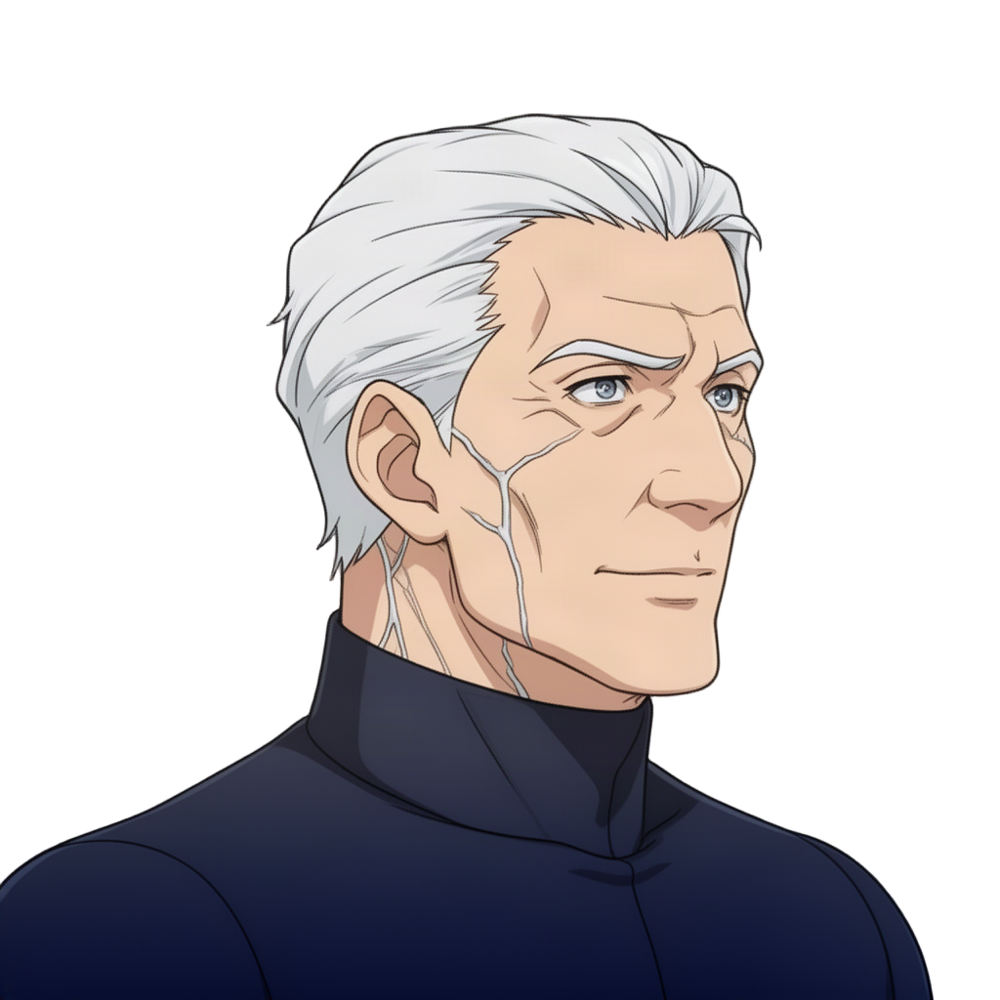
p anselm_calmflux-2-t2i $0.012 art/refs/ch04/portraits/anselm_calm.pngused: ch4×4, ch6×4prompt
model: fal-ai/flux-2/edit
purpose: sheet
refs: art/refs/ch04/portraits/anselm_calm.png
Anime-style character portrait, clean line art, soft cel shading, gentle natural colours. Head and shoulders, three-quarter view, the face turned toward the viewer's right, plain light grey background, no text. The same character as the reference image: same face, same hair, same clothes, same lighting, same skin colour; only the expression changes. Both shoulders visible. The eyes are fully drawn with irises, pupils and highlights. A moderate, restrained expression, no grin, no laughing. The glass helmet is OFF and not visible at all; only the dark suit collar shows. White hair, thin pale scars on temples and neck. Expression: calm and courteous, steady, a face that has been listened to for a long time.
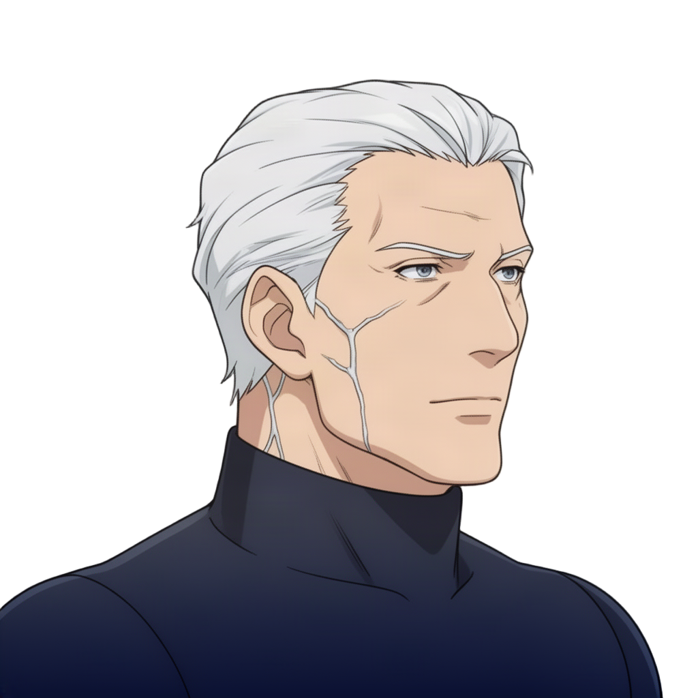
p anselm_coldflux-2 $0.024 art/refs/ch04/portraits/anselm_cold.pngused: ch4×3, ch6×2prompt
model: fal-ai/flux-2/edit
purpose: sheet
refs: art/refs/ch04/portraits/anselm_calm.png
Anime-style character portrait, clean line art, soft cel shading, gentle natural colours. Head and shoulders, three-quarter view, the face turned toward the viewer's right, plain light grey background, no text. The same character as the reference image: same face, same hair, same clothes, same lighting, same skin colour; only the expression changes. Both shoulders visible. The eyes are fully drawn with irises, pupils and highlights. A moderate, restrained expression, no grin, no laughing. The glass helmet is OFF and not visible at all; only the dark suit collar shows. White hair, thin pale scars on temples and neck. Expression: cold, flat, closed, eyes level and unfeeling.
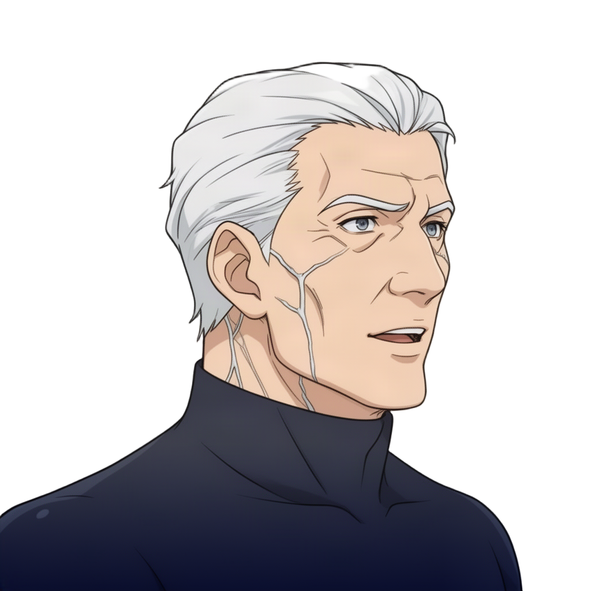
p anselm_gentleflux-2 $0.024 art/refs/ch04/portraits/anselm_gentle.pngused: ch4×2, ch6×2prompt
model: fal-ai/flux-2/edit
purpose: sheet
refs: art/refs/ch04/portraits/anselm_calm.png
Anime-style character portrait, clean line art, soft cel shading, gentle natural colours. Head and shoulders, three-quarter view, the face turned toward the viewer's right, plain light grey background, no text. The same character as the reference image: same face, same hair, same clothes, same lighting, same skin colour; only the expression changes. Both shoulders visible. The eyes are fully drawn with irises, pupils and highlights. A moderate, restrained expression, no grin, no laughing. The glass helmet is OFF and not visible at all; only the dark suit collar shows. White hair, thin pale scars on temples and neck. Expression: gentle, soft-eyed, speaking kindly.
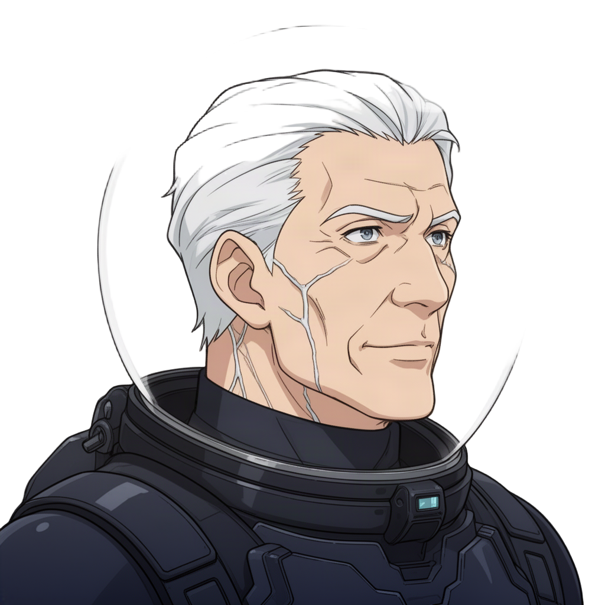
p anselm_helmed art/refs/ch04/portraits/anselm_helmed.pngused: ch4×1, ch6×1prompt
model: fal-ai/flux-2
purpose: sheet
refs:
Anime-style character portrait, clean line art, soft cel shading, gentle natural colours. Head and shoulders, three-quarter view, the face turned toward the viewer's right, plain light grey background, no text. Both shoulders visible. The eyes are fully drawn with irises, pupils and highlights. A restrained expression, no grin. A broad-shouldered, white-haired man of about seventy-two with a heavy, composed, well-kept face, thin pale scars running down from his temples along the sides of his neck above the collar. He wears a dark close-fitting hard suit with a clear glass helmet worn open and pushed back behind his head. Expression: calm, courteous, a face that has been listened to for a long time.
 p anselm_loweredflux-2 $0.024 art/refs/ch06/portraits/anselm_lowered.pngused: ch6×1
p anselm_loweredflux-2 $0.024 art/refs/ch06/portraits/anselm_lowered.pngused: ch6×1prompt
model: fal-ai/flux-2/edit
purpose: sheet
refs: art/refs/ch04/portraits/anselm_calm.png
Anime-style character portrait, clean line art, soft cel shading, gentle natural colours. Head and shoulders, three-quarter view, the face turned toward the viewer's right, plain light grey background, no text. The same character as the reference image: same face, same hair, same clothes, same skin colour; only the expression changes. Broad-shouldered white-haired man of about seventy-two, grey-blue eyes, thin pale scars from temple down the neck, dark high-collared suit. Both shoulders visible. Small normal realistic eyes, fully drawn with irises, pupils and highlights, no cartoon eyes, not large, not round, not shiny. A restrained realistic expression, moderate, no grin, no laughing, no tears streaming. Expression: lowered and private, eyes cast down and to the side, face quiet and heavy, mouth closed, a trace of sadness.
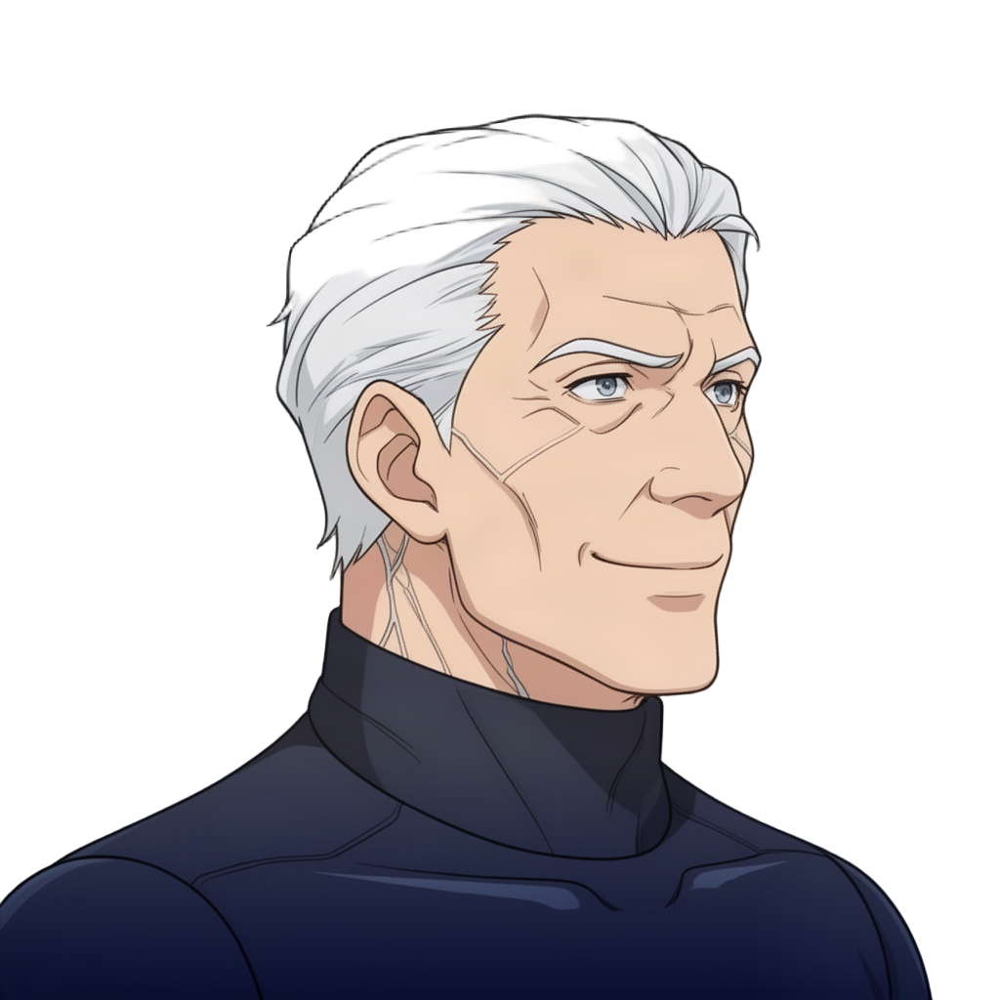
p anselm_smileflux-2 $0.024 art/refs/ch04/portraits/anselm_smile.pngused: ch4×1prompt
model: fal-ai/flux-2/edit
purpose: sheet
refs: art/refs/ch04/portraits/anselm_calm.png
Anime-style character portrait, clean line art, soft cel shading, gentle natural colours. Head and shoulders, three-quarter view, the face turned toward the viewer's right, plain light grey background, no text. The same character as the reference image: same face, same hair, same clothes, same lighting, same skin colour; only the expression changes. Both shoulders visible. The eyes are fully drawn with irises, pupils and highlights. A moderate, restrained expression, no grin, no laughing. The glass helmet is OFF and not visible at all; only the dark suit collar shows. White hair, thin pale scars on temples and neck. Expression: a small smile, not unkind.
 p aurel_calmflux-2 $0.024 art/refs/ch05/portraits/aurel_calm.pngused: unused
p aurel_calmflux-2 $0.024 art/refs/ch05/portraits/aurel_calm.pngused: unusedprompt
model: fal-ai/flux-2/edit
purpose: sheet
refs: art/refs/ch05/portraits/aurel.png
Anime-style character portrait, clean line art, soft cel shading, gentle natural colours. Head and shoulders, three-quarter view, the face turned toward the viewer's right, plain light grey background, no text. The same character as the reference image: same face, same hair, same clothes, same skin colour; only the expression changes. Both shoulders visible. The eyes are fully drawn with irises, pupils and highlights, looking open. A restrained realistic expression, moderate, no grin, no laughing, no tears streaming. Expression: calm and attentive, mouth closed, steady gaze.
 p aurel_tiredflux-2 $0.024 art/refs/ch05/portraits/aurel_tired.pngused: unused
p aurel_tiredflux-2 $0.024 art/refs/ch05/portraits/aurel_tired.pngused: unusedprompt
model: fal-ai/flux-2/edit
purpose: sheet
refs: art/refs/ch05/portraits/aurel.png
Anime-style character portrait, clean line art, soft cel shading, gentle natural colours. Head and shoulders, three-quarter view, the face turned toward the viewer's right, plain light grey background, no text. The same character as the reference image: same face, same hair, same clothes, same skin colour; only the expression changes. Both shoulders visible. The eyes are fully drawn with irises, pupils and highlights, looking open. A restrained realistic expression, moderate, no grin, no laughing, no tears streaming. Expression: very tired, heavy lids, mouth slightly slack, still steady.
 p claywoman_dry art/refs/ch06/portraits/claywoman_dry.pngused: ch6×2
p claywoman_dry art/refs/ch06/portraits/claywoman_dry.pngused: ch6×2prompt
model: fal-ai/flux-2
purpose: sheet
refs:
Anime-style character portrait, clean line art, soft cel shading, gentle natural colours. Head and shoulders, three-quarter view turned toward the viewer's right (his or her face and nose point to the right edge of the picture), plain light grey background, no text. Both shoulders visible. The eyes are small, normal, realistic, fully drawn with irises, pupils and highlights, not large, not round, not shiny. Restrained realistic face. Thin pale scars like pen lines run from the temples down both sides of the neck. Wearing a close slate-grey high-collared suit. A woman of eighty with a face like a walnut: deeply wrinkled brown-tan skin, thin white hair pulled back, small sharp dark eyes, thin dry mouth. Dry, blunt, unimpressed expression.
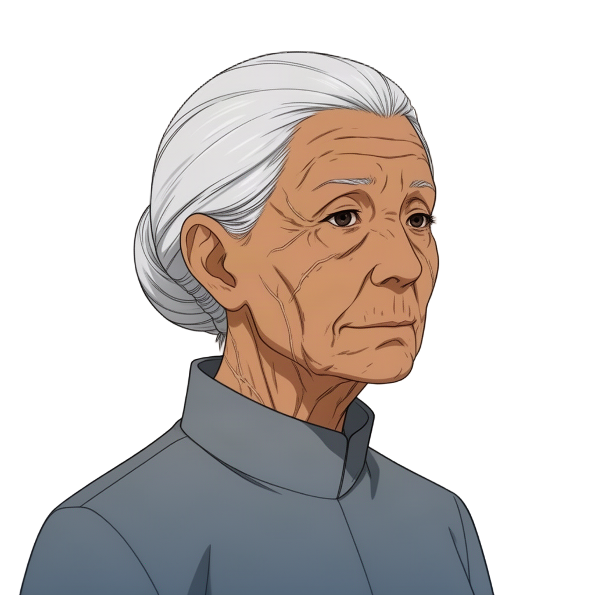
p claywoman_wry art/refs/ch06/portraits/claywoman_wry.pngused: ch6×2prompt
model: fal-ai/flux-2/edit
purpose: sheet
refs: art/refs/ch06/portraits/clay_woman.png
Anime-style character portrait, clean line art, soft cel shading, gentle natural colours. Head and shoulders, three-quarter view, the face turned toward the viewer's right, plain light grey background, no text. The same character as the reference image: same face, same hair, same clothes, same skin colour; only the expression changes. Woman of eighty, face like a walnut, deeply wrinkled brown-tan skin, white hair pulled back, small dark eyes, slate-grey suit, thin pale scars at the temple. Both shoulders visible. Small normal realistic eyes, fully drawn with irises, pupils and highlights, no cartoon eyes, not large, not round, not shiny. A restrained realistic expression, moderate, no grin, no laughing, no tears streaming. Expression: dry and a little gentler, one corner of the mouth slightly raised, eyes sharp and tired, restrained.
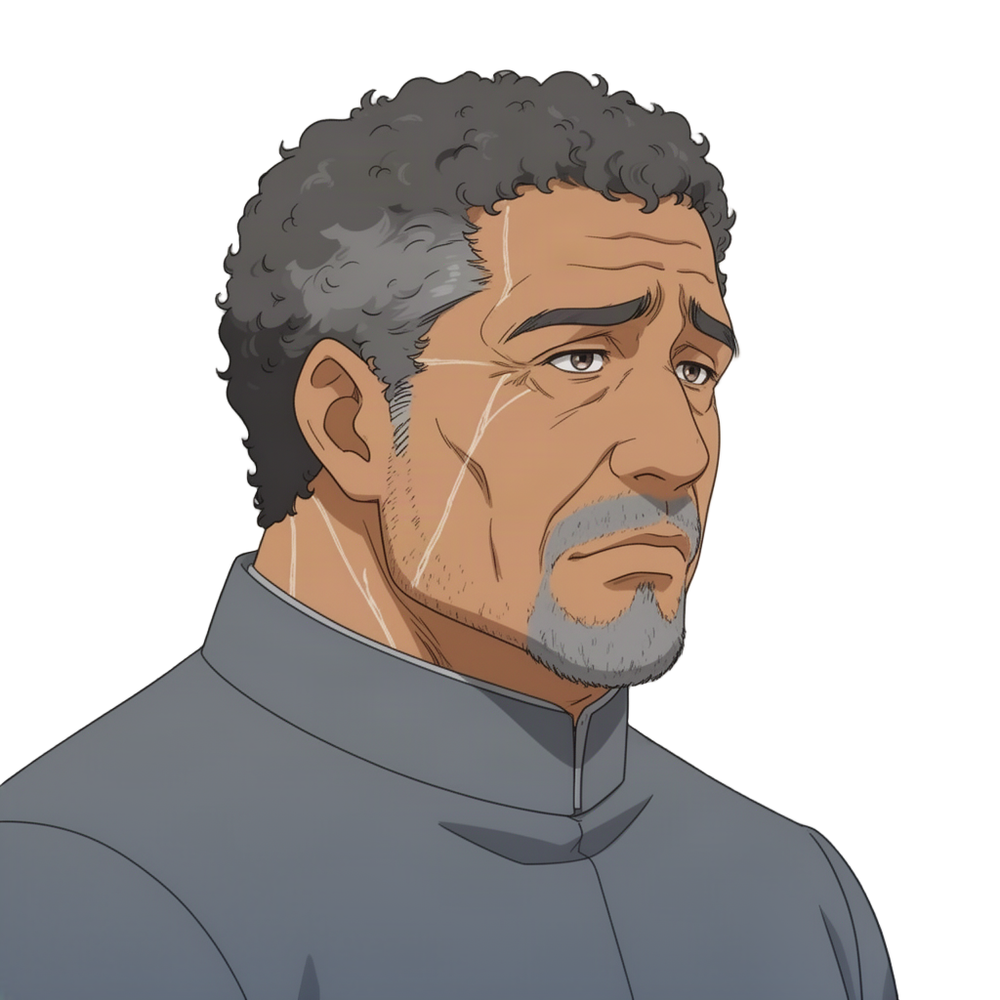
p corin_grief art/refs/ch06/portraits/corin_grief.pngused: ch6×4prompt
model: fal-ai/flux-2
purpose: sheet
refs:
Anime-style character portrait, clean line art, soft cel shading, gentle natural colours. Head and shoulders, three-quarter view turned toward the viewer's right (his or her face and nose point to the right edge of the picture), plain light grey background, no text. Both shoulders visible. The eyes are small, normal, realistic, fully drawn with irises, pupils and highlights, not large, not round, not shiny. Restrained realistic face. Thin pale scars like pen lines run from the temples down both sides of the neck. Wearing a close slate-grey high-collared suit. A big broad-shouldered heavy-built man of about sixty-five, warm tan-brown skin, short curly dark hair going grey, broad weathered face, heavy brows, a short grey stubble. Grief held in, jaw tight, mouth closed, eyes steady and tired.
 p corin_pityingflux-2 $0.024 art/refs/ch11/portraits/corin_pitying.pngused: unused
p corin_pityingflux-2 $0.024 art/refs/ch11/portraits/corin_pitying.pngused: unusedprompt
model: fal-ai/flux-2/edit
purpose: sprite
refs: art/refs/ch06/portraits/corin_grief.png
Anime-style character portrait, clean line art, soft cel shading, gentle natural colours. Head and shoulders, three-quarter view, the face turned toward the viewer's right (nose pointing to the right edge of the picture), plain light grey background, no text. Both shoulders visible. Small normal realistic eyes, fully drawn with irises, pupils and highlights, not large, not round, not shiny. A restrained realistic expression, moderate, no grin, no tears streaming. The same character as the reference image: same face, same hair, same clothes, same skin colour; only the expression changes. Big man of about sixty-five, tan-brown skin, grey stubble. Expression: pitying, gentle and sorrowful, brows raised a little at the inner ends, eyes soft and steady, mouth closed, no hatred.
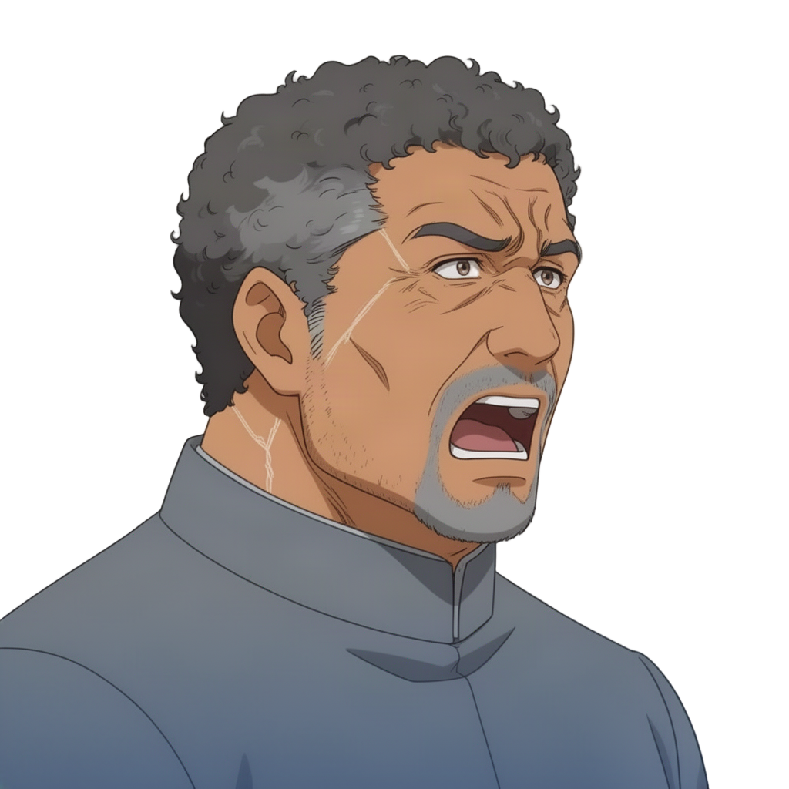
p corin_shoutingflux-2 $0.024 art/refs/ch06/portraits/corin_shouting.pngused: ch6×4prompt
model: fal-ai/flux-2/edit
purpose: sheet
refs: art/refs/ch06/portraits/corin.png
Anime-style character portrait, clean line art, soft cel shading, gentle natural colours. Head and shoulders, three-quarter view, the face turned toward the viewer's right, plain light grey background, no text. The same character as the reference image: same face, same hair, same clothes, same skin colour; only the expression changes. Big heavy man of sixty-five, tan-brown skin, short curly grey-dark hair, grey stubble, slate-grey suit, thin pale scars at the temple and neck. Both shoulders visible. Small normal realistic eyes, fully drawn with irises, pupils and highlights, no cartoon eyes, not large, not round, not shiny. A restrained realistic expression, moderate, no grin, no laughing, no tears streaming. Expression: shouting across a distance, mouth open, voice cracking, brows drawn up and together, eyes strained, restrained and realistic.
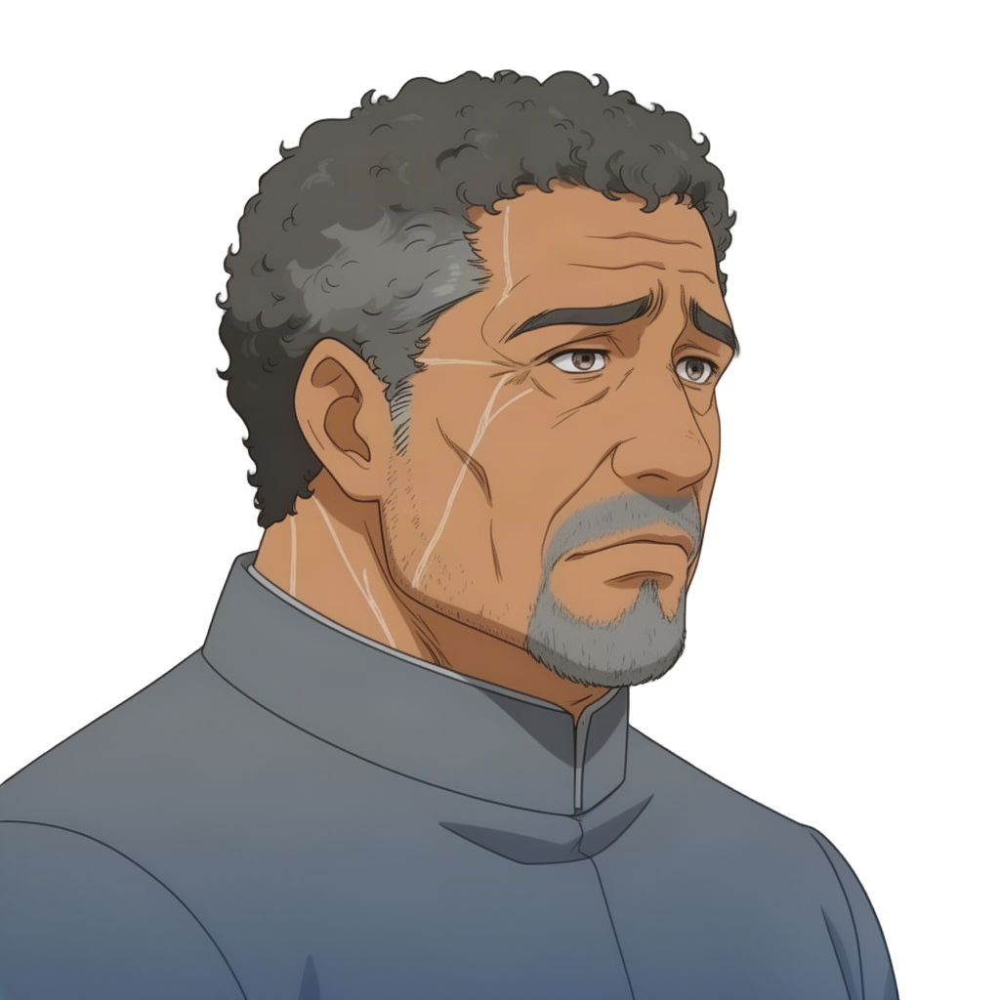
p corin_staringflux-2 $0.024 art/refs/ch06/portraits/corin_staring.pngused: unusedprompt
model: fal-ai/flux-2/edit
purpose: sheet
refs: art/refs/ch06/portraits/corin.png
Anime-style character portrait, clean line art, soft cel shading, gentle natural colours. Head and shoulders, three-quarter view, the face turned toward the viewer's right, plain light grey background, no text. The same character as the reference image: same face, same hair, same clothes, same skin colour; only the expression changes. Big heavy man of sixty-five, tan-brown skin, short curly grey-dark hair, grey stubble, slate-grey suit, thin pale scars at the temple and neck. Both shoulders visible. Small normal realistic eyes, fully drawn with irises, pupils and highlights, no cartoon eyes, not large, not round, not shiny. A restrained realistic expression, moderate, no grin, no laughing, no tears streaming. Expression: staring at nothing, eyes open and fixed straight ahead with pupils visible, face slack and heavy, mouth closed.
 p crane_flatflux-2-t2i $0.012 art/refs/ch07/portraits/crane_flat.pngused: unused
p crane_flatflux-2-t2i $0.012 art/refs/ch07/portraits/crane_flat.pngused: unusedprompt
model: fal-ai/flux-2
purpose: sheet
refs:
Anime-style character portrait, clean line art, soft cel shading, gentle natural colours. Head and shoulders, three-quarter view turned toward the viewer's right (the face and nose point to the right edge of the picture), plain light grey background, no text. Both shoulders visible. The eyes are small, normal, realistic, fully drawn with irises, pupils and highlights, not large, not round, not shiny. Restrained realistic face. A broad-shouldered man of about forty-five, olive-pale skin, short brown hair with a little grey at the sides, square jaw, tired brown eyes, a plain dark close-fitting high-necked security jacket. Expression: flat and professional, mouth level, eyes steady, giving nothing away.
 p crane_sorryflux-2 $0.024 art/refs/ch07/portraits/crane_sorry.pngused: unused
p crane_sorryflux-2 $0.024 art/refs/ch07/portraits/crane_sorry.pngused: unusedprompt
model: fal-ai/flux-2/edit
purpose: sheet
refs: art/refs/ch07/portraits/crane_flat.png
Anime-style character portrait, clean line art, soft cel shading, gentle natural colours. Head and shoulders, three-quarter view, the face turned toward the viewer's right, plain light grey background, no text. The same character as the reference image: same face, same clothes, same skin colour, same lighting; only the expression changes. Both shoulders visible. Small normal realistic eyes, fully drawn with irises, pupils and highlights, no cartoon eyes, not large, not round, not shiny. A restrained realistic expression, moderate, no grin, no laughing, no tears streaming. Same short brown hair with grey at the sides, dark high-necked jacket. Expression: sorry and uneasy, brows lifted and drawn together a little, eyes meeting the viewer's with regret, mouth tight.
 p dace_angryflux-2 $0.024 art/refs/ch10/portraits/dace_angry.pngused: unused
p dace_angryflux-2 $0.024 art/refs/ch10/portraits/dace_angry.pngused: unusedprompt
model: fal-ai/flux-2/edit
purpose: sheet
refs: art/refs/ch09/portraits_cut/../../ch08/portraits/dace_cheerful.png
Anime-style character portrait, clean line art, soft cel shading, gentle natural colours. Head and shoulders, three-quarter view, the face turned toward the viewer's right, plain light grey background, no text. The same character as the reference image: same face, same hair, same clothes, same skin colour; only the expression changes. Small normal realistic eyes, fully drawn with irises, pupils and highlights, no cartoon eyes. A restrained realistic expression, moderate, no grin, no laughing, no tears. A woman of about fifty with a long weather-beaten tanned face, grey-brown hair, clay pipe in her teeth, battered hat tied with string, patched canvas coat. Expression: angry, brow drawn down, jaw tight around the pipe, eyes hard.
 p dace_cheerfulflux-2-t2i $0.012 art/refs/ch08/portraits/dace_cheerful.pngused: unused
p dace_cheerfulflux-2-t2i $0.012 art/refs/ch08/portraits/dace_cheerful.pngused: unusedprompt
model: fal-ai/flux-2
purpose: sheet
refs:
Anime-style character portrait, clean line art, soft cel shading, gentle natural colours. Head and shoulders, three-quarter view turned toward the viewer's right (the face and nose point to the right edge of the picture), plain light grey background, no text. Both shoulders visible. The eyes are small, normal, realistic, fully drawn with irises, pupils and highlights, not large, not round, not shiny. Restrained realistic face. A woman of about fifty with a long weather-beaten tanned face, creased skin, grey-brown hair, a clay pipe held in her teeth, a battered hat tied on with string under her chin, worn patched canvas coat. Good-humoured, amused, a faint dry smile around the pipe, no grin.
 p dace_dryflux-2 $0.024 art/refs/ch08/portraits/dace_dry.pngused: unused
p dace_dryflux-2 $0.024 art/refs/ch08/portraits/dace_dry.pngused: unusedprompt
model: fal-ai/flux-2/edit
purpose: sprite
refs: art/refs/ch08/portraits/dace_cheerful.png
Anime-style character portrait, clean line art, soft cel shading, gentle natural colours. Head and shoulders, three-quarter view, the face turned toward the viewer's right, plain light grey background, no text. The same character as the reference image: same face, same hair, same clothes, same skin colour; only the expression changes. Both shoulders visible. Small normal realistic eyes, fully drawn with irises, pupils and highlights, not large, not round, not shiny. Restrained realistic expression, moderate, no grin, no laughing. Same woman with pipe in her teeth and string-tied hat. Expression: level, dry and shrewd, mouth set, eyes steady and knowing, no smile.
 p dace_graveflux-2 $0.024 art/refs/ch09/portraits/dace_grave.pngused: unused
p dace_graveflux-2 $0.024 art/refs/ch09/portraits/dace_grave.pngused: unusedprompt
model: fal-ai/flux-2/edit
purpose: sheet
refs: art/refs/ch08/portraits/dace_cheerful.png
Same woman, same battered hat tied on with string, same grey-brown hair, same patched canvas coat, same clay pipe in her teeth, same art style, same three-quarter view facing the viewer's right, plain light grey background. Only the expression changes. Restrained realistic face, eyes small and fully drawn with irises, pupils and highlights. Expression: quiet and serious, level gaze, mouth closed on the pipe, a touch of weary kindness, no smile.
 p dace_painflux-2 $0.024 art/refs/ch08/portraits/dace_pain.pngused: unused
p dace_painflux-2 $0.024 art/refs/ch08/portraits/dace_pain.pngused: unusedprompt
model: fal-ai/flux-2/edit
purpose: sprite
refs: art/refs/ch08/portraits/dace_cheerful.png
Anime-style character portrait, clean line art, soft cel shading, gentle natural colours. Head and shoulders, three-quarter view, the face turned toward the viewer's right, plain light grey background, no text. The same character as the reference image: same face, same hair, same clothes, same skin colour; only the expression changes. Both shoulders visible. Small normal realistic eyes, fully drawn with irises, pupils and highlights, not large, not round, not shiny. Restrained realistic expression, moderate, no grin, no laughing. Same woman with pipe held in her teeth and string-tied hat. Expression: in real pain, teeth clenched on the pipe, brows drawn together, eyes narrowed, a wince.
 p dace_questioningflux-2 $0.024 art/refs/ch09/portraits/dace_questioning.pngused: unused
p dace_questioningflux-2 $0.024 art/refs/ch09/portraits/dace_questioning.pngused: unusedprompt
model: fal-ai/flux-2/edit
purpose: sheet
refs: art/refs/ch08/portraits/dace_cheerful.png
Same woman, same battered hat tied on with string, same grey-brown hair, same patched canvas coat, same clay pipe in her teeth, same art style, same three-quarter view facing the viewer's right, plain light grey background. Only the expression changes. Restrained realistic face, eyes small and fully drawn with irises, pupils and highlights. Expression: questioning, one eyebrow slightly raised, eyes steady and wary, mouth closed on the pipe, no smile.
 p enginewoman_guardedflux-2-t2i $0.012 art/refs/ch09/portraits/enginewoman_guarded.pngused: unused
p enginewoman_guardedflux-2-t2i $0.012 art/refs/ch09/portraits/enginewoman_guarded.pngused: unusedprompt
model: fal-ai/flux-2
purpose: sheet
refs:
Anime-style character portrait, clean line art, soft cel shading, gentle natural colours. Head and shoulders, three-quarter view turned toward the viewer's right (the face and nose point to the right edge of the picture), plain light grey background, no text. Both shoulders visible. The eyes are small, normal, realistic, fully drawn with irises, pupils and highlights, not large, not round, not shiny. Restrained realistic face. A woman of about forty-five, an engine designer, dark brown hair pinned back plainly with a few strands loose, light olive skin, a plain dark work smock with rolled sleeves. Tired, guarded, reserved expression.
 p enginewoman_weepingflux-2 $0.024 art/refs/ch09/portraits/enginewoman_weeping.pngused: unused
p enginewoman_weepingflux-2 $0.024 art/refs/ch09/portraits/enginewoman_weeping.pngused: unusedprompt
model: fal-ai/flux-2/edit
purpose: sheet
refs: art/refs/ch09/portraits/enginewoman_guarded.png
Same woman, same dark brown hair pinned back, same dark work smock with rolled sleeves, NO spectacles, same art style, same pose and three-quarter view facing the viewer's right, plain light grey background. Only the expression changes. Restrained realistic face, eyes brown. Expression: face crumpling into tears, eyes closed, brows drawn up in the middle, mouth trembling, one tear on the cheek, sincere, no smile.
 p fallowcaller_puzzledflux-2-t2i $0.012 art/refs/ch11/portraits/fallowcaller_puzzled.pngused: unused
p fallowcaller_puzzledflux-2-t2i $0.012 art/refs/ch11/portraits/fallowcaller_puzzled.pngused: unusedprompt
model: fal-ai/flux-2
purpose: sprite
refs:
Anime-style character portrait, clean line art, soft cel shading, gentle natural colours. Head and shoulders, three-quarter view turned toward the viewer's right (nose pointing to the right edge of the picture), plain light grey background, no text. Both shoulders visible. Small normal realistic eyes, fully drawn with irises, pupils and highlights. Restrained realistic face. Thin pale scars like pen lines run from the temples down both sides of the neck. A thin old man of about seventy, weathered tan skin, thin white hair cut short, white stubble, deep lines, plain grey-green sea-silk tunic with a high collar. Puzzled and tired, brows drawn slightly together, mouth closed, like a man who has come home and found the house moved.
 p fallowcaller_wetflux-2 $0.024 art/refs/ch11/portraits/fallowcaller_wet.pngused: unused
p fallowcaller_wetflux-2 $0.024 art/refs/ch11/portraits/fallowcaller_wet.pngused: unusedprompt
model: fal-ai/flux-2/edit
purpose: sprite
refs: art/refs/ch11/portraits/fallowcaller_puzzled.png
Anime-style character portrait, clean line art, soft cel shading, gentle natural colours. Head and shoulders, three-quarter view, the face turned toward the viewer's right (nose pointing to the right edge of the picture), plain light grey background, no text. Both shoulders visible. Small normal realistic eyes, fully drawn with irises, pupils and highlights, not large, not round, not shiny. A restrained realistic expression, moderate, no grin, no tears streaming. The same character as the reference image: same face, same hair, same clothes, same skin colour; only the expression changes. Thin old man of about seventy with white hair. Expression: his eyes are wet and shining with tears held in, brows slightly drawn together, mouth closed, bewildered grief, not angry.
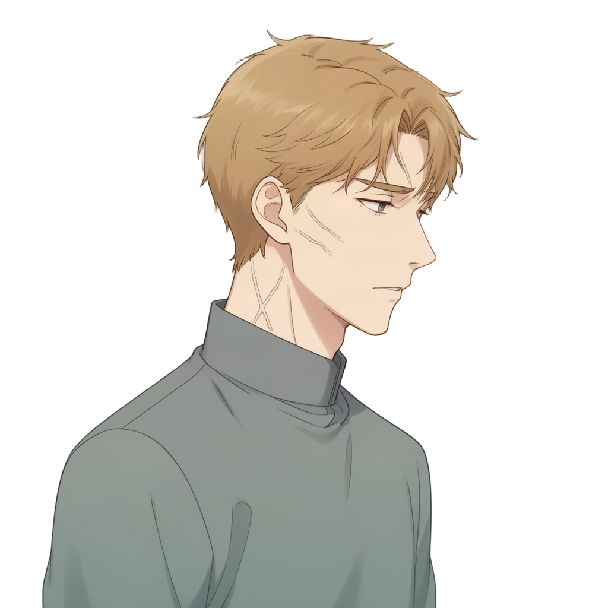
p fallowyoung_ashamed art/refs/ch06/portraits/fallowyoung_ashamed.pngused: ch6×1prompt
model: fal-ai/flux-2
purpose: sheet
refs:
Anime-style character portrait, clean line art, soft cel shading, gentle natural colours. Head and shoulders, three-quarter view turned toward the viewer's right (his or her face and nose point to the right edge of the picture), plain light grey background, no text. Both shoulders visible. The eyes are small, normal, realistic, fully drawn with irises, pupils and highlights, not large, not round, not shiny. Restrained realistic face. Thin pale scars like pen lines run from the temples down both sides of the neck. Wearing a close slate-grey high-collared suit. A young man of about twenty-four, light skin, sandy-brown hair, lean face, the scars at his temples faint and hardly faded. Plain grey-green sea-silk tunic instead of a suit. Ashamed, eyes lowered and looking away to the side, mouth closed.
 p fallowyoung_exhaustedflux-2 $0.024 art/refs/ch11/portraits/fallowyoung_exhausted.pngused: unused
p fallowyoung_exhaustedflux-2 $0.024 art/refs/ch11/portraits/fallowyoung_exhausted.pngused: unusedprompt
model: fal-ai/flux-2/edit
purpose: sprite
refs: art/refs/ch06/portraits/fallowyoung_ashamed.png
Anime-style character portrait, clean line art, soft cel shading, gentle natural colours. Head and shoulders, three-quarter view, the face turned toward the viewer's right (nose pointing to the right edge of the picture), plain light grey background, no text. Both shoulders visible. Small normal realistic eyes, fully drawn with irises, pupils and highlights, not large, not round, not shiny. A restrained realistic expression, moderate, no grin, no tears streaming. The same character as the reference image: same face, same hair, same clothes, same skin colour; only the expression changes. Young man of about twenty-four, light skin, sandy-brown hair, plain grey-green tunic. Expression: exhausted from days without sleep, grey pallor, lips pale and greyish, heavy-lidded eyes, looking ahead, mouth slightly open.
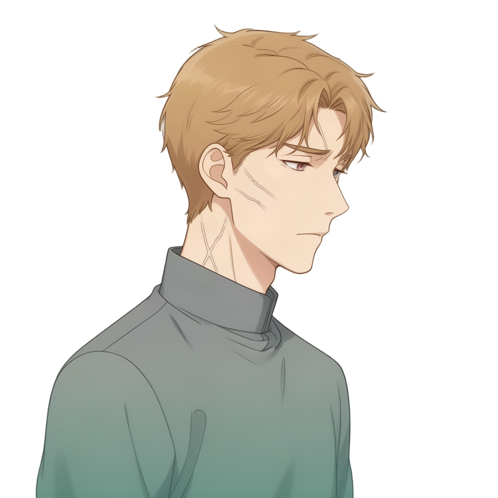
p fallowyoung_sorry art/refs/ch06/portraits/fallowyoung_sorry.pngused: ch6×1prompt
model: fal-ai/flux-2/edit
purpose: sheet
refs: art/refs/ch06/portraits/fallow_young_man.png
Anime-style character portrait, clean line art, soft cel shading, gentle natural colours. Head and shoulders, three-quarter view, the face turned toward the viewer's right, plain light grey background, no text. The same character as the reference image: same face, same hair, same clothes, same skin colour; only the expression changes. Young man of twenty-four, light skin, sandy-brown hair, grey-green tunic, faint scars at the temple. Both shoulders visible. Small normal realistic eyes, fully drawn with irises, pupils and highlights, no cartoon eyes, not large, not round, not shiny. A restrained realistic expression, moderate, no grin, no laughing, no tears streaming. Expression: sorry, apologetic, eyes cast down and away, brows lifted slightly at the centre, lips pressed.
 p fatman_firmflux-2 $0.024 art/refs/ch10/portraits/fatman_firm.pngused: unused
p fatman_firmflux-2 $0.024 art/refs/ch10/portraits/fatman_firm.pngused: unusedprompt
model: fal-ai/flux-2/edit
purpose: sheet
refs: art/refs/ch09/portraits/fatman_unhappy.png
Anime-style character portrait, clean line art, soft cel shading, gentle natural colours. Head and shoulders, three-quarter view, the face and nose clearly turned toward the viewer's right, plain light grey background, no text. The same character as the reference image: same fat old face, same white hair and stubble, same blue and cream striped knitted jersey, same skin colour; only the expression changes. Small normal realistic eyes, fully drawn with irises, pupils and highlights. A restrained realistic expression, moderate, no grin, no laughing. Expression: firm and level, explaining a law he has to keep, mouth closed and steady, eyes straight ahead, jaw set.
 p fatman_unhappyflux-2-t2i $0.012 art/refs/ch09/portraits/fatman_unhappy.pngused: unused
p fatman_unhappyflux-2-t2i $0.012 art/refs/ch09/portraits/fatman_unhappy.pngused: unusedprompt
model: fal-ai/flux-2
purpose: sheet
refs:
Anime-style character portrait, clean line art, soft cel shading, gentle natural colours. Head and shoulders, three-quarter view turned toward the viewer's right (the face and nose point to the right edge of the picture), plain light grey background, no text. Both shoulders visible. The eyes are small, normal, realistic, fully drawn with irises, pupils and highlights. Restrained realistic face. A fat old man of about seventy, a harbour caller of the Driftfolk, round heavy face, jowls, white stubble, thin white hair, weathered skin, a striped blue and cream knitted jersey. Unhappy, reluctant, brows drawn together, mouth turned down.
 p fatman_wearyflux-2 $0.024 art/refs/ch10/portraits/fatman_weary.pngused: unused
p fatman_wearyflux-2 $0.024 art/refs/ch10/portraits/fatman_weary.pngused: unusedprompt
model: fal-ai/flux-2/edit
purpose: sheet
refs: art/refs/ch09/portraits/fatman_unhappy.png
Anime-style character portrait, clean line art, soft cel shading, gentle natural colours. Head and shoulders, three-quarter view, the face and nose clearly turned toward the viewer's right, plain light grey background, no text. The same character as the reference image: same fat old face, same white hair and stubble, same blue and cream striped knitted jersey, same skin colour; only the expression changes. Small normal realistic eyes, fully drawn with irises, pupils and highlights. A restrained realistic expression, moderate, no grin, no laughing. Expression: tired and wary, lips pressed, brow lifted, looking slightly away, a man mopping his neck, worn out.
 p garran_acceptingflux-2 $0.024 art/refs/ch08/portraits/garran_accepting.pngused: unused
p garran_acceptingflux-2 $0.024 art/refs/ch08/portraits/garran_accepting.pngused: unusedprompt
model: fal-ai/flux-2/edit
purpose: sprite
refs: art/refs/ch08/portraits/garran_wary.png
Anime-style character portrait, clean line art, soft cel shading, gentle natural colours. Head and shoulders, three-quarter view, the face turned toward the viewer's right, plain light grey background, no text. The same character as the reference image: same face, same hair, same clothes, same skin colour; only the expression changes. Both shoulders visible. Small normal realistic eyes, fully drawn with irises, pupils and highlights, not large, not round, not shiny. Restrained realistic expression. Same big man. Expression: thoughtful and softening, brows relaxed, eyes level and calm, mouth closed.
 p garran_waryflux-2-t2i $0.012 art/refs/ch08/portraits/garran_wary.pngused: unused
p garran_waryflux-2-t2i $0.012 art/refs/ch08/portraits/garran_wary.pngused: unusedprompt
model: fal-ai/flux-2
purpose: sheet
refs:
Anime-style character portrait, clean line art, soft cel shading, gentle natural colours. Head and shoulders, three-quarter view turned toward the viewer's right (the face and nose point to the right edge of the picture), plain light grey background, no text. Both shoulders visible. The eyes are small, normal, realistic, fully drawn with irises, pupils and highlights, not large, not round, not shiny. Restrained realistic face. A big slow man of about forty, a dock porter, broad face with a broken nose, tan weathered skin, short dark hair, dark stubble, thick neck, coarse sleeveless work shirt with a rope sling on one shoulder. Wary, guarded, brows lowered, mouth closed.
 p harpoongirl_angry art/refs/ch06/portraits/harpoongirl_angry.pngused: ch6×1
p harpoongirl_angry art/refs/ch06/portraits/harpoongirl_angry.pngused: ch6×1prompt
model: fal-ai/flux-2
purpose: sheet
refs:
Anime-style character portrait, clean line art, soft cel shading, gentle natural colours. Head and shoulders, three-quarter view turned toward the viewer's right (his or her face and nose point to the right edge of the picture), plain light grey background, no text. Both shoulders visible. The eyes are small, normal, realistic, fully drawn with irises, pupils and highlights, not large, not round, not shiny. Restrained realistic face. Thin pale scars like pen lines run from the temples down both sides of the neck. Wearing a close slate-grey high-collared suit. A girl of nineteen, olive-tan skin, black hair cut short at the jaw, thin face, dark eyes. Angry and stubborn: brows drawn together, mouth hard, restrained, no shouting.
 p harpoongirl_bitter art/refs/ch06/portraits/harpoongirl_bitter.pngused: ch6×1
p harpoongirl_bitter art/refs/ch06/portraits/harpoongirl_bitter.pngused: ch6×1prompt
model: fal-ai/flux-2/edit
purpose: sheet
refs: art/refs/ch06/portraits/harpoon_girl.png
Anime-style character portrait, clean line art, soft cel shading, gentle natural colours. Head and shoulders, three-quarter view, the face turned toward the viewer's right, plain light grey background, no text. The same character as the reference image: same face, same hair, same clothes, same skin colour; only the expression changes. Girl of nineteen, olive-tan skin, short black hair at the jaw, slate-grey suit, thin pale scars at the temple. Both shoulders visible. Small normal realistic eyes, fully drawn with irises, pupils and highlights, no cartoon eyes, not large, not round, not shiny. A restrained realistic expression, moderate, no grin, no laughing, no tears streaming. Expression: bitter and questioning, mouth slightly open as if asking, brows drawn, eyes hard, restrained.
 p hullman_steadyflux-2-t2i $0.012 art/refs/ch09/portraits/hullman_steady.pngused: unused
p hullman_steadyflux-2-t2i $0.012 art/refs/ch09/portraits/hullman_steady.pngused: unusedprompt
model: fal-ai/flux-2
purpose: sheet
refs:
Anime-style character portrait, clean line art, soft cel shading, gentle natural colours. Head and shoulders, three-quarter view turned toward the viewer's right (the face and nose point to the right edge of the picture), plain light grey background, no text. Both shoulders visible. The eyes are small, normal, realistic, fully drawn with irises, pupils and highlights, not large, not round, not shiny. Restrained realistic face. A grey stooped elderly man of about sixty-five, a ship hull engineer, thin grey hair and grey stubble, light skin, deep lines, heavy shoulders hunched, plain dark work coat with a worn collar. Quiet, steady, weary expression.
 p jef_annoyedflux-2 $0.024 art/refs/ch04/portraits/jef_annoyed.pngused: ch4×1
p jef_annoyedflux-2 $0.024 art/refs/ch04/portraits/jef_annoyed.pngused: ch4×1prompt
model: fal-ai/flux-2/edit
purpose: sheet
refs: art/refs/ch04/portraits/jef_grumbling.png
Anime-style character portrait, clean line art, soft cel shading, gentle natural colours. Head and shoulders, three-quarter view, the face turned toward the viewer's right, plain light grey background, no text. The same character as the reference image: same face, same SMALL NARROW HEAVY-LIDDED dark eyes under LEVEL STRAIGHT heavy brows, same very old deeply wrinkled nearly bald head with a white tuft, same apron and jersey with a hole at the elbow. The eyes stay SMALL and NARROW: NOT large, NOT round, NOT wide open, no raised or sad eyebrows, nothing cartoonish. Restrained, realistic, hard to read. Expression: irritated and detached, a flat look to the side as if annoyed at his own hand.
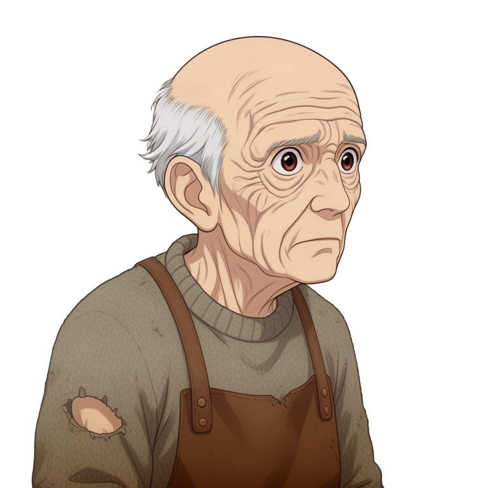
p jef_attentiveflux-2 $0.024 art/refs/ch04/portraits/jef_attentive.pngused: ch4×11prompt
model: fal-ai/flux-2/edit
purpose: sheet
refs: art/refs/ch04/portraits/jef_grumbling.png
Anime-style character portrait, clean line art, soft cel shading, gentle natural colours. Head and shoulders, three-quarter view, the face turned toward the viewer's right, plain light grey background, no text. The same character as the reference image: same face, same SMALL NARROW HEAVY-LIDDED dark eyes under LEVEL STRAIGHT heavy brows, same very old deeply wrinkled nearly bald head with a white tuft, same apron and jersey with a hole at the elbow. The eyes stay SMALL and NARROW: NOT large, NOT round, NOT wide open, no raised or sad eyebrows, nothing cartoonish. Restrained, realistic, hard to read. Expression: fixed, sharp attention, eyes narrowed and locked on something, mouth closed, very still.
 p jef_grumblingflux-2 $0.024 art/refs/ch04/portraits/jef_grumbling.pngused: ch4×9
p jef_grumblingflux-2 $0.024 art/refs/ch04/portraits/jef_grumbling.pngused: ch4×9prompt
model: fal-ai/flux-2/edit
purpose: sheet
refs: /tmp/jef_old_base.png
Anime-style character portrait, clean line art, soft cel shading, gentle natural colours. Head and shoulders, three-quarter view, the face turned toward the viewer's right, plain light grey background, no text. The same character as the reference image: the same very old, deeply wrinkled, nearly bald man with a tuft of white hair, the same brown leather apron over the same jersey with a hole at the elbow. ONE CHANGE TO THE FACE: the eyes are SMALL, NARROW and HEAVY-LIDDED, dark brown-black with only a tiny sharp highlight, set under LEVEL, STRAIGHT, heavy brows. NOT large, NOT round, NOT wide open, NO raised or sad eyebrows, NOT shiny, NOT puppy-like, nothing cartoonish. A stern, austere, realistic, hard-to-read old face. Expression: stern and grumbling, mouth set in a flat line, unimpressed.
 p jef_tiredflux-2 $0.024 art/refs/ch04/portraits/jef_tired.pngused: ch4×16
p jef_tiredflux-2 $0.024 art/refs/ch04/portraits/jef_tired.pngused: ch4×16prompt
model: fal-ai/flux-2/edit
purpose: sheet
refs: art/refs/ch04/portraits/jef_tired.png, art/refs/ch04/portraits/jef_grumbling.png
Anime-style character portrait, clean line art, soft cel shading, gentle natural colours. Head and shoulders, three-quarter view, the face turned toward the viewer's right, plain light grey background, no text. The same character as the reference image: same face, same very old deeply wrinkled nearly bald head with a white tuft over the ear, same level heavy brows, same apron and jersey with a hole at the elbow, one hand rubbing his chest. Expression: tired, drained, EYES CLOSED. The closed eyes are drawn as simple thin lids: a single fine curved lash line on each eye over smooth pale skin, with soft light wrinkles around them. NO dark shadow, NO black or dark purple eye sockets, NO dark rings or bags under the eyes, NO heavy shading around the eyes: the skin around the eyes is the same pale colour as the rest of the face. Restrained, realistic, quiet.
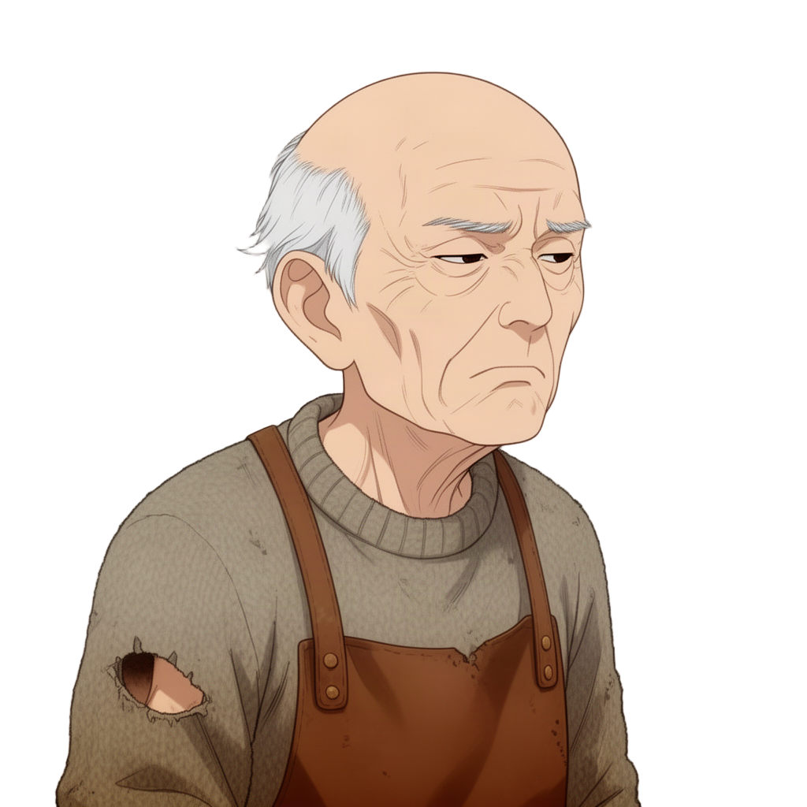
p jef_watchingflux-2 $0.024 art/refs/ch04/portraits/jef_watching.pngused: ch4×7prompt
model: fal-ai/flux-2/edit
purpose: sheet
refs: art/refs/ch04/portraits/jef_grumbling.png
Anime-style character portrait, clean line art, soft cel shading, gentle natural colours. Head and shoulders, three-quarter view, the face turned toward the viewer's right, plain light grey background, no text. The same character as the reference image: same face, same SMALL NARROW HEAVY-LIDDED dark eyes under LEVEL STRAIGHT heavy brows, same very old deeply wrinkled nearly bald head with a white tuft, same apron and jersey with a hole at the elbow. The eyes stay SMALL and NARROW: NOT large, NOT round, NOT wide open, no raised or sad eyebrows, nothing cartoonish. Restrained, realistic, hard to read. Expression: watching someone steadily, unreadable, eyes narrowed and level, mouth closed.
 p maelis_composedflux-2 $0.024 art/refs/ch04/portraits/maelis_composed.pngused: ch4×10
p maelis_composedflux-2 $0.024 art/refs/ch04/portraits/maelis_composed.pngused: ch4×10prompt
model: fal-ai/flux-2/edit
purpose: sheet
refs: art/refs/ch04/portraits/maelis_examining.png
Anime-style character portrait, clean line art, soft cel shading, gentle natural colours. Head and shoulders, three-quarter view, the face turned toward the viewer's right, plain light grey background, no text. The same character as the reference image: same face, same hair, same clothes, same lighting, same skin colour; only the expression changes. Both shoulders visible. The eyes are fully drawn with irises, pupils and highlights. A moderate, restrained expression, no grin, no laughing. The woman is in her seventies, lined face, grey hair pinned back. Expression: perfectly composed, level and calm, chin slightly raised, seeming taller and further away.
 p maelis_cropped_graveflux-2 $0.024 art/refs/ch07/portraits/maelis_cropped_grave.pngused: ch7×2
p maelis_cropped_graveflux-2 $0.024 art/refs/ch07/portraits/maelis_cropped_grave.pngused: ch7×2prompt
model: fal-ai/flux-2/edit
purpose: sheet
refs: art/refs/ch04/portraits/maelis_examining.png
Anime-style character portrait, clean line art, soft cel shading, gentle natural colours. Head and shoulders, three-quarter view, the face turned toward the viewer's right, plain light grey background, no text. The same character as the reference image: same face, same clothes, same skin colour, same lighting; only the expression changes. Both shoulders visible. Small normal realistic eyes, fully drawn with irises, pupils and highlights, no cartoon eyes, not large, not round, not shiny. A restrained realistic expression, moderate, no grin, no laughing, no tears streaming. The same woman in her seventies with a lined composed face and brown eyes in a patched dark charcoal coat, but her grey hair is now cut off very short, cropped close to the scalp, no bun, no long hair at all. Expression: grave and still, eyes level and steady, mouth closed, like a house with one room shut up.
 p maelis_cropped_impassiveflux-2 $0.024 art/refs/ch07/portraits/maelis_cropped_impassive.pngused: ch7×2
p maelis_cropped_impassiveflux-2 $0.024 art/refs/ch07/portraits/maelis_cropped_impassive.pngused: ch7×2prompt
model: fal-ai/flux-2/edit
purpose: sheet
refs: art/refs/ch07/portraits/maelis_cropped_grave.png
Anime-style character portrait, clean line art, soft cel shading, gentle natural colours. Head and shoulders, three-quarter view, the face turned toward the viewer's right, plain light grey background, no text. The same character as the reference image: exactly the same face with the same deep lines and wrinkles around the eyes, the same age in her seventies, same clothes, same skin colour; only the expression changes. Both shoulders visible. Small normal realistic eyes, fully drawn with irises, pupils and highlights, not large, not round, not shiny. A restrained realistic expression, moderate, no grin. The grey hair is cut off very short, cropped close to the scalp, patched dark coat. Expression: impassive, no softness in the face but no disgust either, eyes level and unmoving, mouth a calm straight line, mouth closed.
 p maelis_cropped_levelflux-2 $0.024 art/refs/ch07/portraits/maelis_cropped_level.pngused: ch7×3
p maelis_cropped_levelflux-2 $0.024 art/refs/ch07/portraits/maelis_cropped_level.pngused: ch7×3prompt
model: fal-ai/flux-2/edit
purpose: sheet
refs: art/refs/ch07/portraits/maelis_cropped_grave.png
Anime-style character portrait, clean line art, soft cel shading, gentle natural colours. Head and shoulders, three-quarter view, the face turned toward the viewer's right, plain light grey background, no text. The same character as the reference image: exactly the same face with the same deep lines and wrinkles around the eyes, the same age in her seventies, same clothes, same skin colour; only the expression changes. Both shoulders visible. Small normal realistic eyes, fully drawn with irises, pupils and highlights, not large, not round, not shiny. A restrained realistic expression, moderate, no grin. The grey hair is cut off very short, cropped close to the scalp, patched dark coat. Expression: evenly speaking, calm, eyes resting steadily on the listener, mouth closed or barely parted, face slightly lowered, voice unchanging.
p maelis_examiningflux-2-t2i $0.012 art/refs/ch04/portraits/maelis_examining.pngused: ch4×1prompt
model: fal-ai/flux-2
purpose: sheet
refs:
Anime-style character portrait, clean line art, soft cel shading, gentle natural colours. Head and shoulders, three-quarter view, the face turned toward the viewer's right, plain light grey background, no text. Both shoulders visible. The eyes are fully drawn with irises, pupils and highlights. A restrained expression, no grin. A tall, straight, grey-haired woman in her seventies with a lined, weathered, composed face, her grey hair pinned back, wearing a patched dark coat with full pockets. Expression: a steady, examining gaze, calm and level.
 p maelis_shutflux-2 $0.024 art/refs/ch04/portraits/maelis_shut.pngused: ch4×1
p maelis_shutflux-2 $0.024 art/refs/ch04/portraits/maelis_shut.pngused: ch4×1prompt
model: fal-ai/flux-2/edit
purpose: sheet
refs: art/refs/ch04/portraits/maelis_examining.png
Anime-style character portrait, clean line art, soft cel shading, gentle natural colours. Head and shoulders, three-quarter view, the face turned toward the viewer's right, plain light grey background, no text. The same character as the reference image: same face, same hair, same clothes, same lighting, same skin colour; only the expression changes. Both shoulders visible. The eyes are fully drawn with irises, pupils and highlights. A moderate, restrained expression, no grin, no laughing. The woman is in her seventies, lined face, grey hair pinned back. Expression: face shut like a house with the shutters put up, cold, blank and closed, eyes hard and level.
 p maelis_silentflux-2 $0.024 art/refs/ch04/portraits/maelis_silent.pngused: ch4×1
p maelis_silentflux-2 $0.024 art/refs/ch04/portraits/maelis_silent.pngused: ch4×1prompt
model: fal-ai/flux-2/edit
purpose: sheet
refs: art/refs/ch04/portraits/maelis_examining.png
Anime-style character portrait, clean line art, soft cel shading, gentle natural colours. Head and shoulders, three-quarter view, the face turned toward the viewer's right, plain light grey background, no text. The same character as the reference image: same face, same hair, same clothes, same lighting, same skin colour; only the expression changes. Both shoulders visible. The eyes are fully drawn with irises, pupils and highlights. A moderate, restrained expression, no grin, no laughing. The woman is in her seventies, lined face, grey hair pinned back. Expression: a long silence, her eyes lowered and fixed on nothing, mouth closed, grief held very still.
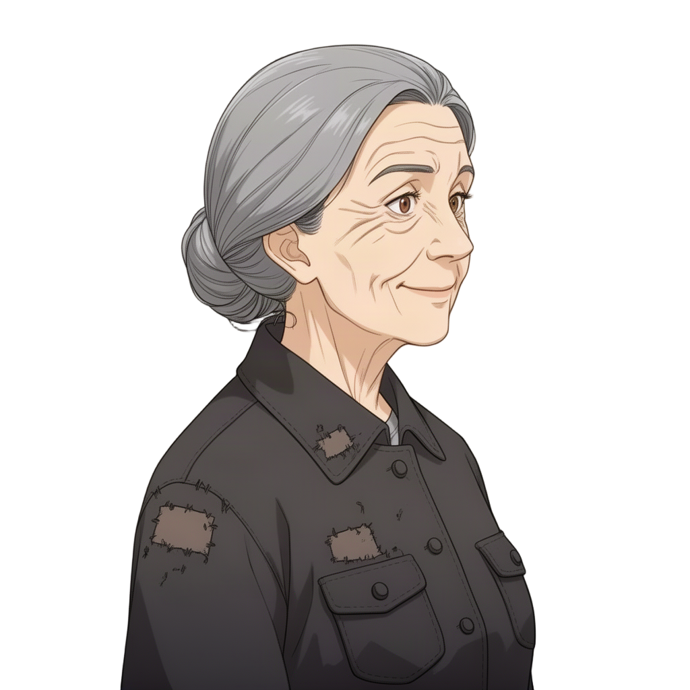
p maelis_smileflux-2 $0.024 art/refs/ch04/portraits/maelis_smile.pngused: ch4×1prompt
model: fal-ai/flux-2/edit
purpose: sheet
refs: art/refs/ch04/portraits/maelis_examining.png
Anime-style character portrait, clean line art, soft cel shading, gentle natural colours. Head and shoulders, three-quarter view, the face turned toward the viewer's right, plain light grey background, no text. The same character as the reference image: same face, same hair, same clothes, same lighting, same skin colour; only the expression changes. Both shoulders visible. The eyes are fully drawn with irises, pupils and highlights. A moderate, restrained expression, no grin, no laughing. The woman is in her seventies, lined face, grey hair pinned back, brown eyes. Expression: a small closed-mouth smile, only the corners of her lips lifting, eyes soft and warm, mouth closed, no teeth.
 p marsh_flatflux-2-t2i $0.012 art/refs/ch08/portraits/marsh_flat.pngused: unused
p marsh_flatflux-2-t2i $0.012 art/refs/ch08/portraits/marsh_flat.pngused: unusedprompt
model: fal-ai/flux-2
purpose: sheet
refs:
Anime-style character portrait, clean line art, soft cel shading, gentle natural colours. Head and shoulders, three-quarter view turned toward the viewer's right (the face and nose point to the right edge of the picture), plain light grey background, no text. Both shoulders visible. The eyes are small, normal, realistic, fully drawn with irises, pupils and highlights, not large, not round, not shiny. Restrained realistic face. A woman of about sixty-five, a physician and company chief, calm and exact, light skin, short practical grey hair, fine lines, plain dark raincoat with the collar turned up, no jewellery. Flat, unflinching, clinical expression, mouth level.
 p marsh_hesitantflux-2 $0.024 art/refs/ch08/portraits/marsh_hesitant.pngused: unused
p marsh_hesitantflux-2 $0.024 art/refs/ch08/portraits/marsh_hesitant.pngused: unusedprompt
model: fal-ai/flux-2/edit
purpose: sprite
refs: art/refs/ch08/portraits/marsh_flat.png
Anime-style character portrait, clean line art, soft cel shading, gentle natural colours. Head and shoulders, three-quarter view, the face turned toward the viewer's right, plain light grey background, no text. The same character as the reference image: same face, same hair, same clothes, same skin colour; only the expression changes. Both shoulders visible. Small normal realistic eyes, fully drawn with irises, pupils and highlights, not large, not round, not shiny. Restrained realistic expression, moderate, no grin, no laughing. Same older woman in the dark raincoat. Expression: for the first time hesitating, eyes dropped slightly, mouth tightened, a very small uncertainty, still composed.
 p marsh_humbleflux-2 $0.024 art/refs/ch08/portraits/marsh_humble.pngused: unused
p marsh_humbleflux-2 $0.024 art/refs/ch08/portraits/marsh_humble.pngused: unusedprompt
model: fal-ai/flux-2/edit
purpose: sprite
refs: art/refs/ch08/portraits/marsh_flat.png
Anime-style character portrait, clean line art, soft cel shading, gentle natural colours. Head and shoulders, three-quarter view, the face turned toward the viewer's right, plain light grey background, no text. The same character as the reference image: same face, same hair, same clothes, same skin colour; only the expression changes. Both shoulders visible. Small normal realistic eyes, fully drawn with irises, pupils and highlights, not large, not round, not shiny. Restrained realistic expression, moderate, no grin, no laughing. Same older woman in the dark raincoat. Expression: tired, quiet and sincere, eyes steady, brows soft, mouth relaxed, no smile.
 p nerys_earnestflux-2-t2i $0.012 art/refs/ch07/portraits/nerys_earnest.pngused: ch7×1
p nerys_earnestflux-2-t2i $0.012 art/refs/ch07/portraits/nerys_earnest.pngused: ch7×1prompt
model: fal-ai/flux-2
purpose: sheet
refs:
Anime-style character portrait, clean line art, soft cel shading, gentle natural colours. Head and shoulders, three-quarter view turned toward the viewer's right (the face and nose point to the right edge of the picture), plain light grey background, no text. Both shoulders visible. The eyes are small, normal, realistic, fully drawn with irises, pupils and highlights, not large, not round, not shiny. Restrained realistic face. A slender woman of about forty with long limbs, light pale skin slightly dry, black hair pinned up, large dark eyes, a high-collared plain dark dress with long sleeves buttoned to the wrists. Expression: earnest and fearful for her child, brows drawn together, mouth firm, eyes steady and anxious.
 p nerys_wornflux-2 $0.024 art/refs/ch07/portraits/nerys_worn.pngused: unused
p nerys_wornflux-2 $0.024 art/refs/ch07/portraits/nerys_worn.pngused: unusedprompt
model: fal-ai/flux-2/edit
purpose: sheet
refs: art/refs/ch07/portraits/nerys_earnest.png
Anime-style character portrait, clean line art, soft cel shading, gentle natural colours. Head and shoulders, three-quarter view, the face turned toward the viewer's right, plain light grey background, no text. The same character as the reference image: same face, same clothes, same skin colour, same lighting; only the expression changes. Both shoulders visible. Small normal realistic eyes, fully drawn with irises, pupils and highlights, no cartoon eyes, not large, not round, not shiny. A restrained realistic expression, moderate, no grin, no laughing, no tears streaming. Same black pinned hair, large dark eyes, dark high-collared dress. Expression: tired and tender, eyes soft and lowered a little, mouth gently closed, a worn kindness.
 p pell_earnestflux-2 $0.024 art/refs/ch08/portraits/pell_earnest.pngused: unused
p pell_earnestflux-2 $0.024 art/refs/ch08/portraits/pell_earnest.pngused: unusedprompt
model: fal-ai/flux-2/edit
purpose: sprite
refs: art/refs/ch08/portraits/pell_nervous.png
Anime-style character portrait, clean line art, soft cel shading, gentle natural colours. Head and shoulders, three-quarter view, the face turned toward the viewer's right, plain light grey background, no text. The same character as the reference image: same face, same hair, same clothes, same skin colour; only the expression changes. Both shoulders visible. Small normal realistic eyes, fully drawn with irises, pupils and highlights, not large, not round, not shiny. Restrained realistic expression, moderate, no grin, no laughing. Same young man in the pale-grey jacket and tie. Expression: earnest and subdued, speaking low, eyes lowered a little, mouth slightly parted.
 p pell_nervousflux-2-t2i $0.012 art/refs/ch08/portraits/pell_nervous.pngused: unused
p pell_nervousflux-2-t2i $0.012 art/refs/ch08/portraits/pell_nervous.pngused: unusedprompt
model: fal-ai/flux-2
purpose: sheet
refs:
Anime-style character portrait, clean line art, soft cel shading, gentle natural colours. Head and shoulders, three-quarter view turned toward the viewer's right (the face and nose point to the right edge of the picture), plain light grey background, no text. Both shoulders visible. The eyes are small, normal, realistic, fully drawn with irises, pupils and highlights, not large, not round, not shiny. Restrained realistic face. A thin nervous young man of about twenty-five, a filing clerk, pale light skin, neat short dark brown hair, narrow face, plain buttoned pale-grey shirt with a dull tie under a thin jacket. Nervous: eyes slightly wide, lips pressed, brows drawn up a little.
 p raske_movedflux-2 $0.024 art/refs/ch09/portraits/raske_moved.pngused: unused
p raske_movedflux-2 $0.024 art/refs/ch09/portraits/raske_moved.pngused: unusedprompt
model: fal-ai/flux-2/edit
purpose: sheet
refs: art/refs/ch09/portraits/raske_stern.png
Same character, same hair, same spectacles, same clothes, same art style, same pose and three-quarter view facing the viewer's right, plain light grey background. Only the expression changes. Restrained realistic face. The eyes keep their brown colour, small and fully drawn with irises, pupils and highlights. Expression: moved, eyes brown and glistening, brows slightly drawn together, lips pressed tight holding back feeling, no tears running, no smile.
 p raske_shockedflux-2 $0.024 art/refs/ch09/portraits/raske_shocked.pngused: unused
p raske_shockedflux-2 $0.024 art/refs/ch09/portraits/raske_shocked.pngused: unusedprompt
model: fal-ai/flux-2/edit
purpose: sheet
refs: art/refs/ch09/portraits/raske_stern.png
Same character, same hair, same spectacles, same clothes, same art style, same pose and three-quarter view facing the viewer's right, plain light grey background. Only the expression changes. Restrained realistic face. The eyes keep their brown colour, small and fully drawn with irises, pupils and highlights. Expression: startled and frozen, eyebrows raised slightly, eyes only a little wider than normal, lips just parted, no exaggeration.
 p raske_steadyflux-2 $0.024 art/refs/ch09/portraits/raske_steady.pngused: unused
p raske_steadyflux-2 $0.024 art/refs/ch09/portraits/raske_steady.pngused: unusedprompt
model: fal-ai/flux-2/edit
purpose: sheet
refs: art/refs/ch09/portraits/raske_stern.png
Same character, same hair, same spectacles, same clothes, same art style, same pose and three-quarter view facing the viewer's right, plain light grey background. Only the expression changes. Restrained realistic face, eyes small and fully drawn with irises, pupils and highlights. Expression: steady and composed, calm direct gaze, a faint softening at the mouth, no smile.
 p raske_sternflux-2-t2i $0.012 art/refs/ch09/portraits/raske_stern.pngused: unused
p raske_sternflux-2-t2i $0.012 art/refs/ch09/portraits/raske_stern.pngused: unusedprompt
model: fal-ai/flux-2
purpose: sheet
refs:
Anime-style character portrait, clean line art, soft cel shading, gentle natural colours. Head and shoulders, three-quarter view turned toward the viewer's right (the face and nose point to the right edge of the picture), plain light grey background, no text. Both shoulders visible. The eyes are small, normal, realistic, fully drawn with irises, pupils and highlights, not large, not round, not shiny. Restrained realistic face. A small woman of sixty, a chief ship designer, slight and straight-backed, short grey hair cut plainly, light skin with fine lines, thin steel-rimmed spectacles, sharp tired intelligent eyes. Plain dark work jacket over a white shirt with ink-stained cuffs. Stern, mouth set, brows level.
 p rook50_calmflux-2 $0.024 art/refs/ch07/portraits/rook50_calm.pngused: unused
p rook50_calmflux-2 $0.024 art/refs/ch07/portraits/rook50_calm.pngused: unusedprompt
model: fal-ai/flux-2/edit
purpose: sheet
refs: art/refs/ch04/portraits/anselm_calm.png
Anime-style character portrait, clean line art, soft cel shading, gentle natural colours. Head and shoulders, three-quarter view, the face turned toward the viewer's right, plain light grey background, no text. The same character as the reference image: same face, same hair, same clothes, same skin colour, same lighting; only the expression changes. Both shoulders visible. Small normal realistic eyes, fully drawn with irises, pupils and highlights, no cartoon eyes, not large, not round, not shiny. A restrained realistic expression, moderate, no grin, no laughing, no tears streaming. The same man twenty-two years younger, about fifty: a broad, square, quiet man with short dark hair going grey at the temples (not white), heavy courteous face with fewer lines, grey-blue eyes, wearing a high dark collar that covers his neck completely, no scars visible. Expression: calm and courteous, patient, a face that listens.
 p rook50_coldflux-2 $0.024 art/refs/ch07/portraits/rook50_cold.pngused: unused
p rook50_coldflux-2 $0.024 art/refs/ch07/portraits/rook50_cold.pngused: unusedprompt
model: fal-ai/flux-2/edit
purpose: sheet
refs: art/refs/ch07/portraits/rook50_calm.png
Anime-style character portrait, clean line art, soft cel shading, gentle natural colours. Head and shoulders, three-quarter view, the face turned toward the viewer's right, plain light grey background, no text. The same character as the reference image: same face, same clothes, same skin colour, same lighting; only the expression changes. Both shoulders visible. Small normal realistic eyes, fully drawn with irises, pupils and highlights, no cartoon eyes, not large, not round, not shiny. A restrained realistic expression, moderate, no grin, no laughing, no tears streaming. Same man about fifty, short dark hair going grey at the temples, grey-blue eyes, high dark collar. Expression: quiet and still, eyes level and cooled, mouth a closed even line, a courteous face that has just decided something.
 p vey_coldflux-2 $0.024 art/refs/ch05/portraits/vey_cold.pngused: ch5×1
p vey_coldflux-2 $0.024 art/refs/ch05/portraits/vey_cold.pngused: ch5×1prompt
model: fal-ai/flux-2/edit
purpose: sheet
refs: art/refs/ch05/portraits/vey.png
Anime-style character portrait, clean line art, soft cel shading, gentle natural colours. Head and shoulders, three-quarter view, the face turned toward the viewer's right, plain light grey background, no text. The same character as the reference image: same face, same hair, same clothes, same skin colour; only the expression changes. Both shoulders visible. The eyes are fully drawn with irises, pupils and highlights, looking open. A restrained realistic expression, moderate, no grin, no laughing, no tears streaming. Expression: cold and composed, chin level, thin closed mouth, eyes steady and without warmth. She must look SEVENTY YEARS OLD: deep lines across the forehead, crow's feet, creased cheeks, loose skin at the jaw.
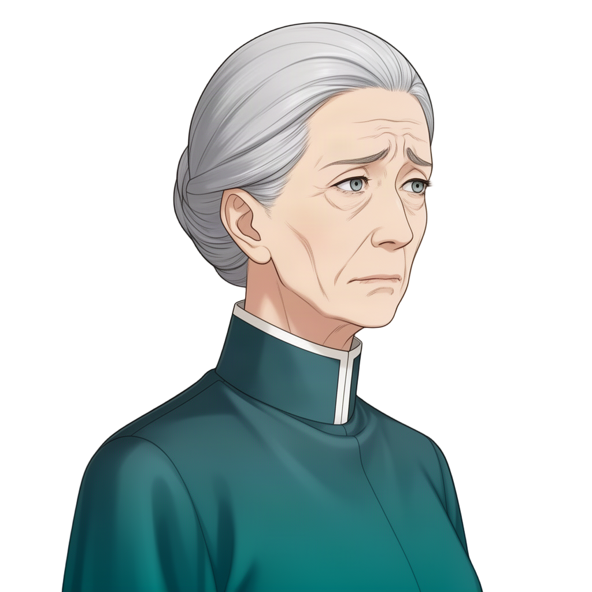
p vey_shakenflux-2 $0.024 art/refs/ch05/portraits/vey_shaken.pngused: ch5×3prompt
model: fal-ai/flux-2/edit
purpose: sheet
refs: art/refs/ch05/portraits/vey.png
Anime-style character portrait, clean line art, soft cel shading, gentle natural colours. Head and shoulders, three-quarter view, the face turned toward the viewer's right, plain light grey background, no text. The same character as the reference image: same face, same hair, same clothes, same skin colour; only the expression changes. Both shoulders visible. The eyes are fully drawn with irises, pupils and highlights, looking open. A restrained realistic expression, moderate, no grin, no laughing, no tears streaming. Expression: shaken and older, head slightly lowered and tilted, shoulders not straight, eyes tired and a little unfocused, lips pressed together.
 p vey_tightflux-2 $0.024 art/refs/ch05/portraits/vey_tight.pngused: ch5×2
p vey_tightflux-2 $0.024 art/refs/ch05/portraits/vey_tight.pngused: ch5×2prompt
model: fal-ai/flux-2/edit
purpose: sheet
refs: art/refs/ch05/portraits/vey.png
Anime-style character portrait, clean line art, soft cel shading, gentle natural colours. Head and shoulders, three-quarter view, the face turned toward the viewer's right, plain light grey background, no text. The same character as the reference image: same face, same hair, same clothes, same skin colour; only the expression changes. Both shoulders visible. The eyes are fully drawn with irises, pupils and highlights, looking open. A restrained realistic expression, moderate, no grin, no laughing, no tears streaming. Expression: tight-mouthed, lips pressed into a thin tense line, jaw set, a small tension at the brow. She must look SEVENTY YEARS OLD: deep lines across the forehead, crow's feet, creased cheeks, loose skin at the jaw.
 p yeva_dryflux-2-t2i $0.012 art/refs/ch08/portraits/yeva_dry.pngused: unused
p yeva_dryflux-2-t2i $0.012 art/refs/ch08/portraits/yeva_dry.pngused: unusedprompt
model: fal-ai/flux-2
purpose: sheet
refs:
Anime-style character portrait, clean line art, soft cel shading, gentle natural colours. Head and shoulders, three-quarter view turned toward the viewer's right (the face and nose point to the right edge of the picture), plain light grey background, no text. Both shoulders visible. The eyes are small, normal, realistic, fully drawn with irises, pupils and highlights, not large, not round, not shiny. Restrained realistic face. A tall lean woman of about sixty-five with a long worn face, weathered olive-tan skin, long grey hair tied back loosely, dry composed manner, plain worn grey-green sea-silk tunic. Dry, level, faintly sardonic expression, mouth flat.
 p yeva_sternflux-2 $0.024 art/refs/ch08/portraits/yeva_stern.pngused: unused
p yeva_sternflux-2 $0.024 art/refs/ch08/portraits/yeva_stern.pngused: unusedprompt
model: fal-ai/flux-2/edit
purpose: sprite
refs: art/refs/ch08/portraits/yeva_dry.png
Anime-style character portrait, clean line art, soft cel shading, gentle natural colours. Head and shoulders, three-quarter view, the face turned toward the viewer's right, plain light grey background, no text. The same character as the reference image: same face, same hair, same clothes, same skin colour; only the expression changes. Both shoulders visible. Small normal realistic eyes, fully drawn with irises, pupils and highlights, not large, not round, not shiny. Restrained realistic expression. Same tall lean woman, keep her deep lines and age (about sixty-five), same olive-tan skin, long grey hair. Expression: stern and exacting, brows slightly lowered, eyes direct, mouth firm.
 p yeva_tiredflux-2 $0.024 art/refs/ch08/portraits/yeva_tired.pngused: unused
p yeva_tiredflux-2 $0.024 art/refs/ch08/portraits/yeva_tired.pngused: unusedprompt
model: fal-ai/flux-2/edit
purpose: sprite
refs: art/refs/ch08/portraits/yeva_dry.png
Anime-style character portrait, clean line art, soft cel shading, gentle natural colours. Head and shoulders, three-quarter view, the face turned toward the viewer's right, plain light grey background, no text. The same character as the reference image: same face, same hair, same clothes, same skin colour; only the expression changes. Both shoulders visible. Small normal realistic eyes, fully drawn with irises, pupils and highlights, not large, not round, not shiny. Restrained realistic expression, moderate, no grin, no laughing. Same tall lean woman with long grey hair. Expression: very tired and underfed, hollow cheeks, eyes lowered and heavy, quiet obstinate patience.
Bother (4)
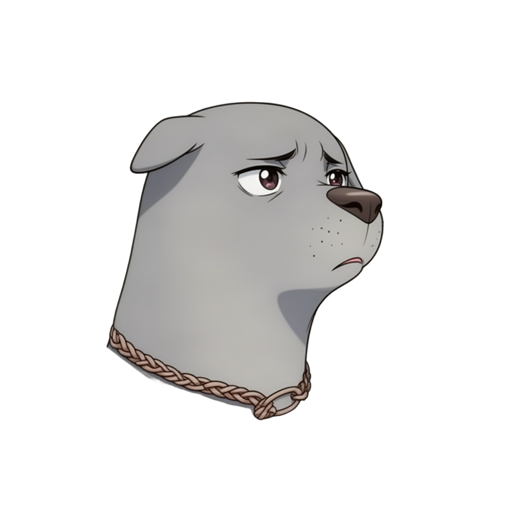
p bother_aggrievedflux-2 $0.024 art/refs/ch01/portraits/bother_aggrieved.pngused: ch1×1prompt
model: fal-ai/flux-2/edit
purpose: sheet
refs: art/refs/ch01/portraits/bother.png
Anime-style character portrait, clean line art, soft cel shading, gentle natural colours. Head and shoulders, three-quarter view turned toward the viewer's right, plain light grey background, no text. The same character as the reference image: same face, same hair, same clothes, same lighting; only the expression changes. Both shoulders visible. Expression: huffy and aggrieved, an air of personal grievance, nose slightly up.
 p bother_alertflux-2 $0.024 art/refs/ch01/portraits/bother_alert.pngused: ch2×1, ch5×1, ch6×1
p bother_alertflux-2 $0.024 art/refs/ch01/portraits/bother_alert.pngused: ch2×1, ch5×1, ch6×1prompt
model: fal-ai/flux-2/edit
purpose: sheet
refs: art/refs/ch01/portraits/bother_aggrieved.png
Anime-style character portrait, clean line art, soft cel shading, gentle natural colours. Head and shoulders, three-quarter view, the face and eyes clearly turned toward the viewer's right, plain light grey background, no text. The same character as the reference image: same face, same hair, same clothes, same lighting; only the expression changes. Both shoulders visible. Expression: alert, bright eyes, looking toward the right with interest. Keep the small folded ears that droop at the tips, as on a seal; the ears are NOT pointed.
 p bother_excitedflux-2 $0.024 art/refs/ch05/portraits/bother_excited.pngused: ch5×1
p bother_excitedflux-2 $0.024 art/refs/ch05/portraits/bother_excited.pngused: ch5×1prompt
model: fal-ai/flux-2/edit
purpose: sheet
refs: art/refs/ch01/portraits/bother.png
Anime-style character portrait, clean line art, soft cel shading, gentle natural colours. Head and shoulders, three-quarter view, the face turned toward the viewer's right, plain light grey background, no text. The same character as the reference image: same face, same hair, same clothes, same skin colour; only the expression changes. Both shoulders visible. The eyes are fully drawn with irises, pupils and highlights, looking open. A restrained realistic expression, moderate, no grin, no laughing, no tears streaming. Expression: excited, eyes bright, mouth slightly open, whiskers forward, head lifted. A tide hound with a sleek grey seal body and blunt square head, small folded drooping ears.
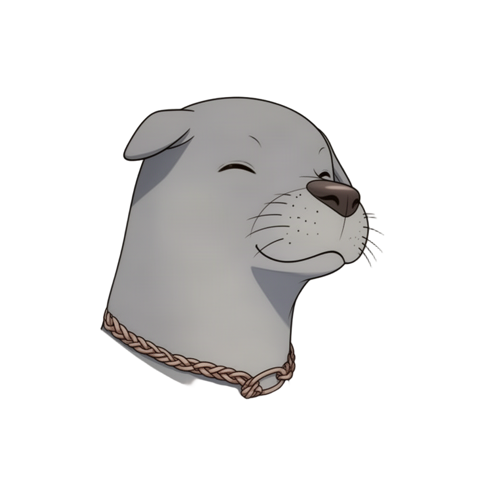
p bother_pleasedflux-2 $0.024 art/refs/ch01/portraits/bother.pngused: ch1×4, ch7×1prompt
model: fal-ai/flux-2/edit
purpose: sheet
refs: art/refs/ch01/bother.png
Anime-style character portrait, clean line art, soft cel shading, gentle natural colours. Head and shoulders only, the head and upper chest filling the frame, three-quarter view turned to face the viewer's right, plain light grey background, no text. The same character as the reference image: same face, same hair, same clothes. The tide hound: only the head, neck and collar of plaited cord, pleased with itself.
Brask (3)
 p brask_awedflux-2 $0.024 art/refs/ch03/portraits/brask_awed.pngused: ch3×1
p brask_awedflux-2 $0.024 art/refs/ch03/portraits/brask_awed.pngused: ch3×1prompt
model: fal-ai/flux-2/edit
purpose: sheet
refs: art/refs/ch03/portraits/brask.png
Anime-style character portrait, clean line art, soft cel shading, gentle natural colours. Head and shoulders, three-quarter view, the face turned toward the viewer's right, plain light grey background, no text. The same character as the reference image: same face, same hair, same clothes, same lighting, same skin colour; only the expression changes. Both shoulders visible. The eyes are fully drawn with irises, pupils and highlights. A restrained realistic expression, no grin, no laughing. Expression: awed and silent, eyes wide, mouth slightly open, staring at something immense.
 p brask_gruffflux-2 $0.024 art/refs/ch03/portraits/brask_gruff.pngused: ch3×3
p brask_gruffflux-2 $0.024 art/refs/ch03/portraits/brask_gruff.pngused: ch3×3prompt
model: fal-ai/flux-2/edit
purpose: sheet
refs: art/refs/ch03/portraits/brask.png
Anime-style character portrait, clean line art, soft cel shading, gentle natural colours. Head and shoulders, three-quarter view, the face turned toward the viewer's right, plain light grey background, no text. The same character as the reference image: same face, same hair, same clothes, same lighting, same skin colour; only the expression changes. Both shoulders visible. The eyes are fully drawn with irises, pupils and highlights. A restrained realistic expression, no grin, no laughing. Expression: gruff and sceptical, a slight scowl, looking someone over slowly.
 p brask_watchfulflux-2-t2i $0.012 art/refs/ch03/portraits/brask.pngused: ch3×3
p brask_watchfulflux-2-t2i $0.012 art/refs/ch03/portraits/brask.pngused: ch3×3prompt
model: fal-ai/flux-2
purpose: sheet
refs:
Anime-style character portrait, clean line art, soft cel shading, gentle natural colours. Head and shoulders, three-quarter view turned toward the viewer's right, plain light grey background, no text. Both shoulders visible. The eyes are fully drawn with irises, pupils and highlights. A huge, broad young man with a short red beard and short red hair, a wide strong face, watchful steady eyes, wearing a heavy coat of sealskin with the fur turned inside so the outside is smooth dark leather, a high collar. An ice-diver from the top of the world.
Davin (4)
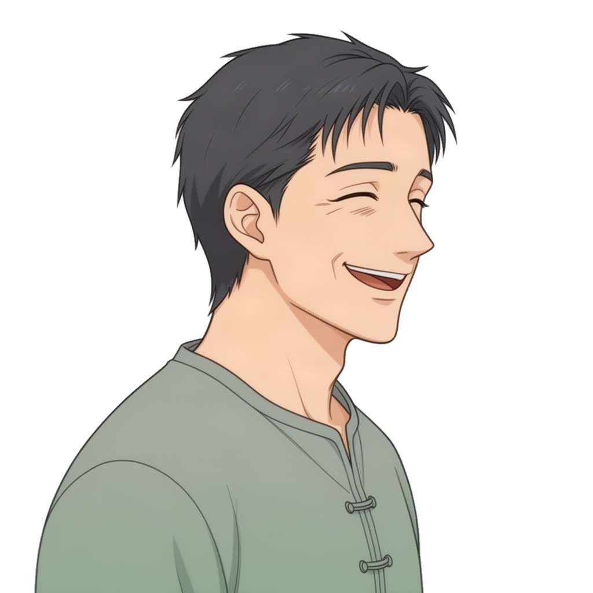
p davin_amusedflux-2 $0.024 art/refs/ch01/portraits/davin_amused.pngused: ch1×1prompt
model: fal-ai/flux-2/edit
purpose: sheet
refs: art/refs/ch01/portraits/davin.png
Anime-style character portrait, clean line art, soft cel shading, gentle natural colours. Head and shoulders, three-quarter view turned toward the viewer's right, plain light grey background, no text. The same character as the reference image: same face, same hair, same clothes, same lighting; only the expression changes. Both shoulders visible. Expression: amused, laughing softly, eyes crinkled.
 p davin_neutralflux-2 $0.024 art/refs/ch01/portraits/davin_neutral.pngused: ch2×1
p davin_neutralflux-2 $0.024 art/refs/ch01/portraits/davin_neutral.pngused: ch2×1prompt
model: fal-ai/flux-2/edit
purpose: sheet
refs: art/refs/ch01/portraits/davin.png
Anime-style character portrait, clean line art, soft cel shading, gentle natural colours. Head and shoulders, three-quarter view turned toward the viewer's right, plain light grey background, no text. The same character as the reference image: same face, same hair, same clothes, same lighting; only the expression changes. Both shoulders visible. Expression: calm, neutral, listening.
 p davin_patientflux-2 $0.024 art/refs/ch01/portraits/davin_patient.pngused: ch1×1, ch2×1
p davin_patientflux-2 $0.024 art/refs/ch01/portraits/davin_patient.pngused: ch1×1, ch2×1prompt
model: fal-ai/flux-2/edit
purpose: sheet
refs: art/refs/ch01/portraits/davin.png
Anime-style character portrait, clean line art, soft cel shading, gentle natural colours. Head and shoulders, three-quarter view turned toward the viewer's right, plain light grey background, no text. The same character as the reference image: same face, same hair, same clothes, same lighting; only the expression changes. Both shoulders visible. Expression: patient and kind, head slightly tilted, showing someone how.
 p davin_smileflux-2 $0.024 art/refs/ch01/portraits/davin.pngused: ch2×1
p davin_smileflux-2 $0.024 art/refs/ch01/portraits/davin.pngused: ch2×1prompt
model: fal-ai/flux-2/edit
purpose: sheet
refs: art/refs/ch01/davin.png
Anime-style character portrait, clean line art, soft cel shading, gentle natural colours. Head and shoulders only, the head and upper chest filling the frame, three-quarter view turned to face the viewer's right, plain light grey background, no text. The same character as the reference image: same face, same hair, same clothes. A quiet man with a slow patient smile.
The old man from Fallow (3)
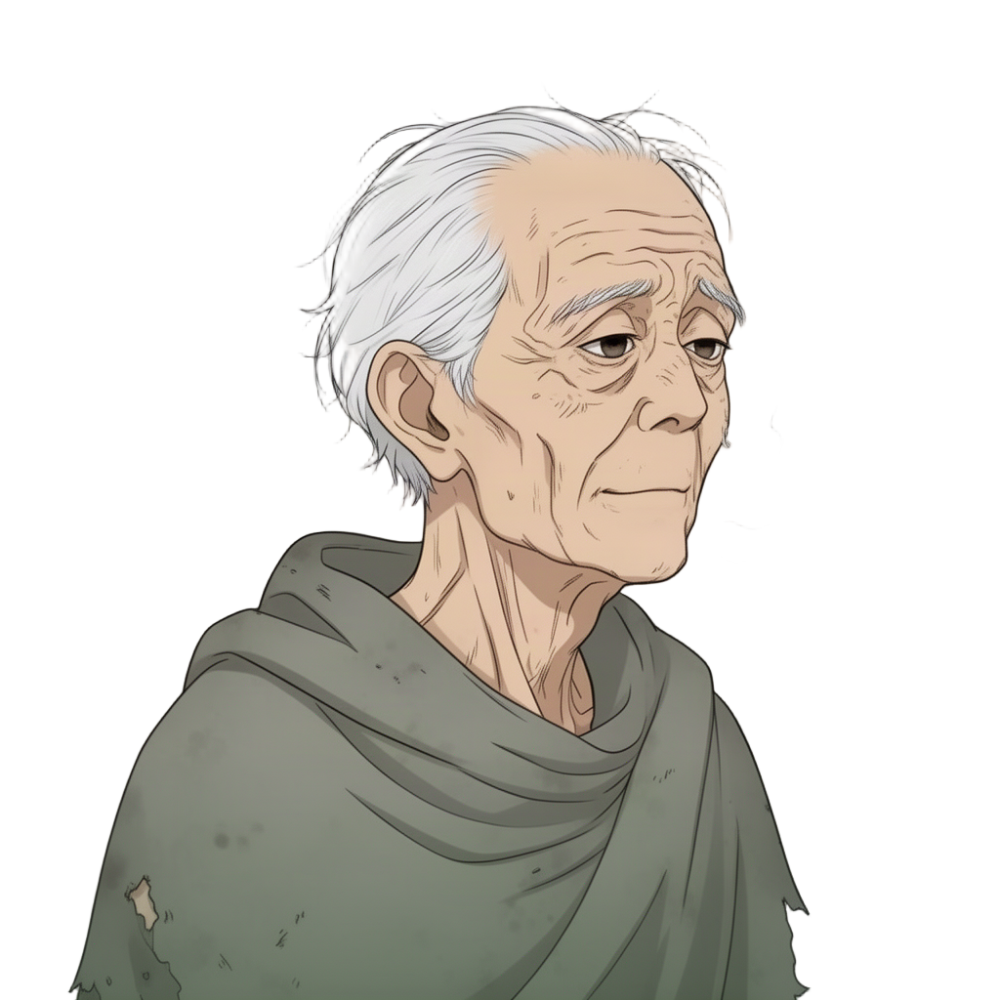
p fallow_man_calmflux-2 $0.024 art/refs/ch03/portraits/fallow_man_calm.pngused: unusedprompt
model: fal-ai/flux-2/edit
purpose: sheet
refs: art/refs/ch03/portraits/fallow_man.png
Anime-style character portrait, clean line art, soft cel shading, gentle natural colours. Head and shoulders, three-quarter view, the face turned toward the viewer's right, plain light grey background, no text. The same character as the reference image: the SAME VERY OLD, DEEPLY WRINKLED face with hollow cheeks, thin white hair, same worn grey-green cloth; only the expression changes. Both shoulders visible. The eyes are fully drawn with irises, pupils and highlights. Expression: gentle and peaceful, a faint content look, eyes soft and tired.
p fallow_man_frailflux-2-t2i $0.012 art/refs/ch03/portraits/fallow_man.pngused: unusedprompt
model: fal-ai/flux-2
purpose: sheet
refs:
Anime-style character portrait, clean line art, soft cel shading, gentle natural colours. Head and shoulders, three-quarter view turned toward the viewer's right, plain light grey background, no text. Both shoulders visible. The eyes are fully drawn with irises, pupils and highlights. A very old frail man with thin white hair and hollow cheeks, dark eyes, wearing a worn grey-green cloth wrapped round his shoulders, his mouth slightly open as if each breath has to be lifted, gentle and weary.
 p fallow_man_labouredflux-2 $0.024 art/refs/ch03/portraits/fallow_man_laboured.pngused: unused
p fallow_man_labouredflux-2 $0.024 art/refs/ch03/portraits/fallow_man_laboured.pngused: unusedprompt
model: fal-ai/flux-2/edit
purpose: sheet
refs: art/refs/ch03/portraits/fallow_man.png
Anime-style character portrait, clean line art, soft cel shading, gentle natural colours. Head and shoulders, three-quarter view, the face turned toward the viewer's right, plain light grey background, no text. The same character as the reference image: the SAME VERY OLD, DEEPLY WRINKLED face with hollow cheeks, thin white hair, same worn grey-green cloth; only the expression changes. Both shoulders visible. The eyes are fully drawn with irises, pupils and highlights. Expression: laboured, mouth open with effort, drawing a heavy breath.
The woman from Fallow (3)
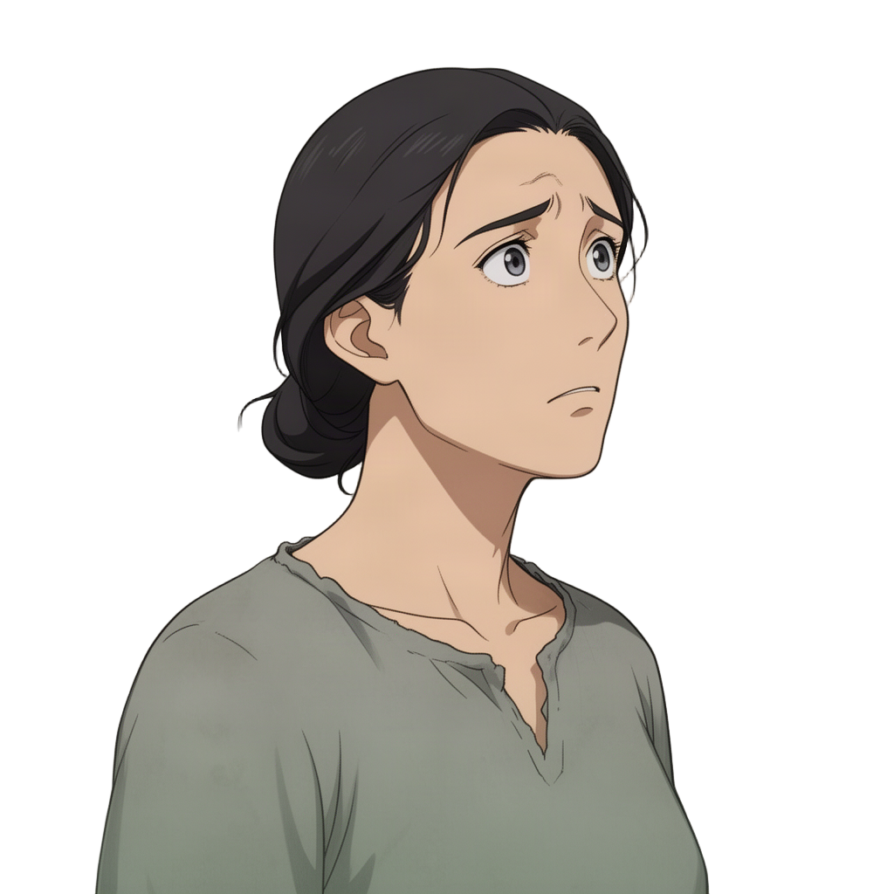
p fallow_woman_hopefulflux-2 $0.024 art/refs/ch03/portraits/fallow_woman_hopeful.pngused: ch3×1prompt
model: fal-ai/flux-2/edit
purpose: sheet
refs: art/refs/ch03/portraits/fallow_woman.png
Anime-style character portrait, clean line art, soft cel shading, gentle natural colours. Head and shoulders, three-quarter view, the face turned toward the viewer's right, plain light grey background, no text. The same character as the reference image: same face, same hair, same clothes, same lighting, same skin colour; only the expression changes. Both shoulders visible. The eyes are fully drawn with irises, pupils and highlights. A restrained realistic expression, no grin, no laughing. Expression: anxious hope, eyes lifted and pleading, lips pressed together.
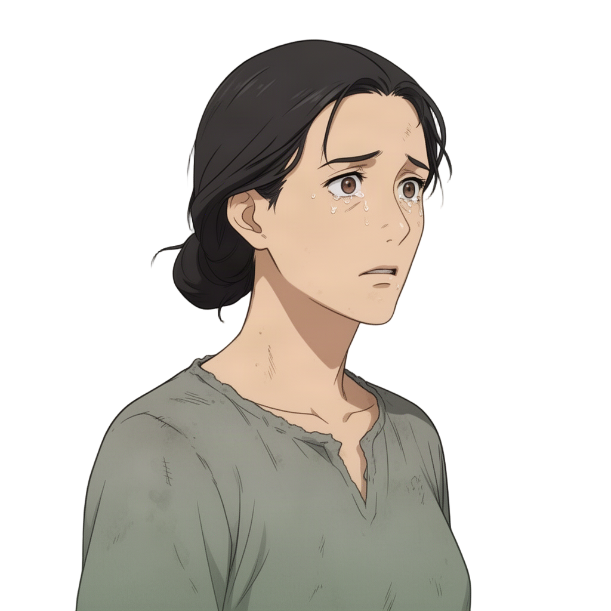
p fallow_woman_relievedflux-2 $0.024 art/refs/ch03/portraits/fallow_woman_relieved.pngused: ch3×1prompt
model: fal-ai/flux-2/edit
purpose: sheet
refs: art/refs/ch03/portraits/fallow_woman.png
Anime-style character portrait, clean line art, soft cel shading, gentle natural colours. Head and shoulders, three-quarter view, the face turned toward the viewer's right, plain light grey background, no text. The same character as the reference image: same face, same hair, same clothes, same lighting, same skin colour; only the expression changes. Both shoulders visible. The eyes are fully drawn with irises, pupils and highlights. A restrained realistic expression, no grin, no laughing. Expression: quiet relief, shoulders eased, eyes wet and grateful.
 p fallow_woman_wearyflux-2-t2i $0.012 art/refs/ch03/portraits/fallow_woman.pngused: ch3×1
p fallow_woman_wearyflux-2-t2i $0.012 art/refs/ch03/portraits/fallow_woman.pngused: ch3×1prompt
model: fal-ai/flux-2
purpose: sheet
refs:
Anime-style character portrait, clean line art, soft cel shading, gentle natural colours. Head and shoulders, three-quarter view turned toward the viewer's right, plain light grey background, no text. Both shoulders visible. The eyes are fully drawn with irises, pupils and highlights. A woman of about thirty with a tired, flat, capable face, long-limbed and dark-eyed, dark hair tied back plainly, light weathered skin, wearing a worn plain tunic of grey-green cloth that gleams like the inside of a shell. Weary but steady.
Hesper (7)
 p hesper_angryflux-2 $0.024 art/refs/ch02/portraits/hesper_angry.pngused: ch2×1
p hesper_angryflux-2 $0.024 art/refs/ch02/portraits/hesper_angry.pngused: ch2×1prompt
model: fal-ai/flux-2/edit
purpose: sheet
refs: art/refs/ch02/portraits/hesper.png
Anime-style character portrait, clean line art, soft cel shading, gentle natural colours. Head and shoulders, three-quarter view, the face turned toward the viewer's right, plain light grey background, no text. The same character as the reference image: same face, same hair, same clothes, same lighting; only the expression changes. Both shoulders visible. The eyes are fully drawn with irises, pupils and highlights. Expression: angry, her voice shaking, jaw tight, eyes bright and hard, restrained fury.
 p hesper_coldflux-2 $0.024 art/refs/ch11/portraits/hesper_cold.pngused: unused
p hesper_coldflux-2 $0.024 art/refs/ch11/portraits/hesper_cold.pngused: unusedprompt
model: fal-ai/flux-2/edit
purpose: sprite
refs: art/refs/ch02/portraits/hesper.png
Anime-style character portrait, clean line art, soft cel shading, gentle natural colours. Head and shoulders, three-quarter view, the face turned toward the viewer's right (nose pointing to the right edge of the picture), plain light grey background, no text. Both shoulders visible. Small normal realistic eyes, fully drawn with irises, pupils and highlights, not large, not round, not shiny. A restrained realistic expression, moderate, no grin, no tears streaming. The same character as the reference image: same face, same hair, same clothes, same skin colour; only the expression changes. Lean hard woman of about forty, dark hair pulled back, a little thinner in the face. Expression: cold and quiet, eyes level and steady, mouth closed and still, speaking softly, controlled.
 p hesper_shutflux-2 $0.024 art/refs/ch02/portraits/hesper_shut.pngused: ch2×1
p hesper_shutflux-2 $0.024 art/refs/ch02/portraits/hesper_shut.pngused: ch2×1prompt
model: fal-ai/flux-2/edit
purpose: sheet
refs: art/refs/ch02/portraits/hesper.png
Anime-style character portrait, clean line art, soft cel shading, gentle natural colours. Head and shoulders, three-quarter view, the face turned toward the viewer's right, plain light grey background, no text. The same character as the reference image: same face, same hair, same clothes, same lighting; only the expression changes. Both shoulders visible. The eyes are fully drawn with irises, pupils and highlights. Expression: a face like a shut door, completely impassive, holding enormous grief behind it, eyes steady and unreadable.
 p hesper_sternflux-2-t2i $0.012 art/refs/ch02/portraits/hesper.pngused: ch2×4
p hesper_sternflux-2-t2i $0.012 art/refs/ch02/portraits/hesper.pngused: ch2×4prompt
model: fal-ai/flux-2
purpose: sheet
refs:
Anime-style character portrait, clean line art, soft cel shading, gentle natural colours. Head and shoulders, three-quarter view turned toward the viewer's right, plain light grey background, no text. Both shoulders visible. A lean, hard woman of about forty with a strong, tired face, dark hair pulled back severely, weathered skin, calm and stern. She wears a plain tunic of fine grey-green cloth that gleams like the inside of a shell. She is a hold's Tidecaller, a person people make room for.
 p hesper_strickenflux-2 $0.024 art/refs/ch11/portraits/hesper_stricken.pngused: unused
p hesper_strickenflux-2 $0.024 art/refs/ch11/portraits/hesper_stricken.pngused: unusedprompt
model: fal-ai/flux-2/edit
purpose: sprite
refs: art/refs/ch02/portraits/hesper.png
Anime-style character portrait, clean line art, soft cel shading, gentle natural colours. Head and shoulders, three-quarter view, the face turned toward the viewer's right (nose pointing to the right edge of the picture), plain light grey background, no text. Both shoulders visible. Small normal realistic eyes, fully drawn with irises, pupils and highlights, not large, not round, not shiny. A restrained realistic expression, moderate, no grin, no tears streaming. The same character as the reference image: same face, same hair, same clothes, same skin colour; only the expression changes. Lean hard woman of about forty, dark hair pulled back, a little thinner in the face. Expression: stricken, stopped mid-thought, eyes wide open fixed on something far away, lips slightly parted, a flinch just beginning to set.
 p hesper_teacherflux-2 $0.024 art/refs/ch02/portraits/hesper_teacher.pngused: ch2×1
p hesper_teacherflux-2 $0.024 art/refs/ch02/portraits/hesper_teacher.pngused: ch2×1prompt
model: fal-ai/flux-2/edit
purpose: sheet
refs: art/refs/ch02/portraits/hesper.png
Anime-style character portrait, clean line art, soft cel shading, gentle natural colours. Head and shoulders, three-quarter view, the face turned toward the viewer's right, plain light grey background, no text. The same character as the reference image: same face, same hair, same clothes, same lighting; only the expression changes. Both shoulders visible. The eyes are fully drawn with irises, pupils and highlights. Expression: calm, level and instructing, the patient stern face of a teacher explaining something difficult.
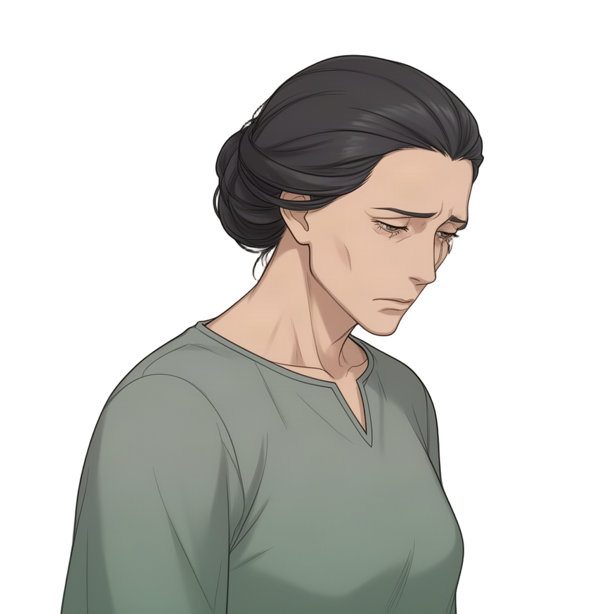
p hesper_tiredflux-2 $0.024 art/refs/ch02/portraits/hesper_tired.pngused: ch2×3prompt
model: fal-ai/flux-2/edit
purpose: sheet
refs: art/refs/ch02/portraits/hesper.png
Anime-style character portrait, clean line art, soft cel shading, gentle natural colours. Head and shoulders, three-quarter view, the face turned toward the viewer's right, plain light grey background, no text. The same character as the reference image: same face, same hair, same clothes, same lighting; only the expression changes. Both shoulders visible. The eyes are fully drawn with irises, pupils and highlights. Expression: exhausted, eyes lowered, shoulders heavy, drained.
Ione (6)
 p ione_calmflux-2 $0.024 art/refs/ch01/portraits/ione.pngused: ch1×1
p ione_calmflux-2 $0.024 art/refs/ch01/portraits/ione.pngused: ch1×1prompt
model: fal-ai/flux-2/edit
purpose: sheet
refs: /private/tmp/claude-501/-Users-ursschweigert-Documents-GitHub-OvaraVN/cc48d835-f556-4c15-90fe-4f84aaa68c2a/scratchpad/ione_head.png
Anime-style character portrait, clean line art, soft cel shading, gentle natural colours. Head and shoulders only, the head and upper chest filling the frame, three-quarter view turned to face the viewer's right, plain light grey background, no text. The same character as the reference image: same face, same hair, same clothes. A broad calm woman, healer, calm and cautious expression.
 p ione_cautiousflux-2 $0.024 art/refs/ch01/portraits/ione_cautious.pngused: ch1×1
p ione_cautiousflux-2 $0.024 art/refs/ch01/portraits/ione_cautious.pngused: ch1×1prompt
model: fal-ai/flux-2/edit
purpose: sheet
refs: /private/tmp/claude-501/-Users-ursschweigert-Documents-GitHub-OvaraVN/cc48d835-f556-4c15-90fe-4f84aaa68c2a/scratchpad/ione_head.png
Anime-style character portrait, clean line art, soft cel shading, gentle natural colours. Head and shoulders, three-quarter view turned toward the viewer's right, plain light grey background, no text. The same character as the reference image: same face, same hair, same clothes, same lighting; only the expression changes. Both shoulders visible. Expression: cautious, concerned, a slight frown.
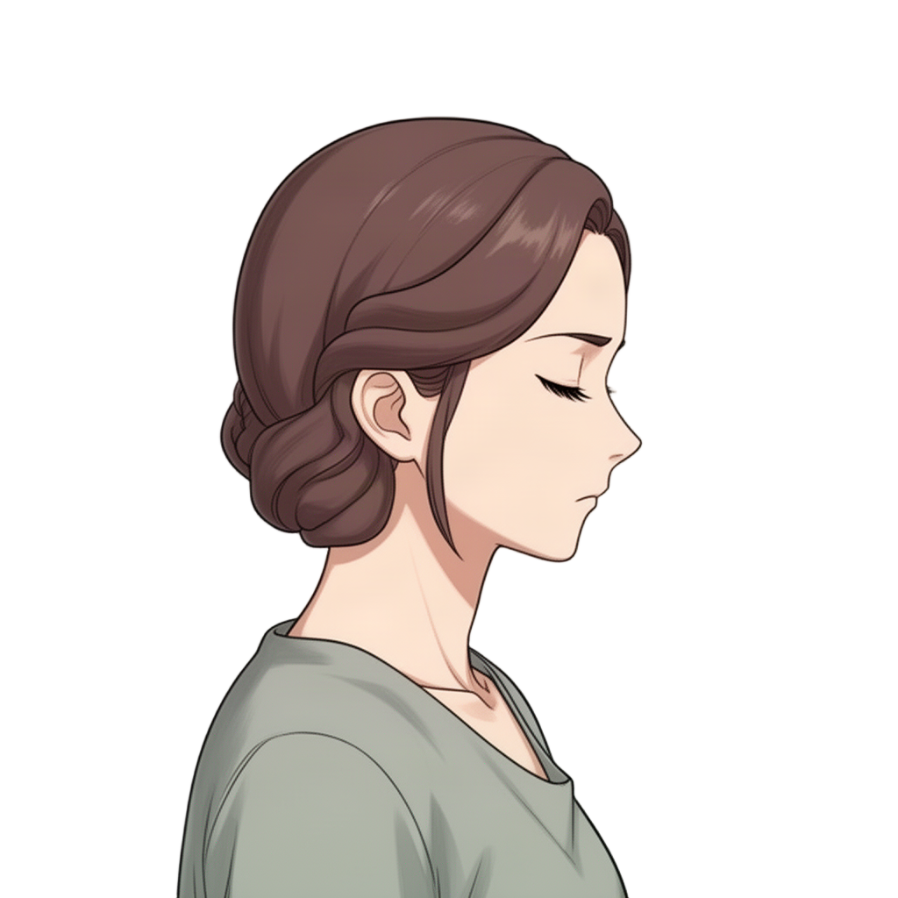
p ione_concentratingflux-2 $0.024 art/refs/ch01/portraits/ione_concentrating.pngused: unusedprompt
model: fal-ai/flux-2/edit
purpose: sheet
refs: /private/tmp/claude-501/-Users-ursschweigert-Documents-GitHub-OvaraVN/cc48d835-f556-4c15-90fe-4f84aaa68c2a/scratchpad/ione_head.png
Anime-style character portrait, clean line art, soft cel shading, gentle natural colours. Head and shoulders, three-quarter view turned toward the viewer's right, plain light grey background, no text. The same character as the reference image: same face, same hair, same clothes, same lighting; only the expression changes. Both shoulders visible. Expression: eyes closed, deeply concentrating, very still.
 p ione_gentleflux-2 $0.024 art/refs/ch01/portraits/ione_gentle.pngused: ch1×1, ch2×1
p ione_gentleflux-2 $0.024 art/refs/ch01/portraits/ione_gentle.pngused: ch1×1, ch2×1prompt
model: fal-ai/flux-2/edit
purpose: sheet
refs: /private/tmp/claude-501/-Users-ursschweigert-Documents-GitHub-OvaraVN/cc48d835-f556-4c15-90fe-4f84aaa68c2a/scratchpad/ione_head.png
Anime-style character portrait, clean line art, soft cel shading, gentle natural colours. Head and shoulders, three-quarter view turned toward the viewer's right, plain light grey background, no text. The same character as the reference image: same face, same hair, same clothes, same lighting; only the expression changes. Both shoulders visible. Expression: a gentle, kind, small smile.
 p ione_graveflux-2 $0.024 art/refs/ch01/portraits/ione_grave.pngused: ch1×2
p ione_graveflux-2 $0.024 art/refs/ch01/portraits/ione_grave.pngused: ch1×2prompt
model: fal-ai/flux-2/edit
purpose: sheet
refs: /private/tmp/claude-501/-Users-ursschweigert-Documents-GitHub-OvaraVN/cc48d835-f556-4c15-90fe-4f84aaa68c2a/scratchpad/ione_head.png
Anime-style character portrait, clean line art, soft cel shading, gentle natural colours. Head and shoulders, three-quarter view turned toward the viewer's right, plain light grey background, no text. The same character as the reference image: same face, same hair, same clothes, same lighting; only the expression changes. Both shoulders visible. Expression: grave, speaking plainly with bad news, eyes steady.
 p ione_painflux-2 $0.024 art/refs/ch02/portraits/ione_pain.pngused: unused
p ione_painflux-2 $0.024 art/refs/ch02/portraits/ione_pain.pngused: unusedprompt
model: fal-ai/flux-2/edit
purpose: sheet
refs: art/refs/ch01/portraits/ione.png
Anime-style character portrait, clean line art, soft cel shading, gentle natural colours. Head and shoulders, three-quarter view, the face turned toward the viewer's right, plain light grey background, no text. The same character as the reference image: same face, same hair, same clothes, same lighting; only the expression changes. Both shoulders visible. The eyes are fully drawn with irises, pupils and highlights. Expression: in pain but working on, teeth set, brow tight, steady eyes.
The diver officer (3)
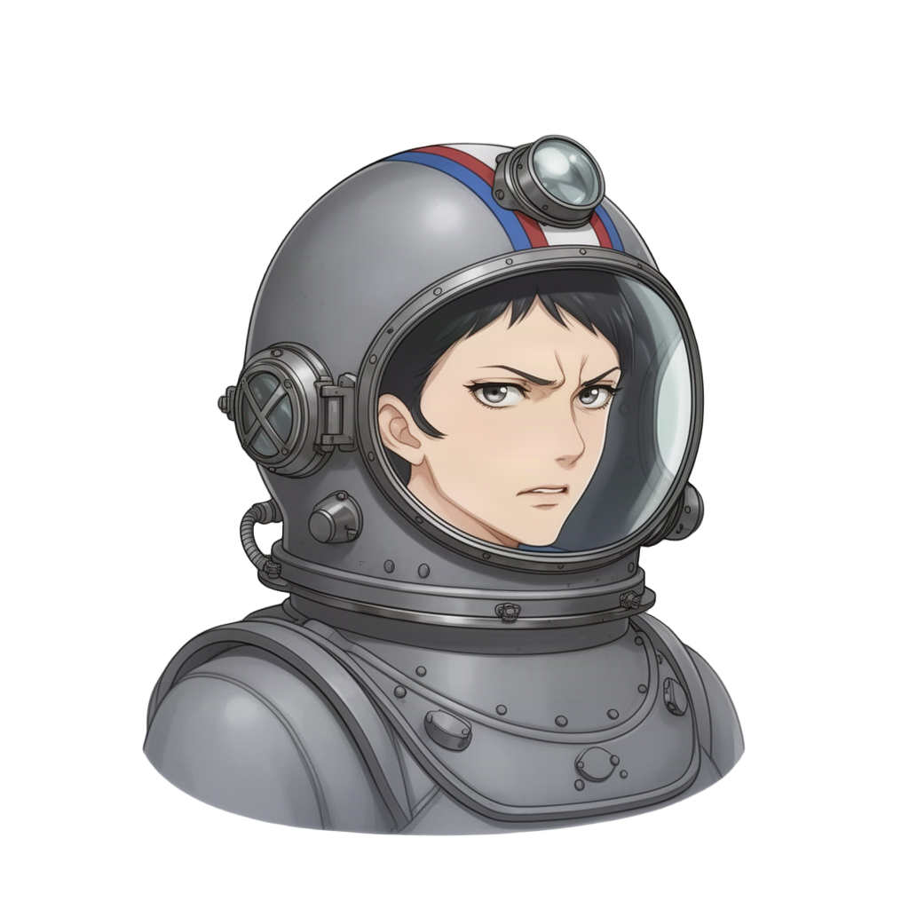
p officer_grimflux-2 $0.024 art/refs/ch03/portraits/officer_grim.pngused: unusedprompt
model: fal-ai/flux-2/edit
purpose: sheet
refs: art/refs/ch03/portraits/officer.png
Anime-style character portrait, clean line art, soft cel shading, gentle natural colours. Head and shoulders, three-quarter view, the face turned toward the viewer's right, plain light grey background, no text. The same character as the reference image: same face, same hair, same clothes, same lighting, same skin colour; only the expression changes. Both shoulders visible. The eyes are fully drawn with irises, pupils and highlights. A restrained realistic expression, no grin, no laughing. Expression: grim and resolved, jaw set, eyes hard.
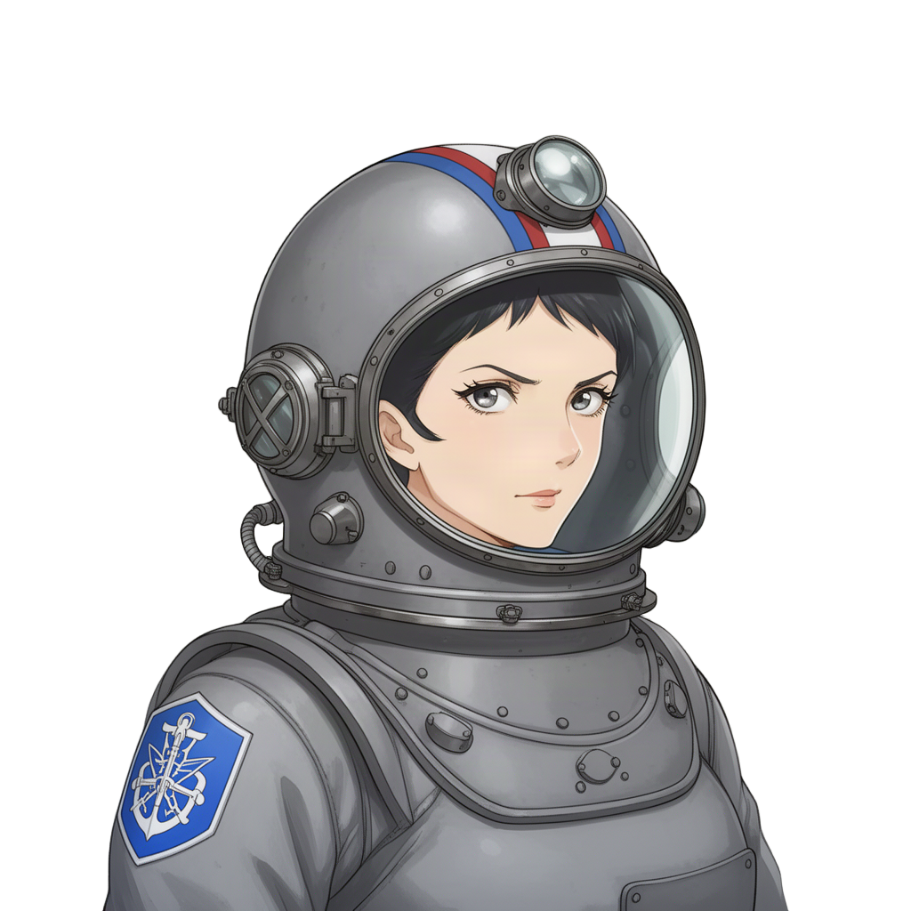
p officer_hardflux-2-t2i $0.012 art/refs/ch03/portraits/officer.pngused: ch3×1prompt
model: fal-ai/flux-2
purpose: sheet
refs:
Anime-style character portrait, clean line art, soft cel shading, gentle natural colours. Head and shoulders, three-quarter view turned toward the viewer's right, plain light grey background, no text. Both shoulders visible. The eyes are fully drawn with irises, pupils and highlights. A woman officer of about forty inside a grey armoured diving suit and a metal diving helmet with a round glass faceplate; her face is clearly visible through the glass: hard-eyed, composed, dark hair cropped. A coloured stripe across the top of the helmet, a small lamp on the helmet's brow, a blue shield-shaped crest on the shoulder of the suit.
 p officer_shockedflux-2 $0.024 art/refs/ch03/portraits/officer_shocked.pngused: ch3×1
p officer_shockedflux-2 $0.024 art/refs/ch03/portraits/officer_shocked.pngused: ch3×1prompt
model: fal-ai/flux-2/edit
purpose: sheet
refs: art/refs/ch03/portraits/officer.png
Anime-style character portrait, clean line art, soft cel shading, gentle natural colours. Head and shoulders, three-quarter view, the face turned toward the viewer's right, plain light grey background, no text. The same character as the reference image: same face, same hair, same clothes, same lighting, same skin colour; only the expression changes. Both shoulders visible. The eyes are fully drawn with irises, pupils and highlights. A restrained realistic expression, no grin, no laughing. Expression: shocked, her face gone white, eyes wide, mouth open, shaken.
Okonta (12)
 p okonta_coldflux-2 $0.024 art/refs/ch06/portraits/okonta_cold.pngused: ch6×3
p okonta_coldflux-2 $0.024 art/refs/ch06/portraits/okonta_cold.pngused: ch6×3prompt
model: fal-ai/flux-2/edit
purpose: sheet
refs: art/refs/ch02/portraits/okonta.png
Anime-style character portrait, clean line art, soft cel shading, gentle natural colours. Head and shoulders, three-quarter view, the face turned toward the viewer's right, plain light grey background, no text. The same character as the reference image: same face, same hair, same clothes, same skin colour; only the expression changes. Dark brown skin, short grey hair, slate-grey high-collared suit, and the thin pale scar lines like pen lines at the temple and down the side of the neck, clearly visible exactly as in the reference. Both shoulders visible. Small normal realistic eyes, fully drawn with irises, pupils and highlights, no cartoon eyes, not large, not round, not shiny. A restrained realistic expression, moderate, no grin, no laughing, no tears streaming. Expression: cold, closed, eyes level and hard, mouth a thin flat line, brows level.
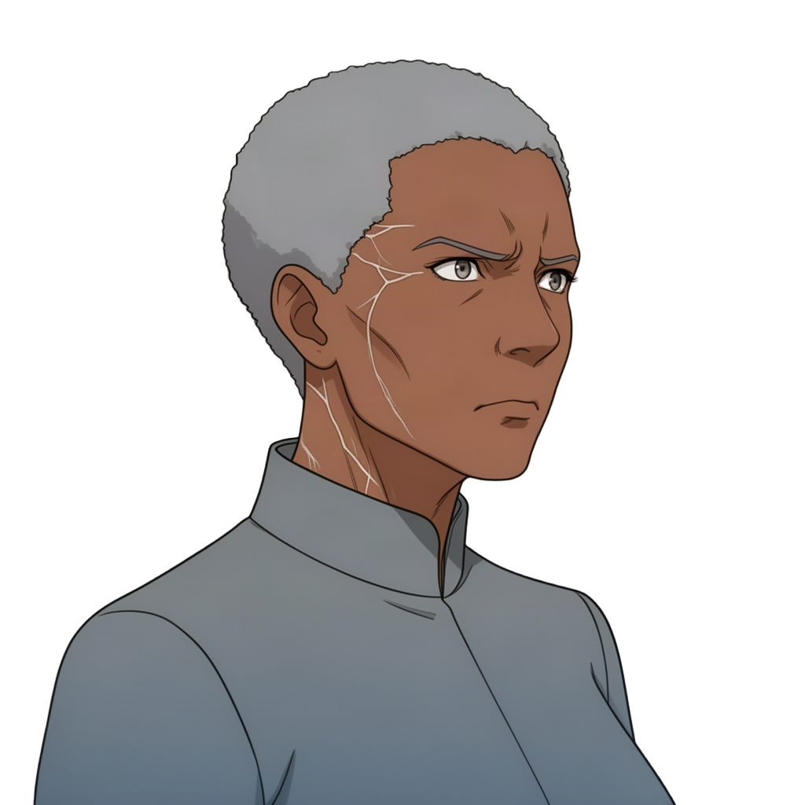
p okonta_defiantflux-2 $0.024 art/refs/ch06/portraits/okonta_defiant.pngused: ch6×2prompt
model: fal-ai/flux-2/edit
purpose: sheet
refs: art/refs/ch02/portraits/okonta.png
Anime-style character portrait, clean line art, soft cel shading, gentle natural colours. Head and shoulders, three-quarter view, the face turned toward the viewer's right, plain light grey background, no text. The same character as the reference image: same face, same hair, same clothes, same skin colour; only the expression changes. Dark brown skin, short grey hair, slate-grey high-collared suit, and the thin pale scar lines like pen lines at the temple and down the side of the neck, clearly visible exactly as in the reference. Both shoulders visible. Small normal realistic eyes, fully drawn with irises, pupils and highlights, no cartoon eyes, not large, not round, not shiny. A restrained realistic expression, moderate, no grin, no laughing, no tears streaming. Expression: hurt and defiant, chin lifted slightly, eyes hard, mouth tight, brows level.
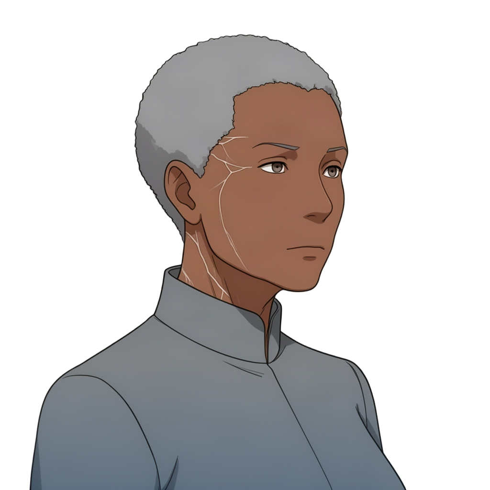
p okonta_flatflux-2 $0.024 art/refs/ch06/portraits/okonta_flat.pngused: ch6×6, ch7×1prompt
model: fal-ai/flux-2/edit
purpose: sheet
refs: art/refs/ch02/portraits/okonta.png
Anime-style character portrait, clean line art, soft cel shading, gentle natural colours. Head and shoulders, three-quarter view, the face turned toward the viewer's right, plain light grey background, no text. The same character as the reference image: same face, same hair, same clothes, same skin colour; only the expression changes. Dark brown skin, short grey hair, slate-grey high-collared suit, and the thin pale scar lines like pen lines at the temple and down the side of the neck, clearly visible exactly as in the reference. Both shoulders visible. Small normal realistic eyes, fully drawn with irises, pupils and highlights, no cartoon eyes, not large, not round, not shiny. A restrained realistic expression, moderate, no grin, no laughing, no tears streaming. Expression: expressionless, face completely still and smooth, eyes level looking ahead, mouth relaxed and closed.
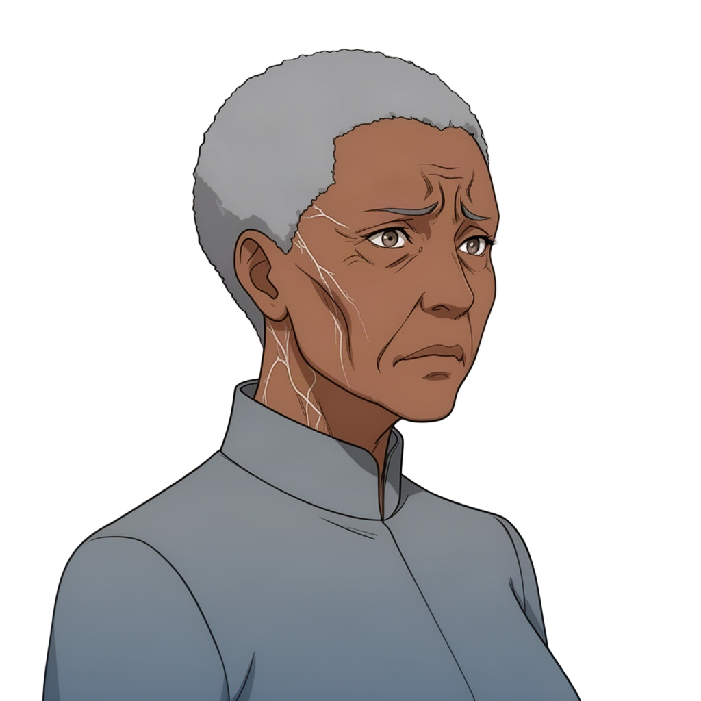
p okonta_frowningflux-2 $0.024 art/refs/ch05/portraits/okonta_frowning.pngused: ch5×1, ch6×1prompt
model: fal-ai/flux-2/edit
purpose: sheet
refs: art/refs/ch02/portraits/okonta.png
Anime-style character portrait, clean line art, soft cel shading, gentle natural colours. Head and shoulders, three-quarter view, the face turned toward the viewer's right, plain light grey background, no text. The same character as the reference image: same face, same hair, same clothes, same skin colour; only the expression changes. Both shoulders visible. The eyes are fully drawn with irises, pupils and highlights, looking open. A restrained realistic expression, moderate, no grin, no laughing, no tears streaming. Expression: frowning, brows drawn together, mouth pressed, worried and thinking hard. Dark brown skin and short grey hair, slate-grey high-collared suit.
 p okonta_graveflux-2-t2i $0.012 art/refs/ch02/portraits/okonta.pngused: ch2×1, ch3×14, ch4×4, ch5×2, ch7×5
p okonta_graveflux-2-t2i $0.012 art/refs/ch02/portraits/okonta.pngused: ch2×1, ch3×14, ch4×4, ch5×2, ch7×5prompt
model: fal-ai/flux-2
purpose: sheet
refs:
Anime-style character portrait, clean line art, soft cel shading, gentle natural colours. Head and shoulders, three-quarter view turned toward the viewer's right, plain light grey background, no text. Both shoulders visible. A spare woman of about sixty with dark brown skin and short grey hair, a grave, composed expression. She wears a close-fitting slate-grey suit with a high collar. Thin pale scars, as fine as pen lines, run from her temples down both sides of her neck and under her collar.
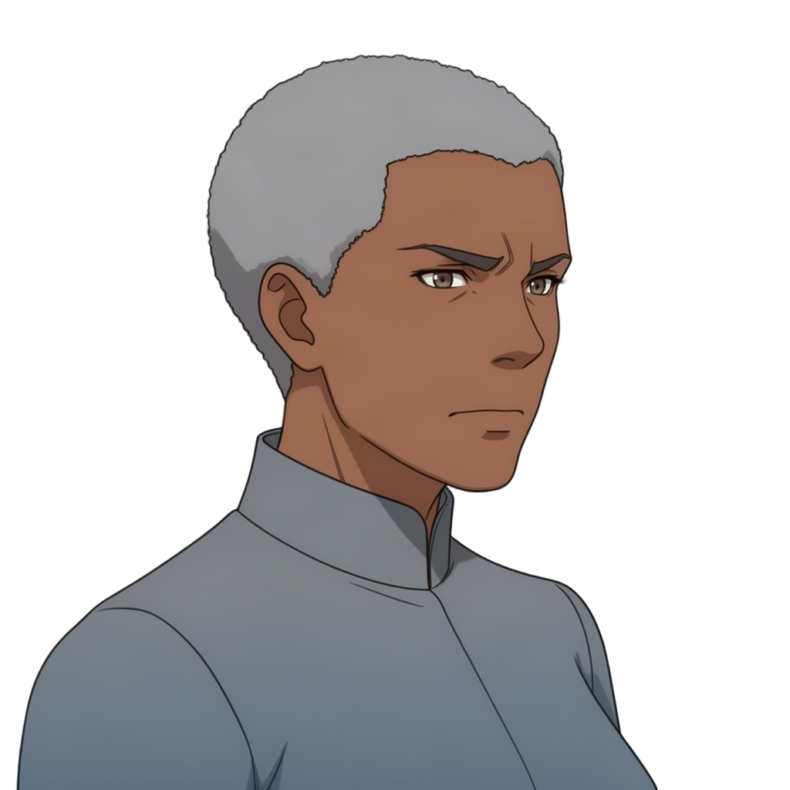
p okonta_grimflux-2 $0.024 art/refs/ch05/portraits/okonta_grim.pngused: ch5×4, ch7×1prompt
model: fal-ai/flux-2/edit
purpose: sheet
refs: art/refs/ch02/portraits/okonta.png
Anime-style character portrait, clean line art, soft cel shading, gentle natural colours. Head and shoulders, three-quarter view, the face turned toward the viewer's right, plain light grey background, no text. The same character as the reference image: same face, same hair, same clothes, same skin colour; only the expression changes. Both shoulders visible. The eyes are fully drawn with irises, pupils and highlights, looking open. A restrained realistic expression, moderate, no grin, no laughing, no tears streaming. Expression: grim, jaw set, eyes hard and level, mouth a flat line. Dark brown skin and short grey hair, slate-grey high-collared suit.
 p okonta_listeningflux-2 $0.024 art/refs/ch03/portraits/okonta_listening.pngused: ch3×2, ch4×1
p okonta_listeningflux-2 $0.024 art/refs/ch03/portraits/okonta_listening.pngused: ch3×2, ch4×1prompt
model: fal-ai/flux-2/edit
purpose: sheet
refs: art/refs/ch02/portraits/okonta.png
Anime-style character portrait, clean line art, soft cel shading, gentle natural colours. Head and shoulders, three-quarter view, the face turned toward the viewer's right, plain light grey background, no text. The same character as the reference image: same face, same hair, same clothes, same lighting, same skin colour; only the expression changes. Both shoulders visible. The eyes are fully drawn with irises, pupils and highlights. A restrained realistic expression, no grin, no laughing. Expression: listening intently, eyes closed, head tilted slightly, calm.
 p okonta_smilingflux-2 $0.024 art/refs/ch04/portraits/okonta_smiling.pngused: ch4×1, ch7×1
p okonta_smilingflux-2 $0.024 art/refs/ch04/portraits/okonta_smiling.pngused: ch4×1, ch7×1prompt
model: fal-ai/flux-2/edit
purpose: sheet
refs: art/refs/ch02/portraits/okonta_wry.png
Anime-style character portrait, clean line art, soft cel shading, gentle natural colours. Head and shoulders, three-quarter view, the face turned toward the viewer's right, plain light grey background, no text. The same character as the reference image: same face, same hair, same clothes, same lighting, same skin colour; only the expression changes. Both shoulders visible. The eyes are fully drawn with irises, pupils and highlights. A moderate, restrained expression, no grin, no laughing. Spare woman of about sixty, DARK BROWN skin, short grey hair as in the reference, slate-grey high-collared suit as in the reference, thin pale scars from the temples. Expression: a small private closed-mouth smile, eyes lowered and warm. No cup, no hands visible.
 p okonta_sorrowflux-2 $0.024 art/refs/ch02/portraits/okonta_sorrow.pngused: ch2×1, ch3×2, ch4×1, ch5×2, ch6×5
p okonta_sorrowflux-2 $0.024 art/refs/ch02/portraits/okonta_sorrow.pngused: ch2×1, ch3×2, ch4×1, ch5×2, ch6×5prompt
model: fal-ai/flux-2/edit
purpose: sheet
refs: art/refs/ch02/portraits/okonta.png
Anime-style character portrait, clean line art, soft cel shading, gentle natural colours. Head and shoulders, three-quarter view, the face turned toward the viewer's right, plain light grey background, no text. The same character as the reference image: same face, same hair, same clothes, same lighting; only the expression changes. Both shoulders visible. The eyes are fully drawn with irises, pupils and highlights. Expression: quiet sorrow, eyes lowered, a long loss.
 p okonta_urgentflux-2 $0.024 art/refs/ch02/portraits/okonta_urgent.pngused: ch2×1, ch3×4, ch4×2, ch5×2
p okonta_urgentflux-2 $0.024 art/refs/ch02/portraits/okonta_urgent.pngused: ch2×1, ch3×4, ch4×2, ch5×2prompt
model: fal-ai/flux-2/edit
purpose: sheet
refs: art/refs/ch02/portraits/okonta.png
Anime-style character portrait, clean line art, soft cel shading, gentle natural colours. Head and shoulders, three-quarter view, the face turned toward the viewer's right, plain light grey background, no text. The same character as the reference image: same face, the SAME DARK BROWN SKIN, same short grey hair, same slate-grey high-collared suit, same fine pale scars at the temples and neck; only the expression changes. Both shoulders visible. The eyes are fully drawn with irises, pupils and highlights. Expression: urgent and decisive, speaking, eyes direct.
 p okonta_wincingflux-2 $0.024 art/refs/ch06/portraits/okonta_wincing.pngused: ch6×1
p okonta_wincingflux-2 $0.024 art/refs/ch06/portraits/okonta_wincing.pngused: ch6×1prompt
model: fal-ai/flux-2/edit
purpose: sheet
refs: art/refs/ch02/portraits/okonta.png
Anime-style character portrait, clean line art, soft cel shading, gentle natural colours. Head and shoulders, three-quarter view, the face turned toward the viewer's right, plain light grey background, no text. The same character as the reference image: same face, same hair, same clothes, same skin colour; only the expression changes. Dark brown skin, short grey hair, slate-grey high-collared suit, and the thin pale scar lines like pen lines at the temple and down the side of the neck, clearly visible exactly as in the reference. Both shoulders visible. Small normal realistic eyes, fully drawn with irises, pupils and highlights, no cartoon eyes, not large, not round, not shiny. A restrained realistic expression, moderate, no grin, no laughing, no tears streaming. Expression: a small wince of pain held back, eyes narrowed, one brow pulled slightly, lips pressed.
 p okonta_wryflux-2 $0.024 art/refs/ch02/portraits/okonta_wry.pngused: ch2×1, ch3×5, ch4×2, ch7×2
p okonta_wryflux-2 $0.024 art/refs/ch02/portraits/okonta_wry.pngused: ch2×1, ch3×5, ch4×2, ch7×2prompt
model: fal-ai/flux-2/edit
purpose: sheet
refs: art/refs/ch02/portraits/okonta.png
Anime-style character portrait, clean line art, soft cel shading, gentle natural colours. Head and shoulders, three-quarter view, the face turned toward the viewer's right, plain light grey background, no text. The same character as the reference image: same face, the SAME DARK BROWN SKIN, same short grey hair, same slate-grey high-collared suit, same fine pale scars at the temples and neck; only the expression changes. Both shoulders visible. The eyes are fully drawn with irises, pupils and highlights. Expression: a slight, dry, weary smile, kind eyes.
Elder Oro (6)
 p oro_contentflux-2 $0.024 art/refs/ch02/portraits/oro_content.pngused: ch2×3
p oro_contentflux-2 $0.024 art/refs/ch02/portraits/oro_content.pngused: ch2×3prompt
model: fal-ai/flux-2/edit
purpose: sheet
refs: art/refs/ch01/portraits/oro.png
Anime-style character portrait, clean line art, soft cel shading, gentle natural colours. Head and shoulders, three-quarter view, the face turned toward the viewer's right, plain light grey background, no text. The same character as the reference image: same face, same hair, same clothes, same lighting; only the expression changes. Both shoulders visible. The eyes are fully drawn with irises, pupils and highlights. A subdued, quiet, realistic expression: no grin, no laughing, no wide open mouth, no wink. Expression: quietly contented, a small gentle smile, eyes soft and peaceful.
 p oro_delightedflux-2 $0.024 art/refs/ch02/portraits/oro_delighted.pngused: unused
p oro_delightedflux-2 $0.024 art/refs/ch02/portraits/oro_delighted.pngused: unusedprompt
model: fal-ai/flux-2/edit
purpose: sheet
refs: art/refs/ch01/portraits/oro.png
Anime-style character portrait, clean line art, soft cel shading, gentle natural colours. Head and shoulders, three-quarter view, the face turned toward the viewer's right, plain light grey background, no text. The same character as the reference image: same face, same hair, same clothes, same lighting; only the expression changes. Both shoulders visible. The eyes are fully drawn with irises, pupils and highlights. Expression: delighted, a broad warm happy smile, eyes shining.
 p oro_gentleflux-2 $0.024 art/refs/ch01/portraits/oro.pngused: ch1×2, ch2×1
p oro_gentleflux-2 $0.024 art/refs/ch01/portraits/oro.pngused: ch1×2, ch2×1prompt
model: fal-ai/flux-2/edit
purpose: sheet
refs: art/refs/ch01/oro.png
Anime-style character portrait, clean line art, soft cel shading, gentle natural colours. Head and shoulders only, the head and upper chest filling the frame, three-quarter view turned to face the viewer's right, plain light grey background, no text. The same character as the reference image: same face, same hair, same clothes. A very old man, bald brown head, gentle amused expression.
 p oro_graveflux-2 $0.024 art/refs/ch01/portraits/oro_grave.pngused: ch1×2
p oro_graveflux-2 $0.024 art/refs/ch01/portraits/oro_grave.pngused: ch1×2prompt
model: fal-ai/flux-2/edit
purpose: sheet
refs: art/refs/ch01/portraits/oro.png
Anime-style character portrait, clean line art, soft cel shading, gentle natural colours. Head and shoulders, three-quarter view turned toward the viewer's right, plain light grey background, no text. The same character as the reference image: same face, same hair, same clothes, same lighting; only the expression changes. Both shoulders visible. Expression: grave and serious, speaking, eyes steady.
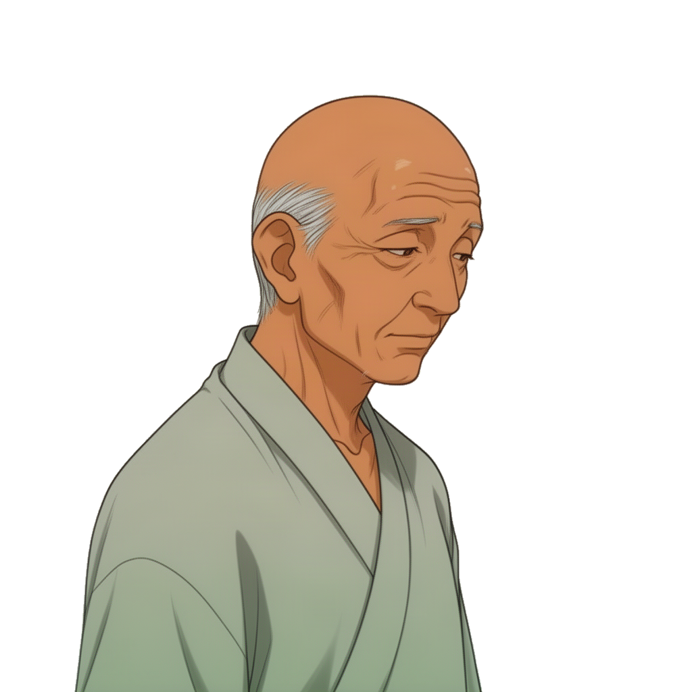
p oro_thoughtfulflux-2 $0.024 art/refs/ch01/portraits/oro_thoughtful.pngused: ch1×1prompt
model: fal-ai/flux-2/edit
purpose: sheet
refs: art/refs/ch01/portraits/oro.png
Anime-style character portrait, clean line art, soft cel shading, gentle natural colours. Head and shoulders, three-quarter view turned toward the viewer's right, plain light grey background, no text. The same character as the reference image: same face, same hair, same clothes, same lighting; only the expression changes. Both shoulders visible. Expression: thoughtful, eyes lowered as if looking at something in front of him.
 p oro_weepingflux-2 $0.024 art/refs/ch01/portraits/oro_weeping.pngused: ch1×1
p oro_weepingflux-2 $0.024 art/refs/ch01/portraits/oro_weeping.pngused: ch1×1prompt
model: fal-ai/flux-2/edit
purpose: sheet
refs: art/refs/ch01/portraits/oro.png
Anime-style character portrait, clean line art, soft cel shading, gentle natural colours. Head and shoulders, three-quarter view turned toward the viewer's right, plain light grey background, no text. The same character as the reference image: same face, same hair, same clothes, same lighting; only the expression changes. Both shoulders visible. Expression: weeping quietly, tears on his cheeks, overwhelmed and moved.
Sefa (22)
 p sefa_afraidflux-2 $0.024 art/refs/ch07/portraits/sefa_afraid.pngused: ch7×1
p sefa_afraidflux-2 $0.024 art/refs/ch07/portraits/sefa_afraid.pngused: ch7×1prompt
model: fal-ai/flux-2/edit
purpose: sheet
refs: art/refs/ch06/portraits/sefa_dry.png
Anime-style character portrait, clean line art, soft cel shading, gentle natural colours. Head and shoulders, three-quarter view, the face turned toward the viewer's right, plain light grey background, no text. The same character as the reference image: same face, same clothes, same skin colour, same lighting; only the expression changes. Both shoulders visible. Small normal realistic eyes, fully drawn with irises, pupils and highlights, no cartoon eyes, not large, not round, not shiny. A restrained realistic expression, moderate, no grin, no laughing, no tears streaming. Girl of sixteen like the reference, dark hair in a high ponytail with a silver-white strip, large nearly black eyes, light skin, short sleeveless grey-green tunic. Expression: small and afraid, eyes wide and fixed, brows lifted, lips pressed together, shoulders drawn in a little.
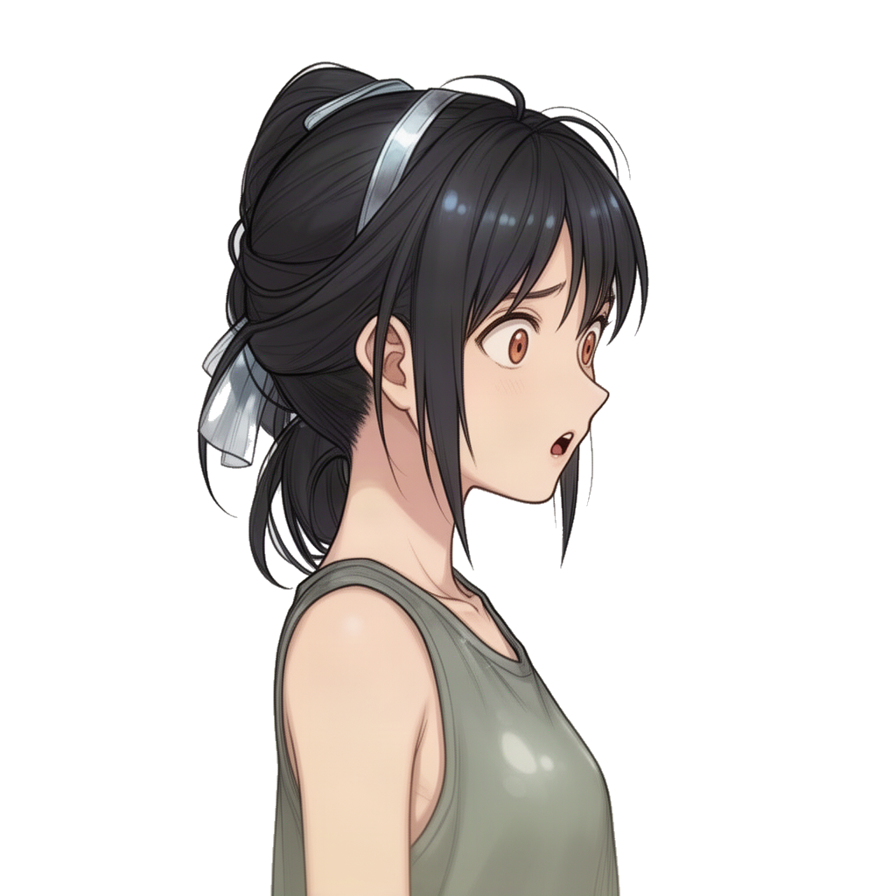
p sefa_amazedflux-2 $0.024 art/refs/ch01/portraits/sefa_amazed.pngused: ch1×2, ch7×1prompt
model: fal-ai/flux-2/edit
purpose: sheet
refs: art/refs/ch01/portraits/sefa.png
Anime-style character portrait, clean line art, soft cel shading, gentle natural colours. Head and shoulders, three-quarter view turned toward the viewer's right, plain light grey background, no text. The same character as the reference image: same face, same hair, same clothes, same lighting; only the expression changes. Both shoulders visible. Expression: amazed, eyes wide, lips parted, breathless.
 p sefa_amusedflux-2 $0.024 art/refs/ch01/portraits/sefa_amused.pngused: ch1×7, ch2×1
p sefa_amusedflux-2 $0.024 art/refs/ch01/portraits/sefa_amused.pngused: ch1×7, ch2×1prompt
model: fal-ai/flux-2/edit
purpose: sheet
refs: art/refs/ch01/portraits/sefa.png
Anime-style character portrait, clean line art, soft cel shading, gentle natural colours. Head and shoulders, three-quarter view turned toward the viewer's right, plain light grey background, no text. The same character as the reference image: same face, same hair, same clothes, same lighting; only the expression changes. Both shoulders visible. Expression: amused, a small dry smile, one eyebrow raised.
 p sefa_dismayedflux-2 $0.024 art/refs/ch07/portraits/sefa_dismayed.pngused: ch7×2
p sefa_dismayedflux-2 $0.024 art/refs/ch07/portraits/sefa_dismayed.pngused: ch7×2prompt
model: fal-ai/flux-2/edit
purpose: sheet
refs: art/refs/ch06/portraits/sefa_dry.png
Anime-style character portrait, clean line art, soft cel shading, gentle natural colours. Head and shoulders, three-quarter view, the face turned toward the viewer's right, plain light grey background, no text. The same character as the reference image: same face, same clothes, same skin colour, same lighting; only the expression changes. Both shoulders visible. Small normal realistic eyes, fully drawn with irises, pupils and highlights, no cartoon eyes, not large, not round, not shiny. A restrained realistic expression, moderate, no grin, no laughing, no tears streaming. Girl of sixteen like the reference, dark hair in a high ponytail with a silver-white strip, large nearly black eyes, light skin, short sleeveless grey-green tunic. Expression: dismayed and stricken, brows pinched upward, lips parted slightly, eyes fixed on something far away, quiet distress.
 p sefa_dryflux-2 $0.024 art/refs/ch06/portraits/sefa_dry.pngused: ch6×1
p sefa_dryflux-2 $0.024 art/refs/ch06/portraits/sefa_dry.pngused: ch6×1prompt
model: fal-ai/flux-2/edit
purpose: sheet
refs: art/refs/ch01/portraits/sefa.png
Anime-style character portrait, clean line art, soft cel shading, gentle natural colours. Head and shoulders, three-quarter view, the face turned toward the viewer's right, plain light grey background, no text. The same character as the reference image: same face, same hair, same clothes, same skin colour; only the expression changes. Girl of sixteen in profile like the reference, dark hair in a high ponytail with a silver-white strip, large nearly black eyes with grey-brown irises, light skin, short sleeveless grey-green tunic. Both shoulders visible. Small normal realistic eyes, fully drawn with irises, pupils and highlights, no cartoon eyes, not large, not round, not shiny. A restrained realistic expression, moderate, no grin, no laughing, no tears streaming. Expression: dry and deadpan, one brow slightly raised, eyes level, mouth flat with the faintest twist.
 p sefa_eagerflux-2 $0.024 art/refs/ch08/portraits/sefa_eager.pngused: unused
p sefa_eagerflux-2 $0.024 art/refs/ch08/portraits/sefa_eager.pngused: unusedprompt
model: fal-ai/flux-2/edit
purpose: sprite
refs: art/refs/ch06/portraits/sefa_dry.png
Anime-style character portrait, clean line art, soft cel shading, gentle natural colours. Head and shoulders, three-quarter view, the face turned toward the viewer's right, plain light grey background, no text. The same character as the reference image: same face, same hair, same clothes, same skin colour; only the expression changes. Both shoulders visible. Small normal realistic eyes, fully drawn with irises, pupils and highlights, not large, not round, not shiny. Restrained realistic expression. Girl of sixteen like the reference, same ponytail with a silver-white strip, short sleeveless grey-green tunic. Expression: bursting to speak but holding it in, lips pressed tightly together, eyes bright and level with the same size as the reference, brows slightly raised.
 p sefa_easyflux-2 $0.024 art/refs/ch02/portraits/sefa_easy.pngused: ch2×1
p sefa_easyflux-2 $0.024 art/refs/ch02/portraits/sefa_easy.pngused: ch2×1prompt
model: fal-ai/flux-2/edit
purpose: sheet
refs: art/refs/ch01/portraits/sefa.png
Anime-style character portrait, clean line art, soft cel shading, gentle natural colours. Head and shoulders, three-quarter view, the face turned toward the viewer's right, plain light grey background, no text. The same character as the reference image: same face, same hair, same clothes, same lighting; only the expression changes. Both shoulders visible. The eyes are fully drawn with irises, pupils and highlights. A subdued, quiet, realistic expression: no grin, no laughing, no wide open mouth, no wink. Expression: relaxed and at ease, a very small closed-mouth smile, eyes soft, the tension gone.
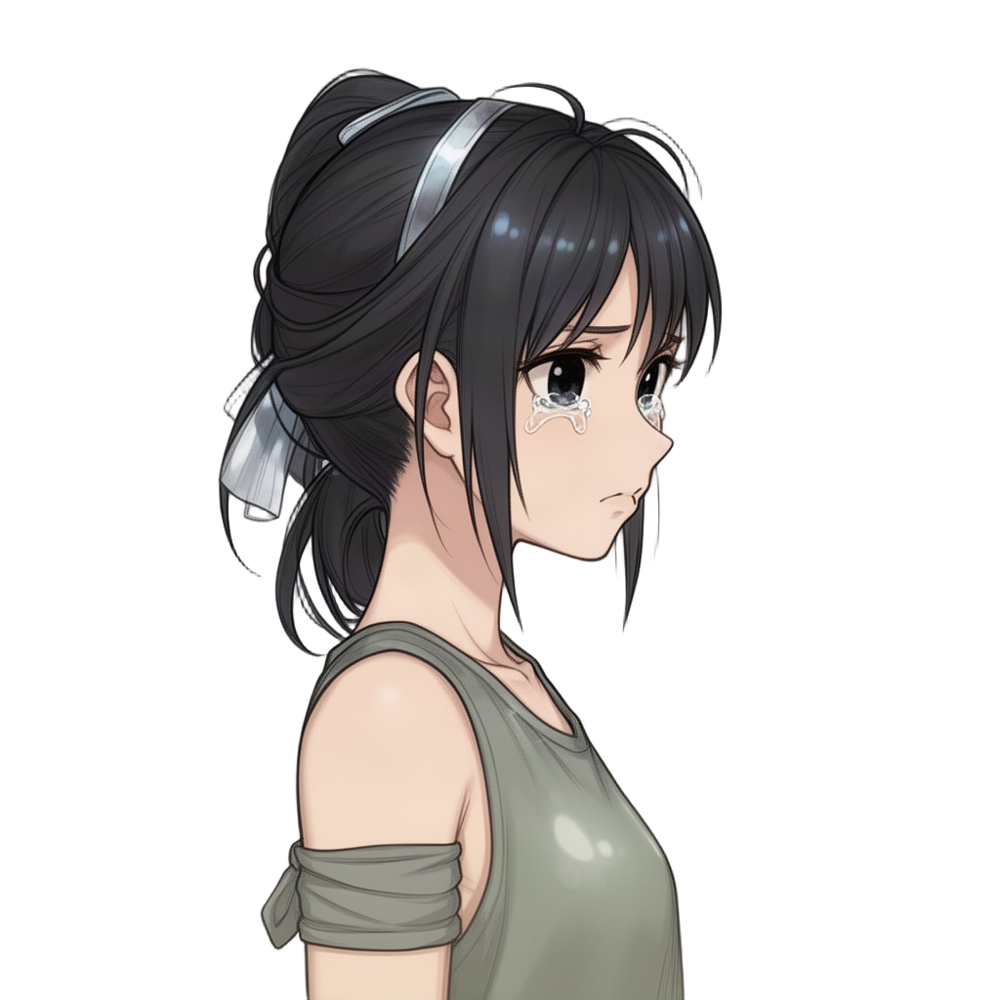
p sefa_eyes_fillingflux-2 $0.024 art/refs/ch05/portraits/sefa_eyes_filling.pngused: ch5×1prompt
model: fal-ai/flux-2/edit
purpose: sheet
refs: art/refs/ch01/portraits/sefa.png
Anime-style character portrait, clean line art, soft cel shading, gentle natural colours. Head and shoulders, three-quarter view, the face turned toward the viewer's right, plain light grey background, no text. The same character as the reference image: same face, same hair, same clothes, same skin colour; only the expression changes. Both shoulders visible. The eyes are fully drawn with irises, pupils and highlights, looking open. A restrained realistic expression, moderate, no grin, no laughing, no tears streaming. Expression: eyes filling with tears, brimming and shining, lips pressed together trying not to cry. A plain grey cloth band tied round her upper arm. Large nearly black eyes, dark hair in a high ponytail with a silver-white strip.
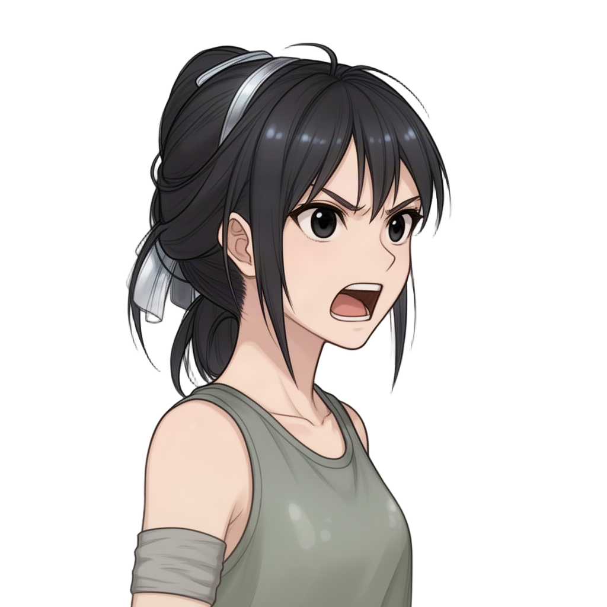
p sefa_fierceflux-2 $0.024 art/refs/ch02/portraits/sefa_fierce.pngused: ch2×1, ch5×2prompt
model: fal-ai/flux-2/edit
purpose: sheet
refs: art/refs/ch01/portraits/sefa.png
Anime-style character portrait, clean line art, soft cel shading, gentle natural colours. Head and shoulders, three-quarter view, the face turned toward the viewer's right, plain light grey background, no text. The same character as the reference image: same face, same hair, same clothes, same lighting; only the expression changes. Both shoulders visible. The eyes are fully drawn with irises, pupils and highlights. Expression: fierce, eyes hard and blazing, chin lifted, ready to fight.
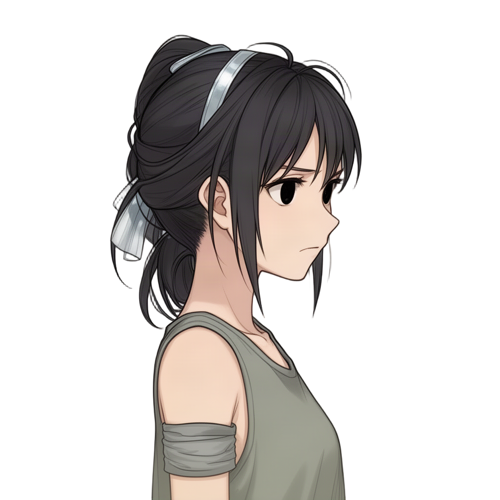
p sefa_hardflux-2 $0.024 art/refs/ch05/portraits/sefa_hard.pngused: ch5×1, ch7×1prompt
model: fal-ai/flux-2/edit
purpose: sheet
refs: art/refs/ch01/portraits/sefa.png
Anime-style character portrait, clean line art, soft cel shading, gentle natural colours. Head and shoulders, three-quarter view, the face turned toward the viewer's right, plain light grey background, no text. The same character as the reference image: same face, same hair, same clothes, same skin colour; only the expression changes. Both shoulders visible. The eyes are fully drawn with irises, pupils and highlights, looking open. A restrained realistic expression, moderate, no grin, no laughing, no tears streaming. Expression: hard and quiet, mouth set flat, eyes level and cold, face older than sixteen. A plain grey cloth band tied round her upper arm. Large nearly black eyes, dark hair in a high ponytail with a silver-white strip.
 p sefa_lipflux-2 $0.024 art/refs/ch06/portraits/sefa_lip.pngused: unused
p sefa_lipflux-2 $0.024 art/refs/ch06/portraits/sefa_lip.pngused: unusedprompt
model: fal-ai/flux-2/edit
purpose: sheet
refs: art/refs/ch01/portraits/sefa.png
Anime-style character portrait, clean line art, soft cel shading, gentle natural colours. Head and shoulders, three-quarter view, the face turned toward the viewer's right, plain light grey background, no text. The same character as the reference image: same face, same hair, same clothes, same skin colour; only the expression changes. Girl of sixteen in profile like the reference, dark hair in a high ponytail with a silver-white strip, large nearly black eyes with grey-brown irises, light skin, short sleeveless grey-green tunic. Both shoulders visible. Small normal realistic eyes, fully drawn with irises, pupils and highlights, no cartoon eyes, not large, not round, not shiny. A restrained realistic expression, moderate, no grin, no laughing, no tears streaming. Expression: concentrating hard, her lower lip pulled in and held between her upper teeth, eyes lowered and focused, brows slightly drawn.
 p sefa_proudflux-2 $0.024 art/refs/ch01/portraits/sefa_proud.pngused: ch1×4
p sefa_proudflux-2 $0.024 art/refs/ch01/portraits/sefa_proud.pngused: ch1×4prompt
model: fal-ai/flux-2/edit
purpose: sheet
refs: art/refs/ch01/portraits/sefa.png
Anime-style character portrait, clean line art, soft cel shading, gentle natural colours. Head and shoulders, three-quarter view turned toward the viewer's right, plain light grey background, no text. The same character as the reference image: same face, same hair, same clothes, same lighting; only the expression changes. Both shoulders visible. Expression: proud, chin lifted, a slight smirk.
 p sefa_puzzledflux-2 $0.024 art/refs/ch11/portraits/sefa_puzzled.pngused: unused
p sefa_puzzledflux-2 $0.024 art/refs/ch11/portraits/sefa_puzzled.pngused: unusedprompt
model: fal-ai/flux-2/edit
purpose: sprite
refs: art/refs/ch01/portraits/sefa.png
Anime-style character portrait, clean line art, soft cel shading, gentle natural colours. Head and shoulders, three-quarter view, the face turned toward the viewer's right (nose pointing to the right edge of the picture), plain light grey background, no text. Both shoulders visible. Small normal realistic eyes, fully drawn with irises, pupils and highlights, not large, not round, not shiny. A restrained realistic expression, moderate, no grin, no tears streaming. The same character as the reference image: same face, same hair, same clothes, same skin colour; only the expression changes. Thin girl of about sixteen, dark hair in a high ponytail with a silver-white strip, large nearly black eyes, light skin. Expression: frowning, puzzled, brows drawn together, looking down at something, mouth closed.
 p sefa_shakenflux-2 $0.036 art/refs/ch10/portraits/sefa_shaken.pngused: unused
p sefa_shakenflux-2 $0.036 art/refs/ch10/portraits/sefa_shaken.pngused: unusedprompt
model: fal-ai/flux-2/edit
purpose: sheet
refs: art/refs/ch10/portraits/dace_angry.png, game/game/images/p_sefa_wary.png
Anime-style character portrait, clean line art, soft cel shading, gentle natural colours. Head and shoulders, three-quarter view, the face and nose clearly turned toward the viewer's right, plain light grey background, no text. The same character as the reference image: same face, same hair, same clothes, same skin colour; only the expression changes. Small normal realistic eyes, fully drawn with irises, pupils and highlights, no cartoon eyes. A restrained realistic expression, moderate, no grin, no laughing, no tears. Expression: quiet, withdrawn and shaken, eyes cast down, lips pressed together, no tears, face pale. A young woman with black hair tied up with a pale ribbon, olive-grey sleeveless top; same as reference image 2.
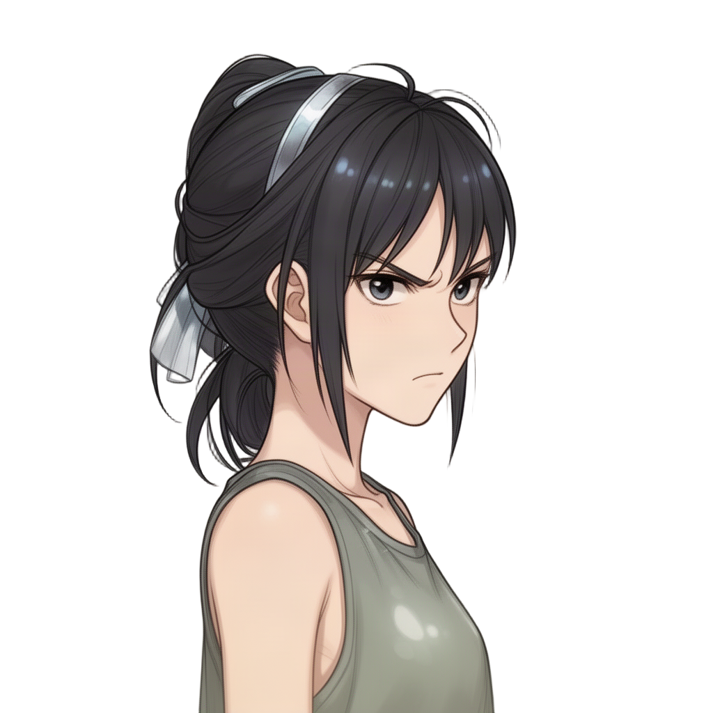
p sefa_sharpflux-2 $0.024 art/refs/ch01/portraits/sefa_sharp.pngused: ch1×2, ch2×1prompt
model: fal-ai/flux-2/edit
purpose: sheet
refs: art/refs/ch01/portraits/sefa.png
Anime-style character portrait, clean line art, soft cel shading, gentle natural colours. Head and shoulders, three-quarter view turned toward the viewer's right, plain light grey background, no text. The same character as the reference image: same face, same hair, same clothes, same lighting; only the expression changes. Both shoulders visible. Expression: sharp, suspicious look, eyes narrowed, mouth firm.
 p sefa_shoutingflux-2 $0.024 art/refs/ch09/portraits/sefa_shouting.pngused: unused
p sefa_shoutingflux-2 $0.024 art/refs/ch09/portraits/sefa_shouting.pngused: unusedprompt
model: fal-ai/flux-2/edit
purpose: sheet
refs: art/refs/ch01/portraits/sefa.png
Same girl, same dark hair in a high ponytail with a shining silver-white strip, same large nearly black eyes, same grey-green sleeveless tunic, same art style, same three-quarter view facing the viewer's right, plain light grey background, head and shoulders. Only the expression changes. Eyes fully drawn with irises, pupils and highlights. Expression: shouting across a distance, mouth open wide in a shout, brows pulled down and together, frightened and urgent, no smile.
 p sefa_sickflux-2 $0.024 art/refs/ch08/portraits/sefa_sick.pngused: unused
p sefa_sickflux-2 $0.024 art/refs/ch08/portraits/sefa_sick.pngused: unusedprompt
model: fal-ai/flux-2/edit
purpose: sprite
refs: art/refs/ch06/portraits/sefa_dry.png
Anime-style character portrait, clean line art, soft cel shading, gentle natural colours. Head and shoulders, three-quarter view, the face turned toward the viewer's right, plain light grey background, no text. The same character as the reference image: same face, same hair, same clothes, same skin colour; only the expression changes. Both shoulders visible. Small normal realistic eyes, fully drawn with irises, pupils and highlights, not large, not round, not shiny. Restrained realistic expression. Girl of sixteen like the reference, same light skin colour as the reference, same ponytail with a silver-white strip, short sleeveless grey-green tunic. Expression: seasick, skin only slightly paler than usual, eyes small and half lowered, lips pressed together, a bead of sweat at the temple. Same three-quarter view as the reference.
 p sefa_swollenflux-2 $0.024 art/refs/ch07/portraits/sefa_swollen.pngused: ch7×1
p sefa_swollenflux-2 $0.024 art/refs/ch07/portraits/sefa_swollen.pngused: ch7×1prompt
model: fal-ai/flux-2/edit
purpose: sheet
refs: art/refs/ch06/portraits/sefa_dry.png
Anime-style character portrait, clean line art, soft cel shading, gentle natural colours. Head and shoulders, three-quarter view, the face turned toward the viewer's right, plain light grey background, no text. The same character as the reference image: same face, same clothes, same skin colour, same lighting; only the expression changes. Both shoulders visible. Small normal realistic eyes, fully drawn with irises, pupils and highlights, no cartoon eyes, not large, not round, not shiny. A restrained realistic expression, moderate, no grin, no laughing, no tears streaming. Girl of sixteen like the reference, dark hair in a high ponytail with a silver-white strip, large nearly black eyes, light skin, short sleeveless grey-green tunic. Expression: furious after hours of weeping: the rims of the eyes red, the lower eyelids puffy and swollen, the nose a little red, no blush on the cheeks, jaw set hard, brows low, eyes glaring straight ahead, mouth pressed in a tight line.
 p sefa_thoughtfulflux-2 $0.024 art/refs/ch01/portraits/sefa_thoughtful.pngused: ch1×7
p sefa_thoughtfulflux-2 $0.024 art/refs/ch01/portraits/sefa_thoughtful.pngused: ch1×7prompt
model: fal-ai/flux-2/edit
purpose: sheet
refs: art/refs/ch01/portraits/sefa.png
Anime-style character portrait, clean line art, soft cel shading, gentle natural colours. Head and shoulders, three-quarter view turned toward the viewer's right, plain light grey background, no text. The same character as the reference image: same face, same hair, same clothes, same lighting; only the expression changes. Both shoulders visible. Expression: thoughtful, eyes lowered, considering something honestly.
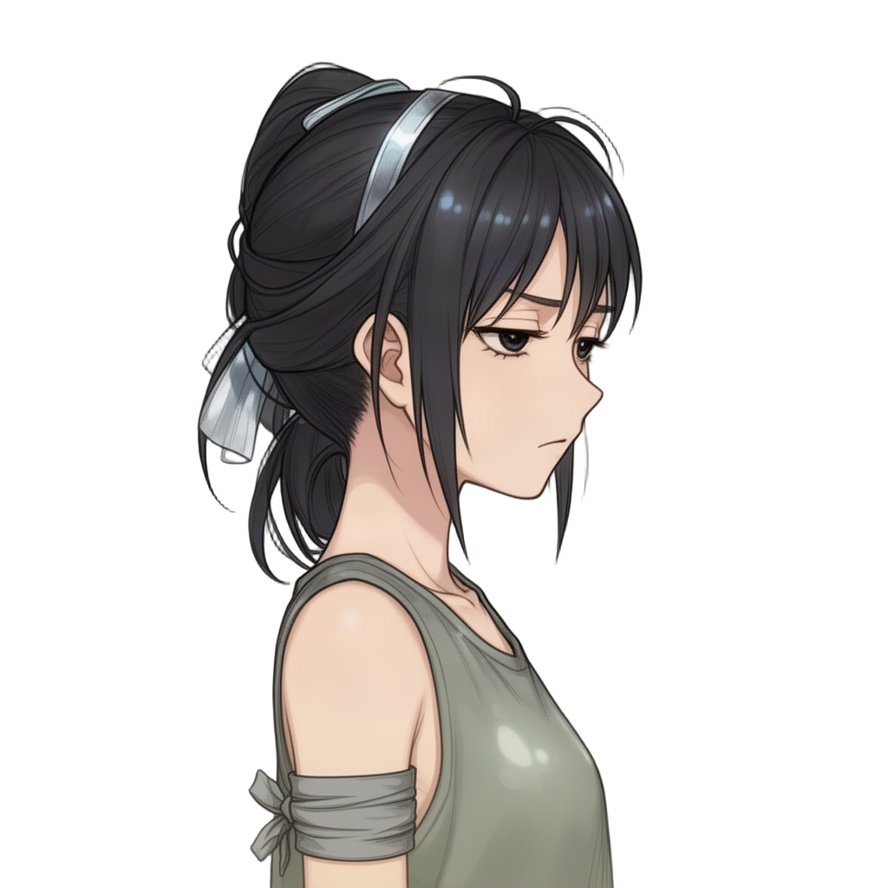
p sefa_tiredflux-2 $0.024 art/refs/ch05/portraits/sefa_tired.pngused: ch5×5prompt
model: fal-ai/flux-2/edit
purpose: sheet
refs: art/refs/ch01/portraits/sefa.png
Anime-style character portrait, clean line art, soft cel shading, gentle natural colours. Head and shoulders, three-quarter view, the face turned toward the viewer's right, plain light grey background, no text. The same character as the reference image: same face, same hair, same clothes, same skin colour; only the expression changes. Both shoulders visible. The eyes are fully drawn with irises, pupils and highlights, looking open. A restrained realistic expression, moderate, no grin, no laughing, no tears streaming. Expression: tired, heavy lids, face drawn and thinner, mouth slightly slack. A plain grey cloth band tied round her upper arm. Large nearly black eyes, dark hair in a high ponytail with a silver-white strip.
 p sefa_understandingflux-2 $0.024 art/refs/ch11/portraits/sefa_understanding.pngused: unused
p sefa_understandingflux-2 $0.024 art/refs/ch11/portraits/sefa_understanding.pngused: unusedprompt
model: fal-ai/flux-2/edit
purpose: sprite
refs: art/refs/ch01/portraits/sefa.png
Anime-style character portrait, clean line art, soft cel shading, gentle natural colours. Head and shoulders, three-quarter view, the face turned toward the viewer's right (nose pointing to the right edge of the picture), plain light grey background, no text. Both shoulders visible. Small normal realistic eyes, fully drawn with irises, pupils and highlights, not large, not round, not shiny. A restrained realistic expression, moderate, no grin, no tears streaming. The same character as the reference image: same face, same hair, same clothes, same skin colour; only the expression changes. Thin girl of about sixteen, dark hair in a high ponytail with a silver-white strip, large nearly black eyes, light skin. Expression: she has just understood something terrible, dry-eyed, face gone still and pale, eyes steady, mouth closed, no tears.
 p sefa_waryflux-2 $0.024 art/refs/ch01/portraits/sefa.pngused: ch1×4, ch7×1
p sefa_waryflux-2 $0.024 art/refs/ch01/portraits/sefa.pngused: ch1×4, ch7×1prompt
model: fal-ai/flux-2/edit
purpose: sheet
refs: art/refs/ch01/sefa.png
Anime-style character portrait, clean line art, soft cel shading, gentle natural colours. Head and shoulders only, the head and upper chest filling the frame, three-quarter view turned to face the viewer's right, plain light grey background, no text. The same character as the reference image: same face, same hair, same clothes. A girl of about sixteen, calm and wary, dark hair tied back with a shining strip.
Wrack (50)
 p wrack_bewilderedflux-2 $0.024 art/refs/ch01/portraits/wrack.pngused: ch1×3
p wrack_bewilderedflux-2 $0.024 art/refs/ch01/portraits/wrack.pngused: ch1×3prompt
model: fal-ai/flux-2/edit
purpose: sheet
refs: art/refs/ch01/wrack.png
Anime-style character portrait, clean line art, soft cel shading, gentle natural colours. Head and shoulders, three-quarter view turned toward the viewer's right, plain light grey background, no text. The same character as the reference image: same face, same hair, same clothes. Both shoulders and both sleeves fully visible and symmetrical, nothing cut off. A man with a bewildered, troubled expression, wearing a grey zip jacket with a small shield-shaped crest on the chest, a little torn at the sleeves but both arms intact.
 p wrack_blankflux-2 $0.024 art/refs/ch01/portraits/wrack_blank.pngused: ch1×2
p wrack_blankflux-2 $0.024 art/refs/ch01/portraits/wrack_blank.pngused: ch1×2prompt
model: fal-ai/flux-2/edit
purpose: sheet
refs: art/refs/ch01/portraits/wrack.png
Anime-style character portrait, clean line art, soft cel shading, gentle natural colours. Head and shoulders, three-quarter view, the face turned toward the viewer's right, plain light grey background, no text. The same character as the reference image: same face, same hair, same clothes, same lighting; only the expression changes. Both shoulders visible. Expression: lost and distant, a dull unfocused gaze looking at nothing, eyelids slightly lowered, mouth slightly open, face slack and drained of feeling. The eyes are fully drawn with dark irises, pupils and small highlights; never leave the eyes white or empty. The head is tilted a little downward.
 p wrack_hat_calmflux-2 $0.024 art/refs/ch08/portraits/wrack_hat_calm.pngused: unused
p wrack_hat_calmflux-2 $0.024 art/refs/ch08/portraits/wrack_hat_calm.pngused: unusedprompt
model: fal-ai/flux-2/edit
purpose: sprite
refs: art/refs/ch04/threaded/final/calm.png
Anime-style character portrait, clean line art, soft cel shading, gentle natural colours. Head and shoulders, three-quarter view, the face turned toward the viewer's right, plain light grey background, no text. The same character as the reference image: same face, same hair, same clothes, same skin colour; only the expression changes. Both shoulders visible. Small normal realistic eyes, fully drawn with irises, pupils and highlights, not large, not round, not shiny. Restrained realistic expression, moderate, no grin, no laughing. Man like the reference, lean, short messy black hair, light skin, dark brown eyes, a single thin pale line from the temple down the side of the neck (keep it visible). Plain loose grey-green tunic as in the reference. He wears a plain soft dark-grey brimmed hat, the neck line still visible. Expression: calm, steady and a little weary, eyes level, mouth closed.
 p wrack_hat_guardedflux-2 $0.036 art/refs/ch08/portraits/wrack_hat_guarded.pngused: unused
p wrack_hat_guardedflux-2 $0.036 art/refs/ch08/portraits/wrack_hat_guarded.pngused: unusedprompt
model: fal-ai/flux-2/edit
purpose: sprite
refs: art/refs/ch04/threaded/final/calm.png, art/refs/ch08/portraits/wrack_hat_calm.png
Anime-style character portrait, clean line art, soft cel shading, gentle natural colours. Head and shoulders, three-quarter view, the face turned toward the viewer's right, plain light grey background, no text. The same character as the reference image: same face, same hair, same clothes, same skin colour; only the expression changes. Both shoulders visible. Small normal realistic eyes, fully drawn with irises, pupils and highlights, not large, not round, not shiny. Restrained realistic expression. Man with a single thin pale line down the side of the neck (keep it visible), plain loose grey-green tunic. The hat is exactly the hat from reference 2: a plain soft dark-grey hat with a short brim. Expression: guarded and watchful, eyes alert, mouth closed.
 p wrack_hat_melancholyflux-2 $0.036 art/refs/ch08/portraits/wrack_hat_melancholy.pngused: unused
p wrack_hat_melancholyflux-2 $0.036 art/refs/ch08/portraits/wrack_hat_melancholy.pngused: unusedprompt
model: fal-ai/flux-2/edit
purpose: sprite
refs: art/refs/ch04/threaded/final/calm.png, art/refs/ch08/portraits/wrack_hat_calm.png
Anime-style character portrait, clean line art, soft cel shading, gentle natural colours. Head and shoulders, three-quarter view, the face turned toward the viewer's right, plain light grey background, no text. The same character as the reference image: same face, same hair, same clothes, same skin colour; only the expression changes. Both shoulders visible. Small normal realistic eyes, fully drawn with irises, pupils and highlights, not large, not round, not shiny. Restrained realistic expression. Man with a single thin pale line down the side of the neck (keep it visible), plain loose grey-green tunic. The hat is exactly the hat from reference 2: a plain soft dark-grey hat with a short brim. Expression: quiet melancholy, eyes lowered and distant, mouth closed.
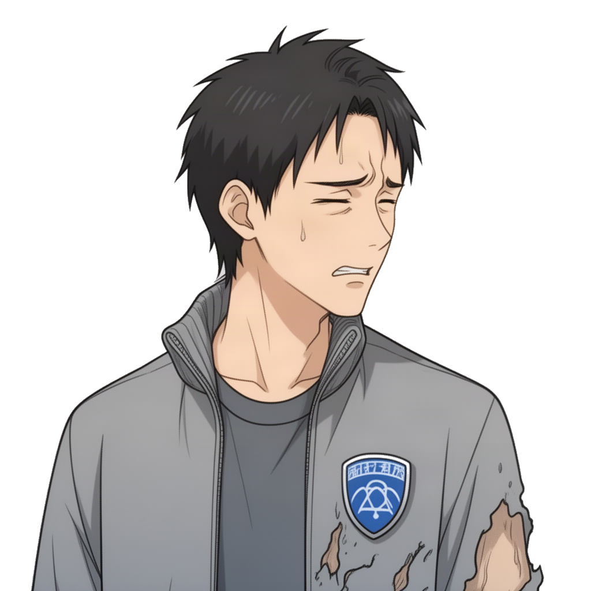
p wrack_painedflux-2 $0.024 art/refs/ch01/portraits/wrack_pained.pngused: ch1×3prompt
model: fal-ai/flux-2/edit
purpose: sheet
refs: art/refs/ch01/portraits/wrack.png
Anime-style character portrait, clean line art, soft cel shading, gentle natural colours. Head and shoulders, three-quarter view turned toward the viewer's right, plain light grey background, no text. The same character as the reference image: same face, same hair, same clothes, same lighting; only the expression changes. Both shoulders visible. Expression: pained, a wince, hurt by the air.
 p wrack_puzzledflux-2 $0.024 art/refs/ch01/portraits/wrack_puzzled.pngused: ch1×7
p wrack_puzzledflux-2 $0.024 art/refs/ch01/portraits/wrack_puzzled.pngused: ch1×7prompt
model: fal-ai/flux-2/edit
purpose: sheet
refs: art/refs/ch01/portraits/wrack.png
Anime-style character portrait, clean line art, soft cel shading, gentle natural colours. Head and shoulders, three-quarter view, the face and eyes clearly turned toward the viewer's right, plain light grey background, no text. The same character as the reference image: same face, same hair, same clothes, same lighting; only the expression changes. Both shoulders visible. Expression: puzzled, brow furrowed, looking toward the right.
 p wrack_suit_coolflux-2 $0.024 art/refs/ch08/portraits/wrack_suit_cool.pngused: unused
p wrack_suit_coolflux-2 $0.024 art/refs/ch08/portraits/wrack_suit_cool.pngused: unusedprompt
model: fal-ai/flux-2/edit
purpose: sprite
refs: art/refs/ch04/threaded/final/calm.png
Anime-style character portrait, clean line art, soft cel shading, gentle natural colours. Head and shoulders, three-quarter view, the face turned toward the viewer's right, plain light grey background, no text. The same character as the reference image: same face, same hair, same clothes, same skin colour; only the expression changes. Both shoulders visible. Small normal realistic eyes, fully drawn with irises, pupils and highlights, not large, not round, not shiny. Restrained realistic expression, moderate, no grin, no laughing. Man like the reference, lean, short messy black hair, light skin, dark brown eyes, a single thin pale line from the temple down the side of the neck (keep it visible). Instead of the tunic he now wears a well-cut dark charcoal business suit, white shirt with an open soft collar and a loosened dark tie, the neck line still visible above the collar, no hat. Expression: cool, bored and faintly threatening, eyes half-lidded and level, mouth flat, an executive's authority.
 p wrack_suit_sorrowfulflux-2 $0.024 art/refs/ch08/portraits/wrack_suit_sorrowful.pngused: unused
p wrack_suit_sorrowfulflux-2 $0.024 art/refs/ch08/portraits/wrack_suit_sorrowful.pngused: unusedprompt
model: fal-ai/flux-2/edit
purpose: sprite
refs: art/refs/ch04/threaded/final/calm.png
Anime-style character portrait, clean line art, soft cel shading, gentle natural colours. Head and shoulders, three-quarter view, the face turned toward the viewer's right, plain light grey background, no text. The same character as the reference image: same face, same hair, same clothes, same skin colour; only the expression changes. Both shoulders visible. Small normal realistic eyes, fully drawn with irises, pupils and highlights, not large, not round, not shiny. Restrained realistic expression, moderate, no grin, no laughing. Man like the reference, lean, short messy black hair, light skin, dark brown eyes, a single thin pale line from the temple down the side of the neck (keep it visible). Instead of the tunic he now wears a well-cut dark charcoal business suit, white shirt with an open soft collar and a loosened dark tie, the neck line still visible above the collar, no hat. Expression: sorrowful and sincere, brows drawn up in the middle, eyes soft and glistening, mouth closed, an apology.
 p wrack_thread_angry art/refs/ch04/portraits/wrack_thread_angry.pngused: ch6×2
p wrack_thread_angry art/refs/ch04/portraits/wrack_thread_angry.pngused: ch6×2prompt
Anime-style character portrait, clean line art, soft cel shading, gentle natural colours. Head and shoulders, three-quarter view, the face turned toward the viewer's right, plain light grey background, no text. The same character as the reference image: same face, same short messy black hair, same grey-green tunic, same lighting, same skin colour, same expression exactly; nothing changes except one small addition. The addition: ONE single thin pale line on the skin, a faint healed-looking mark the colour of pale pinkish cream, a clearly visible line about two pixels wide at normal size, slightly lighter than the skin with a hair-thin soft shadow along one edge so it reads as a slightly raised mark. It starts at the hairline beside the temple and runs in one gentle unbranched curve down the side of the neck, ending at the collar. NOT branching, NOT forked, NOT wiry, NOT silver, NOT a cable. Exactly one line, ONLY on the neck below the ear: nothing on the cheek, jaw, ear or face; no second line; no fork at the top; the top of the line fades out just under the ear lobe; short, only on this one side, visible at a normal glance without being large. Nothing else on the face or neck changes. The eyes are fully drawn with irises, pupils and highlights.
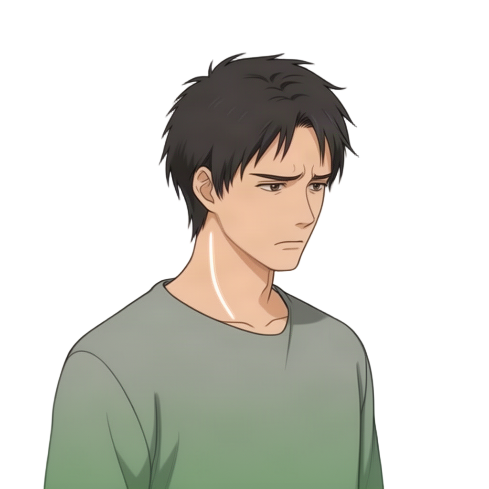
p wrack_thread_ashamed art/refs/ch04/portraits/wrack_thread_ashamed.pngused: ch6×1, ch7×4prompt
Anime-style character portrait, clean line art, soft cel shading, gentle natural colours. Head and shoulders, three-quarter view, the face turned toward the viewer's right, plain light grey background, no text. The same character as the reference image: same face, same short messy black hair, same grey-green tunic, same lighting, same skin colour, same expression exactly; nothing changes except one small addition. The addition: ONE single thin pale line on the skin, a faint healed-looking mark the colour of pale pinkish cream, a clearly visible line about two pixels wide at normal size, slightly lighter than the skin with a hair-thin soft shadow along one edge so it reads as a slightly raised mark. It starts at the hairline beside the temple and runs in one gentle unbranched curve down the side of the neck, ending at the collar. NOT branching, NOT forked, NOT wiry, NOT silver, NOT a cable. Exactly one line, ONLY on the neck below the ear: nothing on the cheek, jaw, ear or face; no second line; no fork at the top; the top of the line fades out just under the ear lobe; short, only on this one side, visible at a normal glance without being large. Nothing else on the face or neck changes. The eyes are fully drawn with irises, pupils and highlights.
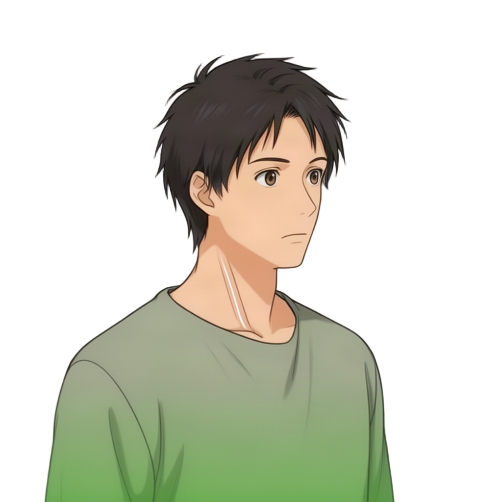
p wrack_thread_attentive art/refs/ch04/portraits/wrack_thread_attentive.pngused: ch5×3, ch7×5prompt
Anime-style character portrait, clean line art, soft cel shading, gentle natural colours. Head and shoulders, three-quarter view, the face turned toward the viewer's right, plain light grey background, no text. The same character as the reference image: same face, same short messy black hair, same grey-green tunic, same lighting, same skin colour, same expression exactly; nothing changes except one small addition. The addition: ONE single thin pale line on the skin, a faint healed-looking mark the colour of pale pinkish cream, a clearly visible line about two pixels wide at normal size, slightly lighter than the skin with a hair-thin soft shadow along one edge so it reads as a slightly raised mark. It starts at the hairline beside the temple and runs in one gentle unbranched curve down the side of the neck, ending at the collar. NOT branching, NOT forked, NOT wiry, NOT silver, NOT a cable. Exactly one line, ONLY on the neck below the ear: nothing on the cheek, jaw, ear or face; no second line; no fork at the top; the top of the line fades out just under the ear lobe; short, only on this one side, visible at a normal glance without being large. Nothing else on the face or neck changes. The eyes are fully drawn with irises, pupils and highlights.
 p wrack_thread_calm art/refs/ch04/portraits/wrack_thread_calm.pngused: ch4×1, ch5×1, ch6×2, ch7×1
p wrack_thread_calm art/refs/ch04/portraits/wrack_thread_calm.pngused: ch4×1, ch5×1, ch6×2, ch7×1prompt
Anime-style character portrait, clean line art, soft cel shading, gentle natural colours. Head and shoulders, three-quarter view, the face turned toward the viewer's right, plain light grey background, no text. The same character as the reference image: same face, same short messy black hair, same grey-green tunic, same lighting, same skin colour, same expression exactly; nothing changes except one small addition. The addition: ONE single thin pale line on the skin, a faint healed-looking mark the colour of pale pinkish cream, a clearly visible line about two pixels wide at normal size, slightly lighter than the skin with a hair-thin soft shadow along one edge so it reads as a slightly raised mark. It starts at the hairline beside the temple and runs in one gentle unbranched curve down the side of the neck, ending at the collar. NOT branching, NOT forked, NOT wiry, NOT silver, NOT a cable. Exactly one line, ONLY on the neck below the ear: nothing on the cheek, jaw, ear or face; no second line; no fork at the top; the top of the line fades out just under the ear lobe; short, only on this one side, visible at a normal glance without being large. Nothing else on the face or neck changes. The eyes are fully drawn with irises, pupils and highlights.
 p wrack_thread_coldflux-2 $0.024 art/refs/ch11/portraits/wrack_thread_cold.pngused: unused
p wrack_thread_coldflux-2 $0.024 art/refs/ch11/portraits/wrack_thread_cold.pngused: unusedprompt
model: fal-ai/flux-2/edit
purpose: sprite
refs: art/refs/ch04/threaded/final/calm.png
Anime-style character portrait, clean line art, soft cel shading, gentle natural colours. Head and shoulders, three-quarter view, the face turned toward the viewer's right (nose pointing to the right edge of the picture), plain light grey background, no text. Both shoulders visible. Small normal realistic eyes, fully drawn with irises, pupils and highlights, not large, not round, not shiny. A restrained realistic expression, moderate, no grin, no tears streaming. The same character as the reference image: same face, same hair, same clothes, same skin colour; only the expression changes. Lean man, short messy black hair, light skin, grey-green tunic, a single thin pale Thread line down the side of the neck. Expression: cold and empty, face smooth and still like a man doing sums, eyes level and hard, mouth closed.
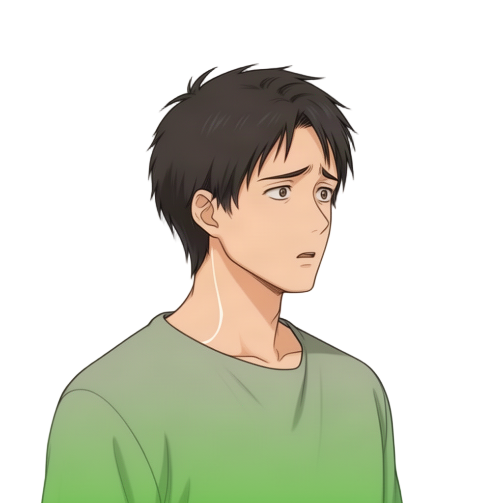
p wrack_thread_dazed art/refs/ch04/portraits/wrack_thread_dazed.pngused: ch5×1prompt
Anime-style character portrait, clean line art, soft cel shading, gentle natural colours. Head and shoulders, three-quarter view, the face turned toward the viewer's right, plain light grey background, no text. The same character as the reference image: same face, same short messy black hair, same grey-green tunic, same lighting, same skin colour, same expression exactly; nothing changes except one small addition. The addition: ONE single thin pale line on the skin, a faint healed-looking mark the colour of pale pinkish cream, a clearly visible line about two pixels wide at normal size, slightly lighter than the skin with a hair-thin soft shadow along one edge so it reads as a slightly raised mark. It starts at the hairline beside the temple and runs in one gentle unbranched curve down the side of the neck, ending at the collar. NOT branching, NOT forked, NOT wiry, NOT silver, NOT a cable. Exactly one line, ONLY on the neck below the ear: nothing on the cheek, jaw, ear or face; no second line; no fork at the top; the top of the line fades out just under the ear lobe; short, only on this one side, visible at a normal glance without being large. Nothing else on the face or neck changes. The eyes are fully drawn with irises, pupils and highlights.
 p wrack_thread_dejected art/refs/ch04/portraits/wrack_thread_dejected.pngused: ch6×6, ch7×1
p wrack_thread_dejected art/refs/ch04/portraits/wrack_thread_dejected.pngused: ch6×6, ch7×1prompt
Anime-style character portrait, clean line art, soft cel shading, gentle natural colours. Head and shoulders, three-quarter view, the face turned toward the viewer's right, plain light grey background, no text. The same character as the reference image: same face, same short messy black hair, same grey-green tunic, same lighting, same skin colour, same expression exactly; nothing changes except one small addition. The addition: ONE single thin pale line on the skin, a faint healed-looking mark the colour of pale pinkish cream, a clearly visible line about two pixels wide at normal size, slightly lighter than the skin with a hair-thin soft shadow along one edge so it reads as a slightly raised mark. It starts at the hairline beside the temple and runs in one gentle unbranched curve down the side of the neck, ending at the collar. NOT branching, NOT forked, NOT wiry, NOT silver, NOT a cable. Exactly one line, ONLY on the neck below the ear: nothing on the cheek, jaw, ear or face; no second line; no fork at the top; the top of the line fades out just under the ear lobe; short, only on this one side, visible at a normal glance without being large. Nothing else on the face or neck changes. The eyes are fully drawn with irises, pupils and highlights.
 p wrack_thread_exhausted art/refs/ch04/portraits/wrack_thread_exhausted.pngused: ch5×1
p wrack_thread_exhausted art/refs/ch04/portraits/wrack_thread_exhausted.pngused: ch5×1prompt
Anime-style character portrait, clean line art, soft cel shading, gentle natural colours. Head and shoulders, three-quarter view, the face turned toward the viewer's right, plain light grey background, no text. The same character as the reference image: same face, same short messy black hair, same grey-green tunic, same lighting, same skin colour, same expression exactly; nothing changes except one small addition. The addition: ONE single thin pale line on the skin, a faint healed-looking mark the colour of pale pinkish cream, a clearly visible line about two pixels wide at normal size, slightly lighter than the skin with a hair-thin soft shadow along one edge so it reads as a slightly raised mark. It starts at the hairline beside the temple and runs in one gentle unbranched curve down the side of the neck, ending at the collar. NOT branching, NOT forked, NOT wiry, NOT silver, NOT a cable. Exactly one line, ONLY on the neck below the ear: nothing on the cheek, jaw, ear or face; no second line; no fork at the top; the top of the line fades out just under the ear lobe; short, only on this one side, visible at a normal glance without being large. Nothing else on the face or neck changes. The eyes are fully drawn with irises, pupils and highlights.
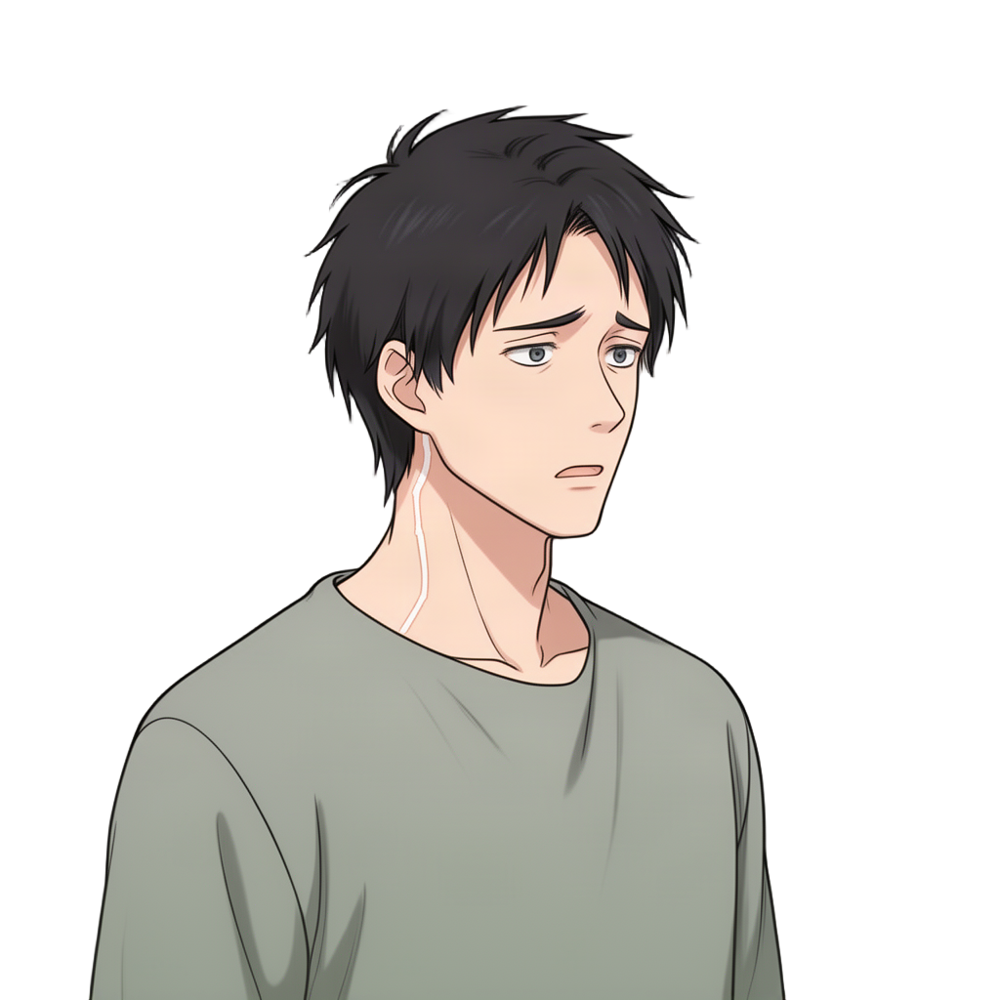
p wrack_thread_fading art/refs/ch04/portraits/wrack_thread_fading.pngused: ch5×1prompt
Anime-style character portrait, clean line art, soft cel shading, gentle natural colours. Head and shoulders, three-quarter view, the face turned toward the viewer's right, plain light grey background, no text. The same character as the reference image: same face, same short messy black hair, same grey-green tunic, same lighting, same skin colour, same expression exactly; nothing changes except one small addition. The addition: ONE single thin pale line on the skin, a faint healed-looking mark the colour of pale pinkish cream, a clearly visible line about two pixels wide at normal size, slightly lighter than the skin with a hair-thin soft shadow along one edge so it reads as a slightly raised mark. It starts at the hairline beside the temple and runs in one gentle unbranched curve down the side of the neck, ending at the collar. NOT branching, NOT forked, NOT wiry, NOT silver, NOT a cable. Exactly one line, ONLY on the neck below the ear: nothing on the cheek, jaw, ear or face; no second line; no fork at the top; the top of the line fades out just under the ear lobe; short, only on this one side, visible at a normal glance without being large. Nothing else on the face or neck changes. The eyes are fully drawn with irises, pupils and highlights.
 p wrack_thread_frightened art/refs/ch04/portraits/wrack_thread_frightened.pngused: ch4×3, ch5×1
p wrack_thread_frightened art/refs/ch04/portraits/wrack_thread_frightened.pngused: ch4×3, ch5×1prompt
Anime-style character portrait, clean line art, soft cel shading, gentle natural colours. Head and shoulders, three-quarter view, the face turned toward the viewer's right, plain light grey background, no text. The same character as the reference image: same face, same short messy black hair, same grey-green tunic, same lighting, same skin colour, same expression exactly; nothing changes except one small addition. The addition: ONE single thin pale line on the skin, a faint healed-looking mark the colour of pale pinkish cream, a clearly visible line about two pixels wide at normal size, slightly lighter than the skin with a hair-thin soft shadow along one edge so it reads as a slightly raised mark. It starts at the hairline beside the temple and runs in one gentle unbranched curve down the side of the neck, ending at the collar. NOT branching, NOT forked, NOT wiry, NOT silver, NOT a cable. Exactly one line, ONLY on the neck below the ear: nothing on the cheek, jaw, ear or face; no second line; no fork at the top; the top of the line fades out just under the ear lobe; short, only on this one side, visible at a normal glance without being large. Nothing else on the face or neck changes. The eyes are fully drawn with irises, pupils and highlights.
 p wrack_thread_grieving art/refs/ch04/portraits/wrack_thread_grieving.pngused: ch4×2, ch5×1, ch6×1, ch7×2
p wrack_thread_grieving art/refs/ch04/portraits/wrack_thread_grieving.pngused: ch4×2, ch5×1, ch6×1, ch7×2prompt
Anime-style character portrait, clean line art, soft cel shading, gentle natural colours. Head and shoulders, three-quarter view, the face turned toward the viewer's right, plain light grey background, no text. The same character as the reference image: same face, same short messy black hair, same grey-green tunic, same lighting, same skin colour, same expression exactly; nothing changes except one small addition. The addition: ONE single thin pale line on the skin, a faint healed-looking mark the colour of pale pinkish cream, a clearly visible line about two pixels wide at normal size, slightly lighter than the skin with a hair-thin soft shadow along one edge so it reads as a slightly raised mark. It starts at the hairline beside the temple and runs in one gentle unbranched curve down the side of the neck, ending at the collar. NOT branching, NOT forked, NOT wiry, NOT silver, NOT a cable. Exactly one line, ONLY on the neck below the ear: nothing on the cheek, jaw, ear or face; no second line; no fork at the top; the top of the line fades out just under the ear lobe; short, only on this one side, visible at a normal glance without being large. Nothing else on the face or neck changes. The eyes are fully drawn with irises, pupils and highlights.
 p wrack_thread_pleadingflux-2 $0.024 art/refs/ch11/portraits/wrack_thread_pleading.pngused: unused
p wrack_thread_pleadingflux-2 $0.024 art/refs/ch11/portraits/wrack_thread_pleading.pngused: unusedprompt
model: fal-ai/flux-2/edit
purpose: sprite
refs: art/refs/ch04/threaded/final/calm.png
Anime-style character portrait, clean line art, soft cel shading, gentle natural colours. Head and shoulders, three-quarter view, the face turned toward the viewer's right (nose pointing to the right edge of the picture), plain light grey background, no text. Both shoulders visible. Small normal realistic eyes, fully drawn with irises, pupils and highlights, not large, not round, not shiny. A restrained realistic expression, moderate, no grin, no tears streaming. The same character as the reference image: same face, same hair, same clothes, same skin colour; only the expression changes. Lean man, short messy black hair, light skin, grey-green tunic, a single thin pale Thread line down the side of the neck. Expression: pleading quietly, brows drawn up in the middle, eyes earnest, mouth slightly open as if saying her name.
 p wrack_thread_resolved art/refs/ch04/portraits/wrack_thread_resolved.pngused: ch4×1, ch5×3, ch7×2
p wrack_thread_resolved art/refs/ch04/portraits/wrack_thread_resolved.pngused: ch4×1, ch5×3, ch7×2prompt
Anime-style character portrait, clean line art, soft cel shading, gentle natural colours. Head and shoulders, three-quarter view, the face turned toward the viewer's right, plain light grey background, no text. The same character as the reference image: same face, same short messy black hair, same grey-green tunic, same lighting, same skin colour, same expression exactly; nothing changes except one small addition. The addition: ONE single thin pale line on the skin, a faint healed-looking mark the colour of pale pinkish cream, a clearly visible line about two pixels wide at normal size, slightly lighter than the skin with a hair-thin soft shadow along one edge so it reads as a slightly raised mark. It starts at the hairline beside the temple and runs in one gentle unbranched curve down the side of the neck, ending at the collar. NOT branching, NOT forked, NOT wiry, NOT silver, NOT a cable. Exactly one line, ONLY on the neck below the ear: nothing on the cheek, jaw, ear or face; no second line; no fork at the top; the top of the line fades out just under the ear lobe; short, only on this one side, visible at a normal glance without being large. Nothing else on the face or neck changes. The eyes are fully drawn with irises, pupils and highlights.
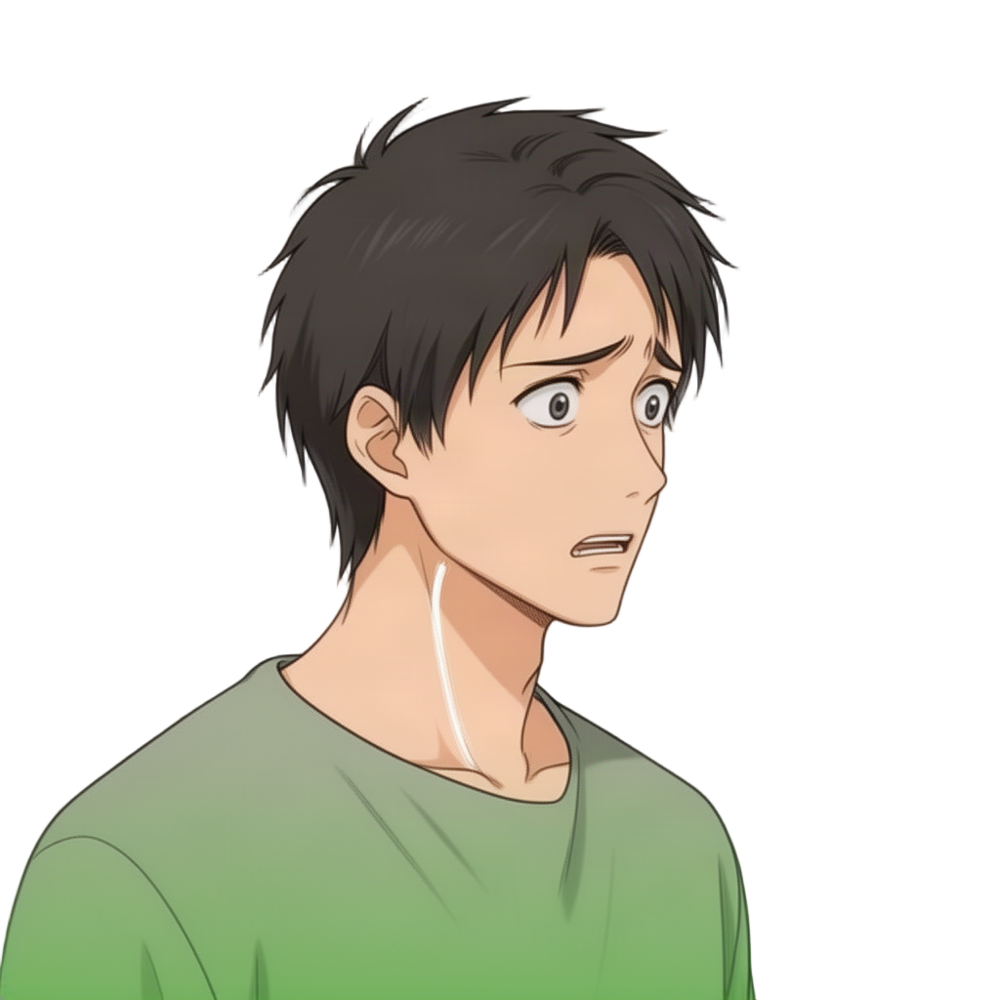
p wrack_thread_shaken art/refs/ch04/portraits/wrack_thread_shaken.pngused: ch4×2, ch6×1prompt
Anime-style character portrait, clean line art, soft cel shading, gentle natural colours. Head and shoulders, three-quarter view, the face turned toward the viewer's right, plain light grey background, no text. The same character as the reference image: same face, same short messy black hair, same grey-green tunic, same lighting, same skin colour, same expression exactly; nothing changes except one small addition. The addition: ONE single thin pale line on the skin, a faint healed-looking mark the colour of pale pinkish cream, a clearly visible line about two pixels wide at normal size, slightly lighter than the skin with a hair-thin soft shadow along one edge so it reads as a slightly raised mark. It starts at the hairline beside the temple and runs in one gentle unbranched curve down the side of the neck, ending at the collar. NOT branching, NOT forked, NOT wiry, NOT silver, NOT a cable. Exactly one line, ONLY on the neck below the ear: nothing on the cheek, jaw, ear or face; no second line; no fork at the top; the top of the line fades out just under the ear lobe; short, only on this one side, visible at a normal glance without being large. Nothing else on the face or neck changes. The eyes are fully drawn with irises, pupils and highlights.
 p wrack_thread_strainingflux-2 $0.024 art/refs/ch08/portraits/wrack_thread_straining.pngused: unused
p wrack_thread_strainingflux-2 $0.024 art/refs/ch08/portraits/wrack_thread_straining.pngused: unusedprompt
model: fal-ai/flux-2/edit
purpose: sprite
refs: art/refs/ch04/threaded/final/calm.png
Anime-style character portrait, clean line art, soft cel shading, gentle natural colours. Head and shoulders, three-quarter view, the face turned toward the viewer's right, plain light grey background, no text. The same character as the reference image: same face, same hair, same clothes, same skin colour; only the expression changes. Both shoulders visible. Small normal realistic eyes, fully drawn with irises, pupils and highlights, not large, not round, not shiny. Restrained realistic expression, moderate, no grin, no laughing. Man like the reference, lean, short messy black hair, light skin, dark brown eyes, a single thin pale line from the temple down the side of the neck (keep it visible). Plain loose grey-green tunic as in the reference. Expression: straining with concentration and frustration, brows drawn together, jaw set, eyes narrowed, as though trying too hard.
 p wrack_thread_stunned art/refs/ch04/portraits/wrack_thread_stunned.pngused: ch5×3
p wrack_thread_stunned art/refs/ch04/portraits/wrack_thread_stunned.pngused: ch5×3prompt
Anime-style character portrait, clean line art, soft cel shading, gentle natural colours. Head and shoulders, three-quarter view, the face turned toward the viewer's right, plain light grey background, no text. The same character as the reference image: same face, same short messy black hair, same grey-green tunic, same lighting, same skin colour, same expression exactly; nothing changes except one small addition. The addition: ONE single thin pale line on the skin, a faint healed-looking mark the colour of pale pinkish cream, a clearly visible line about two pixels wide at normal size, slightly lighter than the skin with a hair-thin soft shadow along one edge so it reads as a slightly raised mark. It starts at the hairline beside the temple and runs in one gentle unbranched curve down the side of the neck, ending at the collar. NOT branching, NOT forked, NOT wiry, NOT silver, NOT a cable. Exactly one line, ONLY on the neck below the ear: nothing on the cheek, jaw, ear or face; no second line; no fork at the top; the top of the line fades out just under the ear lobe; short, only on this one side, visible at a normal glance without being large. Nothing else on the face or neck changes. The eyes are fully drawn with irises, pupils and highlights.
 p wrack_thread_thinking art/refs/ch04/portraits/wrack_thread_thinking.pngused: ch6×2
p wrack_thread_thinking art/refs/ch04/portraits/wrack_thread_thinking.pngused: ch6×2prompt
Anime-style character portrait, clean line art, soft cel shading, gentle natural colours. Head and shoulders, three-quarter view, the face turned toward the viewer's right, plain light grey background, no text. The same character as the reference image: same face, same short messy black hair, same grey-green tunic, same lighting, same skin colour, same expression exactly; nothing changes except one small addition. The addition: ONE single thin pale line on the skin, a faint healed-looking mark the colour of pale pinkish cream, a clearly visible line about two pixels wide at normal size, slightly lighter than the skin with a hair-thin soft shadow along one edge so it reads as a slightly raised mark. It starts at the hairline beside the temple and runs in one gentle unbranched curve down the side of the neck, ending at the collar. NOT branching, NOT forked, NOT wiry, NOT silver, NOT a cable. Exactly one line, ONLY on the neck below the ear: nothing on the cheek, jaw, ear or face; no second line; no fork at the top; the top of the line fades out just under the ear lobe; short, only on this one side, visible at a normal glance without being large. Nothing else on the face or neck changes. The eyes are fully drawn with irises, pupils and highlights.
 p wrack_thread_troubled art/refs/ch04/portraits/wrack_thread_troubled.pngused: ch5×7, ch6×5, ch7×3
p wrack_thread_troubled art/refs/ch04/portraits/wrack_thread_troubled.pngused: ch5×7, ch6×5, ch7×3prompt
Anime-style character portrait, clean line art, soft cel shading, gentle natural colours. Head and shoulders, three-quarter view, the face turned toward the viewer's right, plain light grey background, no text. The same character as the reference image: same face, same short messy black hair, same grey-green tunic, same lighting, same skin colour, same expression exactly; nothing changes except one small addition. The addition: ONE single thin pale line on the skin, a faint healed-looking mark the colour of pale pinkish cream, a clearly visible line about two pixels wide at normal size, slightly lighter than the skin with a hair-thin soft shadow along one edge so it reads as a slightly raised mark. It starts at the hairline beside the temple and runs in one gentle unbranched curve down the side of the neck, ending at the collar. NOT branching, NOT forked, NOT wiry, NOT silver, NOT a cable. Exactly one line, ONLY on the neck below the ear: nothing on the cheek, jaw, ear or face; no second line; no fork at the top; the top of the line fades out just under the ear lobe; short, only on this one side, visible at a normal glance without being large. Nothing else on the face or neck changes. The eyes are fully drawn with irises, pupils and highlights.
 p wrack_thread_wryflux-2 $0.024 art/refs/ch08/portraits/wrack_thread_wry.pngused: unused
p wrack_thread_wryflux-2 $0.024 art/refs/ch08/portraits/wrack_thread_wry.pngused: unusedprompt
model: fal-ai/flux-2/edit
purpose: sprite
refs: art/refs/ch04/threaded/final/calm.png
Anime-style character portrait, clean line art, soft cel shading, gentle natural colours. Head and shoulders, three-quarter view, the face turned toward the viewer's right, plain light grey background, no text. The same character as the reference image: same face, same hair, same clothes, same skin colour; only the expression changes. Both shoulders visible. Small normal realistic eyes, fully drawn with irises, pupils and highlights, not large, not round, not shiny. Restrained realistic expression, moderate, no grin, no laughing. Man like the reference, lean, short messy black hair, light skin, dark brown eyes, a single thin pale line from the temple down the side of the neck (keep it visible). Plain loose grey-green tunic as in the reference. Expression: wry, one corner of the mouth drawn very slightly, eyes tired and amused, a dry half-expression, no real smile.
 p wrack_tunic_angryflux-2 $0.024 art/refs/ch06/portraits/wrack_tunic_angry.pngused: unused
p wrack_tunic_angryflux-2 $0.024 art/refs/ch06/portraits/wrack_tunic_angry.pngused: unusedprompt
model: fal-ai/flux-2/edit
purpose: sheet
refs: art/refs/ch05/portraits/wrack_tunic_resolved.png
Anime-style character portrait, clean line art, soft cel shading, gentle natural colours. Head and shoulders, three-quarter view, the face turned toward the viewer's right, plain light grey background, no text. The same character as the reference image: same face, same hair, same clothes, same skin colour; only the expression changes. Lean man, short messy black hair, light skin, dark brown eyes, grey-green tunic. Both shoulders visible. Small normal realistic eyes, fully drawn with irises, pupils and highlights, no cartoon eyes, not large, not round, not shiny. A restrained realistic expression, moderate, no grin, no laughing, no tears streaming. Expression: angry but held in, brows drawn together, jaw clenched, eyes hard, mouth tight.
 p wrack_tunic_ashamedflux-2 $0.024 art/refs/ch06/portraits/wrack_tunic_ashamed.pngused: unused
p wrack_tunic_ashamedflux-2 $0.024 art/refs/ch06/portraits/wrack_tunic_ashamed.pngused: unusedprompt
model: fal-ai/flux-2/edit
purpose: sheet
refs: art/refs/ch05/portraits/wrack_tunic_resolved.png
Anime-style character portrait, clean line art, soft cel shading, gentle natural colours. Head and shoulders, three-quarter view, the face turned toward the viewer's right, plain light grey background, no text. The same character as the reference image: same face, same hair, same clothes, same skin colour; only the expression changes. Lean man, short messy black hair, light skin, dark brown eyes, grey-green tunic. Both shoulders visible. Small normal realistic eyes, fully drawn with irises, pupils and highlights, no cartoon eyes, not large, not round, not shiny. A restrained realistic expression, moderate, no grin, no laughing, no tears streaming. Expression: ashamed and afraid, eyes lowered and a little to the side, brows lifted slightly, mouth tight.
 p wrack_tunic_attentiveflux-2 $0.024 art/refs/ch02/portraits/wrack_tunic_attentive.pngused: ch2×6, ch3×13, ch4×20
p wrack_tunic_attentiveflux-2 $0.024 art/refs/ch02/portraits/wrack_tunic_attentive.pngused: ch2×6, ch3×13, ch4×20prompt
model: fal-ai/flux-2/edit
purpose: sheet
refs: art/refs/ch01/portraits/wrack_tunic.png
Anime-style character portrait, clean line art, soft cel shading, gentle natural colours. Head and shoulders, three-quarter view, the face turned toward the viewer's right, plain light grey background, no text. The same character as the reference image: same face, same hair, same clothes, same lighting; only the expression changes. Both shoulders visible. The eyes are fully drawn with irises, pupils and highlights. A subdued, quiet, realistic expression: no grin, no laughing, no wide open mouth, no wink. Expression: quietly attentive and interested, eyes steady and thoughtful, mouth closed, brow relaxed, looking at something with calm curiosity.
 p wrack_tunic_awedflux-2 $0.024 art/refs/ch03/portraits/wrack_tunic_awed.pngused: ch3×3, ch4×2
p wrack_tunic_awedflux-2 $0.024 art/refs/ch03/portraits/wrack_tunic_awed.pngused: ch3×3, ch4×2prompt
model: fal-ai/flux-2/edit
purpose: sheet
refs: art/refs/ch01/portraits/wrack_tunic.png
Anime-style character portrait, clean line art, soft cel shading, gentle natural colours. Head and shoulders, three-quarter view, the face turned toward the viewer's right, plain light grey background, no text. The same character as the reference image: same face, same hair, same clothes, same lighting, same skin colour; only the expression changes. Both shoulders visible. The eyes are fully drawn with irises, pupils and highlights. A restrained realistic expression, no grin, no laughing. Expression: quiet awe, eyes wide and fixed on something enormous, mouth closed, face open and still.
 p wrack_tunic_baffledflux-2 $0.024 art/refs/ch02/portraits/wrack_tunic_baffled.pngused: ch2×1, ch3×1, ch4×1
p wrack_tunic_baffledflux-2 $0.024 art/refs/ch02/portraits/wrack_tunic_baffled.pngused: ch2×1, ch3×1, ch4×1prompt
model: fal-ai/flux-2/edit
purpose: sheet
refs: art/refs/ch01/portraits/wrack_tunic.png
Anime-style character portrait, clean line art, soft cel shading, gentle natural colours. Head and shoulders, three-quarter view, the face turned toward the viewer's right, plain light grey background, no text. The same character as the reference image: same face, same hair, same clothes, same lighting; only the expression changes. Both shoulders visible. The eyes are fully drawn with irises, pupils and highlights. Expression: baffled, brow furrowed, mouth slightly open.
 p wrack_tunic_calmflux-2 $0.024 art/refs/ch02/portraits/wrack_tunic_calm.pngused: ch2×1, ch3×1
p wrack_tunic_calmflux-2 $0.024 art/refs/ch02/portraits/wrack_tunic_calm.pngused: ch2×1, ch3×1prompt
model: fal-ai/flux-2/edit
purpose: sheet
refs: art/refs/ch01/portraits/wrack_tunic.png
Anime-style character portrait, clean line art, soft cel shading, gentle natural colours. Head and shoulders, three-quarter view, the face turned toward the viewer's right, plain light grey background, no text. The same character as the reference image: same face, same hair, same clothes, same lighting; only the expression changes. Both shoulders visible. The eyes are fully drawn with irises, pupils and highlights. A subdued, quiet, realistic expression: no grin, no laughing, no wide open mouth, no wink. Expression: calm and settled, relaxed face, no tension, listening, neutral mouth.
p wrack_tunic_dazedflux-2 $0.024 art/refs/ch05/portraits/wrack_tunic_dazed.pngused: unusedprompt
model: fal-ai/flux-2/edit
purpose: sheet
refs: art/refs/ch01/portraits/wrack_tunic.png
Anime-style character portrait, clean line art, soft cel shading, gentle natural colours. Head and shoulders, three-quarter view, the face turned toward the viewer's right, plain light grey background, no text. The same character as the reference image: same face, same hair, same clothes, same skin colour; only the expression changes. Both shoulders visible. The eyes are fully drawn with irises, pupils and highlights, looking open. A restrained realistic expression, moderate, no grin, no laughing, no tears streaming. Expression: dazed, eyes wide but unfocused, brows slightly raised, mouth a little open, lost.
 p wrack_tunic_dejectedflux-2 $0.024 art/refs/ch06/portraits/wrack_tunic_dejected.pngused: unused
p wrack_tunic_dejectedflux-2 $0.024 art/refs/ch06/portraits/wrack_tunic_dejected.pngused: unusedprompt
model: fal-ai/flux-2/edit
purpose: sheet
refs: art/refs/ch05/portraits/wrack_tunic_resolved.png
Anime-style character portrait, clean line art, soft cel shading, gentle natural colours. Head and shoulders, three-quarter view, the face turned toward the viewer's right, plain light grey background, no text. The same character as the reference image: same face, same hair, same clothes, same skin colour; only the expression changes. Lean man, short messy black hair, light skin, dark brown eyes, grey-green tunic. Both shoulders visible. Small normal realistic eyes, fully drawn with irises, pupils and highlights, no cartoon eyes, not large, not round, not shiny. A restrained realistic expression, moderate, no grin, no laughing, no tears streaming. Expression: dejected, eyes lowered, brows slightly lifted at the centre, mouth soft and flat, shoulders sagging.
 p wrack_tunic_despairflux-2 $0.024 art/refs/ch02/portraits/wrack_tunic_despair.pngused: ch2×3
p wrack_tunic_despairflux-2 $0.024 art/refs/ch02/portraits/wrack_tunic_despair.pngused: ch2×3prompt
model: fal-ai/flux-2/edit
purpose: sheet
refs: art/refs/ch01/portraits/wrack_tunic.png
Anime-style character portrait, clean line art, soft cel shading, gentle natural colours. Head and shoulders, three-quarter view, the face turned toward the viewer's right, plain light grey background, no text. The same character as the reference image: same face, same hair, same clothes, same lighting; only the expression changes. Both shoulders visible. The eyes are fully drawn with irises, pupils and highlights. Expression: despairing, eyes glistening, face crumpling.
 p wrack_tunic_exhaustedflux-2 $0.024 art/refs/ch05/portraits/wrack_tunic_exhausted.pngused: unused
p wrack_tunic_exhaustedflux-2 $0.024 art/refs/ch05/portraits/wrack_tunic_exhausted.pngused: unusedprompt
model: fal-ai/flux-2/edit
purpose: sheet
refs: art/refs/ch01/portraits/wrack_tunic.png
Anime-style character portrait, clean line art, soft cel shading, gentle natural colours. Head and shoulders, three-quarter view, the face turned toward the viewer's right, plain light grey background, no text. The same character as the reference image: same face, same hair, same clothes, same skin colour; only the expression changes. Both shoulders visible. The eyes are fully drawn with irises, pupils and highlights, looking open. A restrained realistic expression, moderate, no grin, no laughing, no tears streaming. Expression: exhausted, heavy half-lowered lids, faint soft shadows under the eyes, drawn pale face, mouth slack, head slightly bowed. No bruises, no dark patches.
 p wrack_tunic_fadingflux-2 $0.024 art/refs/ch05/portraits/wrack_tunic_fading.pngused: unused
p wrack_tunic_fadingflux-2 $0.024 art/refs/ch05/portraits/wrack_tunic_fading.pngused: unusedprompt
model: fal-ai/flux-2/edit
purpose: sheet
refs: art/refs/ch01/portraits/wrack_tunic.png
Anime-style character portrait, clean line art, soft cel shading, gentle natural colours. Head and shoulders, three-quarter view, the face turned toward the viewer's right, plain light grey background, no text. The same character as the reference image: same face, same hair, same clothes, same skin colour; only the expression changes. Both shoulders visible. The eyes are fully drawn with irises, pupils and highlights, looking open. A restrained realistic expression, moderate, no grin, no laughing, no tears streaming. Expression: fading, going grey: his skin drained to a grey pallor, eyes unfocused and distant, mouth slightly open, slack and empty.
 p wrack_tunic_faint_smileflux-2 $0.024 art/refs/ch01/portraits/wrack_tunic_faint_smile.pngused: ch1×1, ch2×1
p wrack_tunic_faint_smileflux-2 $0.024 art/refs/ch01/portraits/wrack_tunic_faint_smile.pngused: ch1×1, ch2×1prompt
model: fal-ai/flux-2/edit
purpose: sheet
refs: /private/tmp/claude-501/-Users-ursschweigert-Documents-GitHub-OvaraVN/cc48d835-f556-4c15-90fe-4f84aaa68c2a/scratchpad/wrack_tunic_head.png
Anime-style character portrait, clean line art, soft cel shading, gentle natural colours. Head and shoulders, three-quarter view turned toward the viewer's right, plain light grey background, no text. The same character as the reference image: same face, same hair, same clothes, same lighting; only the expression changes. Both shoulders visible. Expression: a faint, tentative smile, warmed and unsure.
 p wrack_tunic_frightenedflux-2 $0.024 art/refs/ch01/portraits/wrack_tunic_frightened.pngused: ch1×1, ch2×2, ch3×1, ch4×2
p wrack_tunic_frightenedflux-2 $0.024 art/refs/ch01/portraits/wrack_tunic_frightened.pngused: ch1×1, ch2×2, ch3×1, ch4×2prompt
model: fal-ai/flux-2/edit
purpose: sheet
refs: /private/tmp/claude-501/-Users-ursschweigert-Documents-GitHub-OvaraVN/cc48d835-f556-4c15-90fe-4f84aaa68c2a/scratchpad/wrack_tunic_head.png
Anime-style character portrait, clean line art, soft cel shading, gentle natural colours. Head and shoulders, three-quarter view, the face and eyes clearly turned toward the viewer's right, plain light grey background, no text. The same character as the reference image: same face, same hair, same clothes, same lighting; only the expression changes. Both shoulders visible. Expression: frightened, eyes wide, taut, looking toward the right.
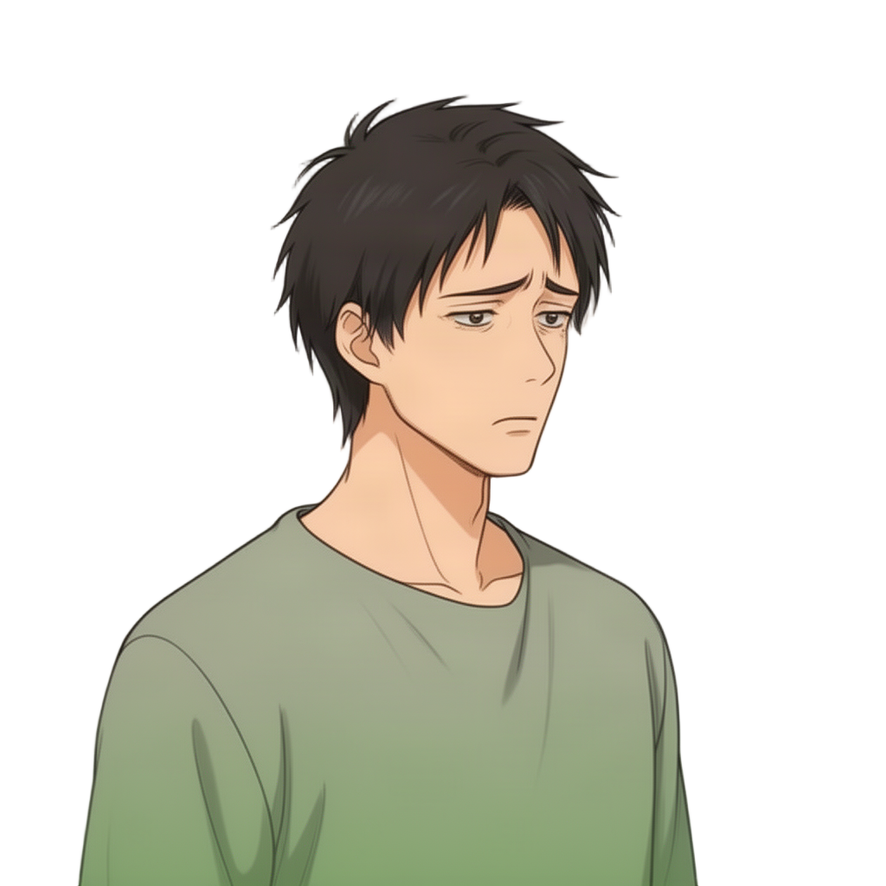
p wrack_tunic_grievingflux-2 $0.024 art/refs/ch04/portraits/wrack_tunic_grieving.pngused: unusedprompt
model: fal-ai/flux-2/edit
purpose: sheet
refs: art/refs/ch02/portraits/wrack_tunic_calm.png
Anime-style character portrait, clean line art, soft cel shading, gentle natural colours. Head and shoulders, three-quarter view, the face turned toward the viewer's right, plain light grey background, no text. The same character as the reference image: same face, same hair, same clothes, same lighting, same skin colour; only the expression changes. Both shoulders visible. The eyes are fully drawn with irises, pupils and highlights. A moderate, restrained expression, no grin, no laughing. Lean man, short messy black hair, light skin, dark brown eyes, plain grey-green tunic. Expression: grieving and silent, eyes lowered and a little wet, brows drawn together, mouth pressed shut; no tears running down the face.
 p wrack_tunic_lostflux-2 $0.024 art/refs/ch01/portraits/wrack_tunic_lost.pngused: ch1×3, ch2×1, ch4×3
p wrack_tunic_lostflux-2 $0.024 art/refs/ch01/portraits/wrack_tunic_lost.pngused: ch1×3, ch2×1, ch4×3prompt
model: fal-ai/flux-2/edit
purpose: sheet
refs: /private/tmp/claude-501/-Users-ursschweigert-Documents-GitHub-OvaraVN/cc48d835-f556-4c15-90fe-4f84aaa68c2a/scratchpad/wrack_tunic_head.png
Anime-style character portrait, clean line art, soft cel shading, gentle natural colours. Head and shoulders, three-quarter view turned toward the viewer's right, plain light grey background, no text. The same character as the reference image: same face, same hair, same clothes, same lighting; only the expression changes. Both shoulders visible. Expression: lost, blank, staring at nothing, empty.
 p wrack_tunic_resolvedflux-2 $0.024 art/refs/ch02/portraits/wrack_tunic_resolved.pngused: ch2×2, ch4×1
p wrack_tunic_resolvedflux-2 $0.024 art/refs/ch02/portraits/wrack_tunic_resolved.pngused: ch2×2, ch4×1prompt
model: fal-ai/flux-2/edit
purpose: sheet
refs: art/refs/ch01/portraits/wrack_tunic.png
Anime-style character portrait, clean line art, soft cel shading, gentle natural colours. Head and shoulders, three-quarter view, the face turned toward the viewer's right, plain light grey background, no text. The same character as the reference image: same face, same hair, same clothes, same lighting; only the expression changes. Both shoulders visible. The eyes are fully drawn with irises, pupils and highlights. Expression: resolved, jaw set, eyes steady and determined.
 p wrack_tunic_shakenflux-2 $0.024 art/refs/ch02/portraits/wrack_tunic_shaken.pngused: ch2×3, ch3×1, ch4×2
p wrack_tunic_shakenflux-2 $0.024 art/refs/ch02/portraits/wrack_tunic_shaken.pngused: ch2×3, ch3×1, ch4×2prompt
model: fal-ai/flux-2/edit
purpose: sheet
refs: art/refs/ch01/portraits/wrack_tunic.png
Anime-style character portrait, clean line art, soft cel shading, gentle natural colours. Head and shoulders, three-quarter view, the face turned toward the viewer's right, plain light grey background, no text. The same character as the reference image: same face, same hair, same clothes, same lighting; only the expression changes. Both shoulders visible. The eyes are fully drawn with irises, pupils and highlights. Expression: shaken, pale and sweating, eyes wide and unsteady.
 p wrack_tunic_shiveringflux-2 $0.024 art/refs/ch02/portraits/wrack_tunic_shivering.pngused: ch2×1
p wrack_tunic_shiveringflux-2 $0.024 art/refs/ch02/portraits/wrack_tunic_shivering.pngused: ch2×1prompt
model: fal-ai/flux-2/edit
purpose: sheet
refs: art/refs/ch01/portraits/wrack_tunic.png
Anime-style character portrait, clean line art, soft cel shading, gentle natural colours. Head and shoulders, three-quarter view, the face turned toward the viewer's right, plain light grey background, no text. The same character as the reference image: same face, same hair, same clothes, same lighting; only the expression changes. Both shoulders visible. The eyes are fully drawn with irises, pupils and highlights. Expression: ebbed and shivering, drained, gaze unfocused but with pupils, lips pale.
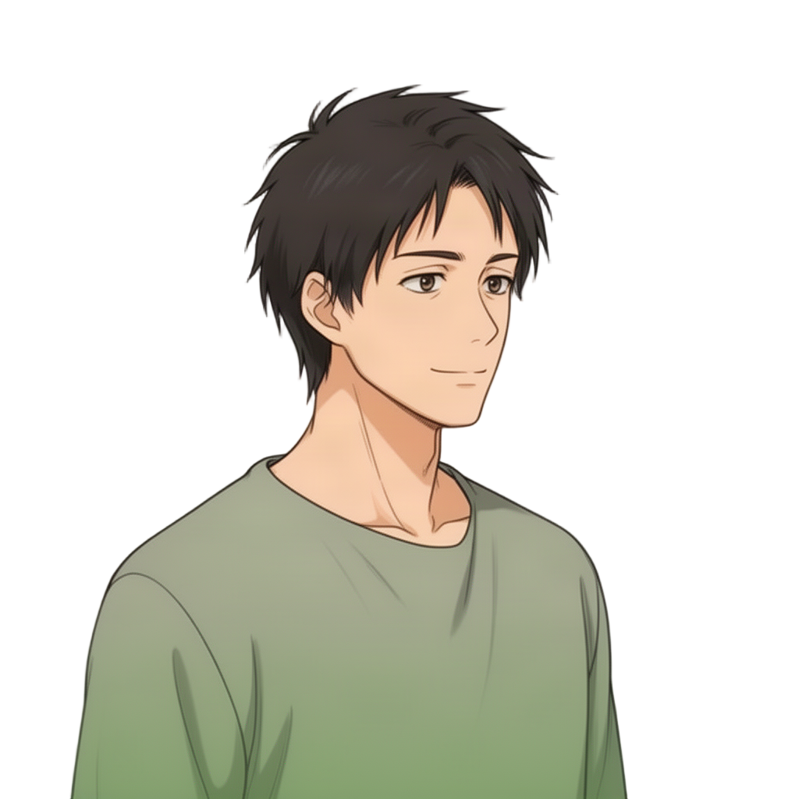
p wrack_tunic_softflux-2 $0.024 art/refs/ch02/portraits/wrack_tunic_soft.pngused: ch2×2, ch3×1, ch4×1prompt
model: fal-ai/flux-2/edit
purpose: sheet
refs: art/refs/ch01/portraits/wrack_tunic.png
Anime-style character portrait, clean line art, soft cel shading, gentle natural colours. Head and shoulders, three-quarter view, the face turned toward the viewer's right, plain light grey background, no text. The same character as the reference image: same face, same hair, same clothes, same lighting; only the expression changes. Both shoulders visible. The eyes are fully drawn with irises, pupils and highlights. A subdued, quiet, realistic expression: no grin, no laughing, no wide open mouth, no wink. Expression: a very slight, gentle half-smile with the mouth closed, calm and at ease, a little warmth in the eyes.
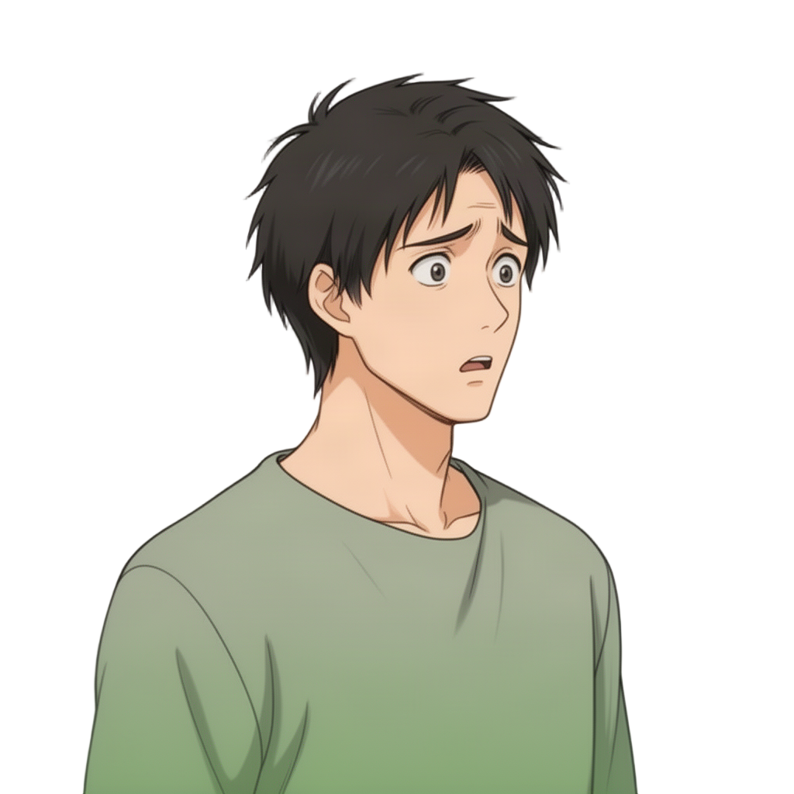
p wrack_tunic_stunnedflux-2 $0.024 art/refs/ch05/portraits/wrack_tunic_stunned.pngused: unusedprompt
model: fal-ai/flux-2/edit
purpose: sheet
refs: art/refs/ch01/portraits/wrack_tunic.png
Anime-style character portrait, clean line art, soft cel shading, gentle natural colours. Head and shoulders, three-quarter view, the face turned toward the viewer's right, plain light grey background, no text. The same character as the reference image: same face, same hair, same clothes, same skin colour; only the expression changes. Both shoulders visible. The eyes are fully drawn with irises, pupils and highlights, looking open. A restrained realistic expression, moderate, no grin, no laughing, no tears streaming. Expression: stunned, eyes wide with small pupils, brows raised, lips parted, frozen.
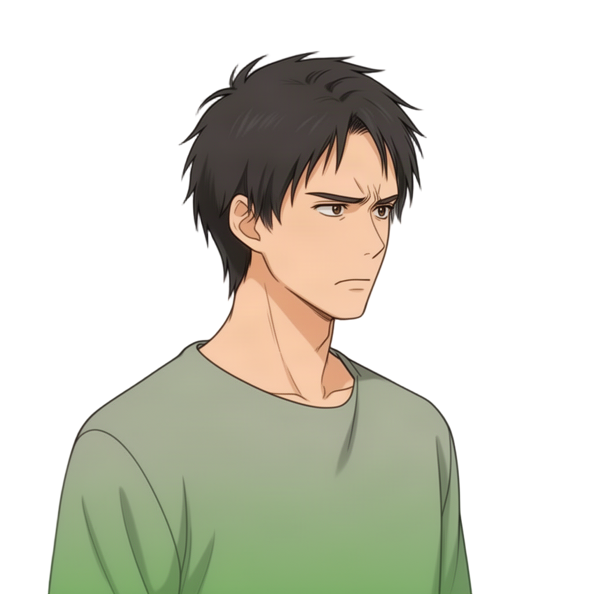
p wrack_tunic_thinkingflux-2 $0.024 art/refs/ch06/portraits/wrack_tunic_thinking.pngused: unusedprompt
model: fal-ai/flux-2/edit
purpose: sheet
refs: art/refs/ch05/portraits/wrack_tunic_resolved.png
Anime-style character portrait, clean line art, soft cel shading, gentle natural colours. Head and shoulders, three-quarter view, the face turned toward the viewer's right, plain light grey background, no text. The same character as the reference image: same face, same hair, same clothes, same skin colour; only the expression changes. Lean man, short messy black hair, light skin, dark brown eyes, grey-green tunic. Both shoulders visible. Small normal realistic eyes, fully drawn with irises, pupils and highlights, no cartoon eyes, not large, not round, not shiny. A restrained realistic expression, moderate, no grin, no laughing, no tears streaming. Expression: frowning, thinking hard, brows drawn, eyes looking to the side at nothing, mouth closed.
 p wrack_tunic_troubledflux-2 $0.024 art/refs/ch01/portraits/wrack_tunic.pngused: ch1×3, ch2×2, ch3×3, ch4×4
p wrack_tunic_troubledflux-2 $0.024 art/refs/ch01/portraits/wrack_tunic.pngused: ch1×3, ch2×2, ch3×3, ch4×4prompt
model: fal-ai/flux-2/edit
purpose: sheet
refs: /private/tmp/claude-501/-Users-ursschweigert-Documents-GitHub-OvaraVN/cc48d835-f556-4c15-90fe-4f84aaa68c2a/scratchpad/wrack_tunic_head.png
Anime-style character portrait, clean line art, soft cel shading, gentle natural colours. Head and shoulders only, the head and upper chest filling the frame, three-quarter view turned to face the viewer's right, plain light grey background, no text. The same character as the reference image: same face, same hair, same clothes. A man, quietly troubled, in the plain grey-green tunic.
Backgrounds (107)
 bg burial_kelpflux-2-t2i $0.024 art/refs/ch02/places/burial_kelp.pngused: ch2×1
bg burial_kelpflux-2-t2i $0.024 art/refs/ch02/places/burial_kelp.pngused: ch2×1prompt
model: fal-ai/flux-2
purpose: background
refs:
Anime-style background illustration, clean line art, soft cel shading, gentle natural colours, wide landscape view, no people, no text. Underwater in a golden-green kelp forest, brass-coloured kelp trunks as thick as a man's waist. On the trunks at head height are rows of small carved scratches and notches, like old inscriptions worn smooth, with NO readable letters and no writing. The oldest carvings climb far up the trunks. At the foot of one trunk a small bundle wrapped in grey-green cloth rests, weighted with a stone.
 bg c10_frigate_deck used: unused
bg c10_frigate_deck used: unusedprompt
(no prompt saved)
 bg c10_frigate_overturned used: unused
bg c10_frigate_overturned used: unusedprompt
(no prompt saved)
 bg c10_lamps_swell used: unused
bg c10_lamps_swell used: unusedprompt
(no prompt saved)
 bg c10_planking used: unused
bg c10_planking used: unusedprompt
(no prompt saved)
 bg c10_storm_wall used: unused
bg c10_storm_wall used: unusedprompt
(no prompt saved)
 bg c11_valley_brown used: unused
bg c11_valley_brown used: unusedprompt
(no prompt saved)
 bg c11_valley_dusk used: unused
bg c11_valley_dusk used: unusedprompt
(no prompt saved)
 bg c11_valley_gold used: unused
bg c11_valley_gold used: unusedprompt
(no prompt saved)
 bg c11_valley_morning used: unused
bg c11_valley_morning used: unusedprompt
(no prompt saved)
 bg c11_valley_night used: unused
bg c11_valley_night used: unusedprompt
(no prompt saved)
 bg c11_valley_silent used: unused
bg c11_valley_silent used: unusedprompt
(no prompt saved)
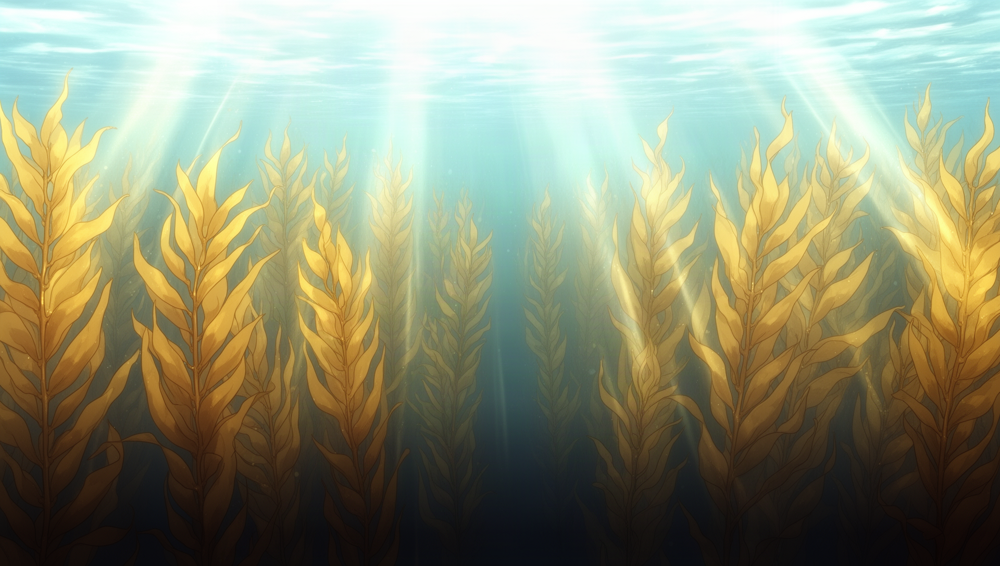
bg c6_forest_beneath used: ch6×1, ch7×1prompt
(no prompt saved)
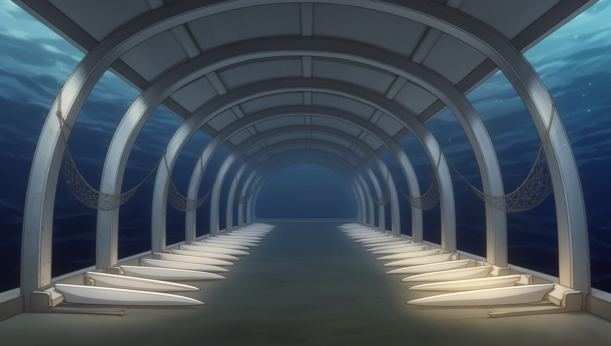
bg c6_gallery_failing used: ch6×6prompt
(no prompt saved)
 bg c6_gallery_nineteen used: ch6×1
bg c6_gallery_nineteen used: ch6×1prompt
(no prompt saved)
 bg c6_gallery_stern used: ch6×2
bg c6_gallery_stern used: ch6×2prompt
(no prompt saved)
 bg c6_heart_under used: ch6×4
bg c6_heart_under used: ch6×4prompt
(no prompt saved)
 bg c6_kelp_gold_black used: ch6×1
bg c6_kelp_gold_black used: ch6×1prompt
(no prompt saved)
 bg c6_slick_inside used: ch6×1
bg c6_slick_inside used: ch6×1prompt
(no prompt saved)
 bg c7_concord_room used: ch7×1
bg c7_concord_room used: ch7×1prompt
(no prompt saved)
 bg c7_control_hall_night used: ch7×1
bg c7_control_hall_night used: ch7×1prompt
(no prompt saved)
 bg c7_ember_dusk used: ch7×2
bg c7_ember_dusk used: ch7×2prompt
(no prompt saved)
 bg c7_ember_house used: ch7×3
bg c7_ember_house used: ch7×3prompt
(no prompt saved)
 bg c7_fog_landing used: ch7×1
bg c7_fog_landing used: ch7×1prompt
(no prompt saved)
 bg c7_gallery_shelves used: ch7×1
bg c7_gallery_shelves used: ch7×1prompt
(no prompt saved)
 bg c7_gallery_snow used: ch7×3
bg c7_gallery_snow used: ch7×3prompt
(no prompt saved)
 bg c7_halcyon_office used: ch7×2
bg c7_halcyon_office used: ch7×2prompt
(no prompt saved)
 bg c7_hush_above used: ch7×3
bg c7_hush_above used: ch7×3prompt
(no prompt saved)
 bg c7_hush_exterior used: ch7×1
bg c7_hush_exterior used: ch7×1prompt
(no prompt saved)
 bg c7_hush_hall used: ch7×1
bg c7_hush_hall used: ch7×1prompt
(no prompt saved)
 bg c7_hush_room used: ch7×2
bg c7_hush_room used: ch7×2prompt
(no prompt saved)
 bg c7_nine_spires used: ch7×1
bg c7_nine_spires used: ch7×1prompt
(no prompt saved)
 bg c7_saltgate_kitchen used: ch7×1
bg c7_saltgate_kitchen used: ch7×1prompt
(no prompt saved)
 bg c7_sluice_school used: ch7×1
bg c7_sluice_school used: ch7×1prompt
(no prompt saved)
 bg c7_smokers used: ch7×1
bg c7_smokers used: ch7×1prompt
(no prompt saved)
 bg c8_belt_rain used: unused
bg c8_belt_rain used: unusedprompt
(no prompt saved)
 bg c8_belt_under used: unused
bg c8_belt_under used: unusedprompt
(no prompt saved)
 bg c8_boat_storm used: unused
bg c8_boat_storm used: unusedprompt
(no prompt saved)
 bg c8_brightwater_ext used: unused
bg c8_brightwater_ext used: unusedprompt
(no prompt saved)
 bg c8_eye_boat used: unused
bg c8_eye_boat used: unusedprompt
(no prompt saved)
 bg c8_loading_dock used: unused
bg c8_loading_dock used: unusedprompt
(no prompt saved)
 bg c8_lobby used: unused
bg c8_lobby used: unusedprompt
(no prompt saved)
 bg c8_lock used: unused
bg c8_lock used: unusedprompt
(no prompt saved)
 bg c8_market_low used: unused
bg c8_market_low used: unusedprompt
(no prompt saved)
 bg c8_noodle_window used: unused
bg c8_noodle_window used: unusedprompt
(no prompt saved)
 bg c8_poster_canal used: unused
bg c8_poster_canal used: unusedprompt
(no prompt saved)
 bg c8_saltgate used: unused
bg c8_saltgate used: unusedprompt
(no prompt saved)
 bg c8_sluice used: unused
bg c8_sluice used: unusedprompt
(no prompt saved)
 bg c8_stair_flooded used: unused
bg c8_stair_flooded used: unusedprompt
(no prompt saved)
 bg c8_tank_room used: unused
bg c8_tank_room used: unusedprompt
(no prompt saved)
 bg c8_under_market used: unused
bg c8_under_market used: unusedprompt
(no prompt saved)
 bg c8_wet_market used: unused
bg c8_wet_market used: unusedprompt
(no prompt saved)
 bg c9_barge_night used: unused
bg c9_barge_night used: unusedprompt
(no prompt saved)
 bg c9_coal_wharf used: unused
bg c9_coal_wharf used: unusedprompt
(no prompt saved)
 bg c9_design_loft used: unused
bg c9_design_loft used: unusedprompt
(no prompt saved)
 bg c9_eye_tugs used: unused
bg c9_eye_tugs used: unusedprompt
(no prompt saved)
 bg c9_ferry_stage used: unused
bg c9_ferry_stage used: unusedprompt
(no prompt saved)
 bg c9_keelhaven_night used: unused
bg c9_keelhaven_night used: unusedprompt
(no prompt saved)
 bg c9_lashing_water used: unused
bg c9_lashing_water used: unusedprompt
(no prompt saved)
 bg c9_lock_rain used: unused
bg c9_lock_rain used: unusedprompt
(no prompt saved)
 bg c9_net_loft used: unused
bg c9_net_loft used: unusedprompt
(no prompt saved)
 bg c9_raske_office used: unused
bg c9_raske_office used: unusedprompt
(no prompt saved)
 bg c9_soup_barge used: unused
bg c9_soup_barge used: unusedprompt
(no prompt saved)
 bg c9_tug_storm used: unused
bg c9_tug_storm used: unusedprompt
(no prompt saved)
 bg cradlesflux-2-t2i $0.024 art/refs/ch03/places/cradles.pngused: ch3×1
bg cradlesflux-2-t2i $0.024 art/refs/ch03/places/cradles.pngused: ch3×1prompt
model: fal-ai/flux-2
purpose: background
refs:
Anime-style background illustration, clean line art, soft cel shading, gentle natural colours, wide landscape view, no people, no text, no letters. Inside the closed pale-ribbed hull of a great vehicle deep under the sea: a curved metal tunnel with ribs, a row of cradles shaped like long slender needles set into the floor, each with a small carved mark beside it; one near the end stands empty with silt in it. The hull is completely closed: no opening, no beach, no sand dunes, no sky. Dim warm lamplight, a quiet hush.
 bg dark_hallflux-2-t2i $0.024 art/refs/ch04/places/dark_hall.pngused: ch4×3
bg dark_hallflux-2-t2i $0.024 art/refs/ch04/places/dark_hall.pngused: ch4×3prompt
model: fal-ai/flux-2
purpose: background
refs:
Anime-style background illustration, clean line art, soft cel shading, gentle natural colours, wide landscape view, no people, no animals, no text, no letters. A vast high hall of milk-pale glass that is dark and unlit, deep underwater: the round pools on the floor are dry, empty pale basins with dust in them. The tall windows show only black deep water outside with a few drifting specks, no trees, no land, no sky. Cold dim blue-grey light, a tall archway in front leading to a second dark hall. Cold, silent, abandoned, no water in the pools. Nobody in the hall.
 bg dc_canyon_aboveflux-2-t2i $0.024 art/refs/ch05/places/dc_canyon_above.pngused: ch5×2
bg dc_canyon_aboveflux-2-t2i $0.024 art/refs/ch05/places/dc_canyon_above.pngused: ch5×2prompt
model: fal-ai/flux-2
purpose: background
refs:
Anime-style background illustration, clean line art, soft cel shading, gentle natural colours, wide landscape view, no people, no animals, no text, no letters. Entirely underwater, no sky, no horizon, no grass, no surface. Looking down from above the rim into a vast canyon under the sea: a crack in the floor of the world, a gulf a kilometre wide and so deep that the bottom is lost in blue. On both sides a golden kelp forest runs to the rim and stops. Down both walls, from the rim as far as the eye can see, run tiers of long lit galleries cut from the living rock and faced with pale glass, hundreds of them, tier below tier. Slender bridges cross the gulf from wall to wall one above another, and hanging gardens of weed trail from every ledge. Near the top the galleries shine white, lower down they turn dark with long swags of weak greenish-yellow glowing weed. A city built like the inside of a throat. Tiny figures crossing the bridges are allowed but only as specks.
 bg dc_canyon_lit60flux-2-t2i $0.024 art/refs/ch05/places/dc_canyon_lit60.pngused: ch5×1
bg dc_canyon_lit60flux-2-t2i $0.024 art/refs/ch05/places/dc_canyon_lit60.pngused: ch5×1prompt
model: fal-ai/flux-2
purpose: background
refs:
Anime-style background illustration, clean line art, soft cel shading, gentle natural colours, wide landscape view, no people, no animals, no text, no letters. Entirely underwater, no sky, no horizon, no grass, no surface. A vast undersea canyon seen from its middle, looking along a gulf a kilometre wide with galleries cut down both walls. The upper three fifths of the tiers of long glass-faced galleries are lit with warm white lamplight, glowing in rows down both walls and across slender bridges. Then at one sharp level the light stops, and the lower two fifths of the tiers below are completely dark, black windows fading into deep blue. Hanging gardens of weed trail from the ledges. Calm, tired, hard-won, a hold half alive. Nobody visible.
 bg dc_heart_chamberflux-2-t2i $0.024 art/refs/ch05/places/dc_heart_chamber.pngused: ch5×4
bg dc_heart_chamberflux-2-t2i $0.024 art/refs/ch05/places/dc_heart_chamber.pngused: ch5×4prompt
model: fal-ai/flux-2
purpose: background
refs:
Anime-style background illustration, clean line art, soft cel shading, gentle natural colours, wide landscape view, no people, no animals, no text, no letters. Dry air, no water inside the room, nothing flooded. A vast dim stone vault as big as a meeting hall, deep inside an undersea city, no windows to the outside. In the centre an enormous pale ribbed air-heart the size of a house, like a great closed shell standing on its hinge, furred with a fine grey dust, cold and still. Round it run channels as thick as a man's body, bringing the sea in on one side and carrying it away on the other, water moving slowly inside them. A broken wax seal on a door at the side. Dim low light, a strand of weak greenish-yellow glowing weed. Nobody present.
 bg dc_high_hallflux-2-t2i $0.024 art/refs/ch05/places/dc_high_hall.pngused: ch5×2
bg dc_high_hallflux-2-t2i $0.024 art/refs/ch05/places/dc_high_hall.pngused: ch5×2prompt
model: fal-ai/flux-2
purpose: background
refs:
Anime-style background illustration, clean line art, soft cel shading, gentle natural colours, wide landscape view, no people, no animals, no text, no letters. Dry air, no water inside the room, nothing flooded. Inside the grandest council hall of an undersea city, on the third tier. The roof is a vault of clear pale glass, and beyond it the upper waters of a canyon moving like a green sky. The floor is perfectly flat and solid, pale stone inlaid with shell in a pattern of waves, no pool, no hole, no water on the floor. Seven tall plain stone seats stand in a shallow arc, all empty, under good white lamps on short ivory posts. Cool, formal, echoing. Nobody in the room.
 bg dc_lowest_hallsflux-2-t2i $0.024 art/refs/ch05/places/dc_lowest_halls.pngused: ch5×1
bg dc_lowest_hallsflux-2-t2i $0.024 art/refs/ch05/places/dc_lowest_halls.pngused: ch5×1prompt
model: fal-ai/flux-2
purpose: background
refs:
Anime-style background illustration, clean line art, soft cel shading, gentle natural colours, wide landscape view, no people, no animals, no text, no letters. Dry air, no water inside the room, nothing flooded. A long, low dry hall in the bottom of an undersea city, no windows to the outside, lit only by a dim green gloom and swags of weak greenish-yellow glowing weed hung from the ceiling. Close rows of blankets and bundles laid on the floor edge to edge where people have been sleeping, the blankets empty and no people visible, stale warm thick air, everything worn and still. Oppressive and sad.
 bg dc_sea_doorflux-2-t2i $0.024 art/refs/ch05/places/dc_sea_door.pngused: ch5×1
bg dc_sea_doorflux-2-t2i $0.024 art/refs/ch05/places/dc_sea_door.pngused: ch5×1prompt
model: fal-ai/flux-2
purpose: background
refs:
Anime-style background illustration, clean line art, soft cel shading, gentle natural colours, wide landscape view, no people, no animals, no vessels, no text, no letters. A dry stone chamber on the rim of an undersea canyon city, quiet and bare. In the floor a round pool of still seawater, the sea-door, with a ring of worn stone around it. Beyond it a wide archway of pale glass looks out on open water: a golden kelp forest rolling away under green water, nothing else in the water, a plain empty view. Dry air inside the chamber; the glass keeps the sea out. Cool morning light, nobody present.
 bg dc_service_tunnelsflux-2-t2i $0.024 art/refs/ch05/places/dc_service_tunnels.pngused: ch5×1
bg dc_service_tunnelsflux-2-t2i $0.024 art/refs/ch05/places/dc_service_tunnels.pngused: ch5×1prompt
model: fal-ai/flux-2
purpose: background
refs:
Anime-style background illustration, clean line art, soft cel shading, gentle natural colours, wide landscape view, no people, no animals, no text, no letters. Dry air, no water inside the room, nothing flooded. A narrow stone service tunnel behind the galleries of an undersea city: low rough-cut stone, old pale pipes running along the wall, a worn stair going down, dim light from a few failing pale lamps and a swag of weak greenish-yellow glowing weed hung along the pipes, worn smooth by three thousand years of lamp-cleaners' feet. No windows to the outside. Nobody present.
 bg dome_crownflux-2-t2i $0.024 art/refs/ch02/places/dome_crown.pngused: ch2×1
bg dome_crownflux-2-t2i $0.024 art/refs/ch02/places/dome_crown.pngused: ch2×1prompt
model: fal-ai/flux-2
purpose: background
refs:
Anime-style background illustration, clean line art, soft cel shading, gentle natural colours, wide landscape view, no people, no text. Entirely underwater, deep under the sea at night, everything seen through blue-green water, no sky, no moon, no horizon, no land, no grass. The rounded crown at the top of a hill-sized dome of pale smooth curved panes held by seamless white metal ribs, with a flat circular platform at its very top where a person could stand. A faint silver shimmer of moonlight reaches down from the far-off surface. Below, stone terraces and kelp rows fade into dark blue water.
 bg dome_dark_halfflux-2 $0.036 art/refs/ch02/places/dome_dark_half.pngused: ch2×1
bg dome_dark_halfflux-2 $0.036 art/refs/ch02/places/dome_dark_half.pngused: ch2×1prompt
model: fal-ai/flux-2/edit
purpose: background
refs: art/refs/ch01/lamp/lamp_unlit.png
Anime-style background illustration, clean line art, soft cel shading, gentle natural colours, wide landscape view, no people, no text. Reference 1 is a lamp design. The inside of the dark half of a great ancient dome, dim, looking up along curved white metal ribs. Eleven dead lamps of exactly the design in reference 1 (a short pale post topped by a caged glass lens housing, with a few ribbed collars and cables) are fixed in a row along the ribs, all dark. Long strings of faintly glowing yellow-green weed hang against the dark panes. Evening, quiet, nobody there.
 bg dry_roomflux-2-t2i $0.024 art/refs/ch01/places/dry_room.pngused: ch1×3
bg dry_roomflux-2-t2i $0.024 art/refs/ch01/places/dry_room.pngused: ch1×3prompt
model: fal-ai/flux-2
purpose: background
refs:
Anime-style background illustration, clean line art, soft cel shading, gentle natural colours, wide landscape view, no people, no animals, no text. The inside of a small plain stone room, dry air, no water and no bubbles, lit by warm lamplight, with a stone floor, a plain wooden bench along one wall, and a doorway. Quiet, still, plain.
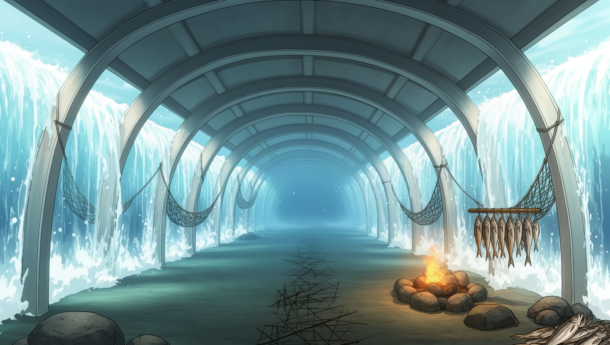
bg galleryflux-2-t2i $0.024 art/refs/ch03/places/gallery.pngused: ch3×3, ch7×3prompt
model: fal-ai/flux-2
purpose: background
refs:
Anime-style background illustration, clean line art, soft cel shading, gentle natural colours, wide landscape view, no people, no text, no letters. Inside a flooded hall a kilometre long that travels through the deep sea: pale metal ribs arch overhead one behind another into a distant point of light. There are no walls and no windows: between the ribs flows a wall of bright, clear, faintly glowing bound water, pouring past like the back of a waterfall, and beyond it only the dark blue-green open sea, with NO sky, NO horizon, NO land and NO beach anywhere. A band of scratched marks runs along the floor, hammock-nets hang between the ribs, cooking stones and a rack of dried fish. Warm, still, calm.
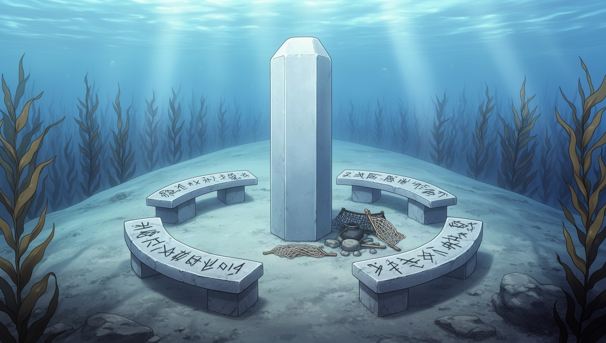
bg greywatch_stoneflux-2-t2i $0.024 art/refs/ch03/places/greywatch_stone.pngused: ch3×4prompt
model: fal-ai/flux-2
purpose: background
refs:
Anime-style background illustration, clean line art, soft cel shading, gentle natural colours, wide landscape view, no people, no text, no letters. Underwater on a bare rise above a kelp forest where nothing grows, a strong cold current. At the centre stands a six-sided pillar of pale smooth stuff twice the height of a man with nothing on it. Round it a ring of stone benches whose surfaces are covered in worn abstract scratched marks, nothing readable. In a hollow on the lee side a small camp of nets and a cooking stone. Cold blue light.
 bg hall_dayflux-2-t2i $0.024 art/refs/ch02/places/hall_day.pngused: ch2×1
bg hall_dayflux-2-t2i $0.024 art/refs/ch02/places/hall_day.pngused: ch2×1prompt
model: fal-ai/flux-2
purpose: background
refs:
Anime-style background illustration, clean line art, soft cel shading, gentle natural colours, wide landscape view, no people, no text. The inside of a long dry stone hall deep under the sea, with NO windows at all, solid stone walls. A row of hammocks hung along both walls, plain stone floor, soft warm light from a few pale lamps on the walls, a wooden door at the far end. Quiet. No people.
 bg ice_shelfflux-2-t2i $0.024 art/refs/ch03/places/ice_shelf.pngused: ch3×1
bg ice_shelfflux-2-t2i $0.024 art/refs/ch03/places/ice_shelf.pngused: ch3×1prompt
model: fal-ai/flux-2
purpose: background
refs:
Anime-style background illustration, clean line art, soft cel shading, gentle natural colours, wide landscape view, no people, no text, no letters. Underwater looking up at the underside of an ice shelf like an upside-down country of blue valleys and hanging ridges, domes of trapped air shining like mercury, small luminous shoals browsing along it. Clinging to the ice like a swallow's nest, a pale Maker dome hangs upside down glowing amber, with small lights moving to and fro beneath it. Cold, clear and vast.
 bg jef_workshopflux-2-t2i $0.024 art/refs/ch05/places/jef_workshop.pngused: ch5×1
bg jef_workshopflux-2-t2i $0.024 art/refs/ch05/places/jef_workshop.pngused: ch5×1prompt
model: fal-ai/flux-2
purpose: background
refs:
Anime-style background illustration, clean line art, soft cel shading, gentle natural colours, wide landscape view, no people, no animals, no text, no letters. Interior of an untidy workshop in a stone house, still and grieved. Dry air, no water inside the room, nothing flooded. Workbenches heaped with lamps in pieces and coils of wire. On the nearest bench a dead barrel-sized pale ribbed air-heart laid out in separate pieces beside a half-opened dark oval warm-stone, and beside them a plain white mug seen from the side, low angle so its inside cannot be seen, a faint dry brown stain down its side. Many small worn tools hang on the stone wall, a stool. All lamps are unlit; the light is grey and low through a small window, dusty, quiet. Nobody in the room.
 bg kelp_forestflux-2-t2i $0.024 art/refs/ch01/places/kelp_forest.pngused: ch1×2, ch3×3, ch7×1
bg kelp_forestflux-2-t2i $0.024 art/refs/ch01/places/kelp_forest.pngused: ch1×2, ch3×3, ch7×1prompt
model: fal-ai/flux-2
purpose: background
refs:
Anime-style background illustration, clean line art, soft cel shading, gentle natural colours, wide landscape view, no people, no animals, no text. The bottom of an underwater forest of giant kelp. The trunks are as thick as a man's waist and the colour of old brass, and rise straight up without a branch, further than the eye can follow. High overhead they open into long golden blades that lean all one way, like grass in a wind. Light comes down green at the edges and gold in the middle, and falls slowly across a sandy seabed.
 bg kelp_nightflux-2-t2i $0.024 art/refs/ch03/places/kelp_night.pngused: ch3×1
bg kelp_nightflux-2-t2i $0.024 art/refs/ch03/places/kelp_night.pngused: ch3×1prompt
model: fal-ai/flux-2
purpose: background
refs:
Anime-style background illustration, clean line art, soft cel shading, gentle natural colours, wide landscape view, no people, no text, no letters. Underwater at night in a golden kelp forest, dim moonlit blue-green water, brass-coloured trunks as thick as a man's waist. A slender pale silver needle-shaped vessel is moored to one kelp stem by a loop of cord, a faint soft light pulsing slowly along its flank like something asleep. Far off in the dark water, vast pale whale shapes. Quiet and still.
 bg kettle_houseflux-2-t2i $0.024 art/refs/ch04/places/kettle_house.pngused: ch4×5
bg kettle_houseflux-2-t2i $0.024 art/refs/ch04/places/kettle_house.pngused: ch4×5prompt
model: fal-ai/flux-2
purpose: background
refs:
Anime-style background illustration, clean line art, soft cel shading, gentle natural colours, wide landscape view, no people, no animals, no text, no letters. A low stone house half in the water and half out, standing on a shelf of smooth dark rock where the rock breaks the surface of black still water, under a sky the colour of a pigeon's breast, soft grey and pink and lilac, with a low red sun rolling along the rim of the world. A line of washing stiff with frost. A seaweed garden edged in shells beside the house. At one end a workshop with its wooden door standing open on a clutter of half-mended things. A kettle sits on the stone step. No fence, no gate. A few great soft bells of pale blue glowing fire, lantern jellies, drift over the black water; plain translucent bells with trailing veils, no faces, no eyes. Cold, quiet, homely.
 bg kettle_interiorflux-2-t2i $0.024 art/refs/ch04/places/kettle_interior.pngused: ch4×6
bg kettle_interiorflux-2-t2i $0.024 art/refs/ch04/places/kettle_interior.pngused: ch4×6prompt
model: fal-ai/flux-2
purpose: background
refs:
Anime-style background illustration, clean line art, soft cel shading, gentle natural colours, wide landscape view, no people, no animals, no text, no letters. Interior of a low stone house at night: one long room seen from one end, a small iron stove at the far end with a glow, a long wooden table that has been mended many times with planks of different woods, shelves of glass jars along the wall, a box bed behind a half-drawn curtain, a ladder up to a loft, a warm oil lamp lit on the table. A small window on the left shows only black night water outside with a few pale blue glowing jellies drifting past, no trees, no land. On the windowsill a small glass bowl holding a fist-sized plain translucent pale blue glowing bell with no face. Stone walls, warm lamplight, homely and lived-in. Nobody in the room.
bg landing_duskflux-2-t2i $0.024 art/refs/ch04/places/landing_dusk.pngused: ch4×1prompt
model: fal-ai/flux-2
purpose: background
refs:
Anime-style background illustration, clean line art, soft cel shading, gentle natural colours, wide landscape view, no people, no animals, no text, no letters. Dusk at the top of the world. A landing of smooth dark stone with wide steps going down into black still water, under a sky the colour of a pigeon's breast with a low red sun on the rim, a long red twilight on the water and on the ice. Far out over the black gulf a very long, slender line of pale glowing hoop-shaped ribs of an immense river-like machine passes slowly, small and distant, a smooth blunt pale prow at its front, no ship, no mast, no deck, its light flickering. Grave, quiet, farewell.
bg landing_eveningflux-2-t2i $0.024 art/refs/ch05/places/landing_evening.pngused: ch5×1prompt
model: fal-ai/flux-2
purpose: background
refs:
Anime-style background illustration, clean line art, soft cel shading, gentle natural colours, wide landscape view, no people, no animals, no text, no letters. A landing of smooth dark stone at the top of the world in the evening: wide steps going down into black still water, a low stone wall along one side, patches of pale snow and ice on the stone, a deep blue dusk sky with a faint last light on the horizon over the dark sea. Calm, cold, waiting. Empty: no boats, no vessels, no statues, no people.
bg lantern_exteriorflux-2-t2i $0.024 art/refs/ch04/places/lantern_exterior.pngused: unusedprompt
model: fal-ai/flux-2
purpose: background
refs:
Anime-style background illustration, clean line art, soft cel shading, gentle natural colours, wide landscape view, no people, no animals, no text, no letters. ENTIRELY UNDERWATER at the bottom of a deep black shaft, no sky, no horizon, no surface. A ring of nine great domed halls of milk-white glass seen from the side, counted left to right: nine domes in a long curved row like a crown, each joined to the next by a short covered glass way, each glowing from within, standing in black water like a crown of nine lamps. White fans and small pale flowers grow around them. Black rock walls of the shaft far behind. Vast, cold outside and warm within.
bg lantern_hallflux-2-t2i $0.024 art/refs/ch04/places/lantern_hall.pngused: ch4×2prompt
model: fal-ai/flux-2
purpose: background
refs:
Anime-style background illustration, clean line art, soft cel shading, gentle natural colours, wide landscape view, no people, no animals, no text, no letters. Inside a vast high hall of milk-white glass, warm, bright and very quiet: a high curved glass ceiling, and on the floor many round pools with low pale stone rims, each full of water that glows faintly gold. Empty stools at the edge of the pools. Tall archway openings at the sides. A soft gold glow. Nobody in the hall.
 bg long_dry_hallflux-2-t2i $0.024 art/refs/ch01/places/long_dry_hall.pngused: ch1×1
bg long_dry_hallflux-2-t2i $0.024 art/refs/ch01/places/long_dry_hall.pngused: ch1×1prompt
model: fal-ai/flux-2
purpose: background
refs:
Anime-style background illustration, clean line art, soft cel shading, gentle natural colours, wide landscape view, no people, no text. A long, dim, dry stone hall at night with a row of hammocks hung along both sides, plain stone floor, a faint warm lamp at the far end, quiet shadows. Nobody in it.
 bg meeting_hallflux-2 $0.036 art/refs/ch01/places/meeting_hall.pngused: ch1×1
bg meeting_hallflux-2 $0.036 art/refs/ch01/places/meeting_hall.pngused: ch1×1prompt
model: fal-ai/flux-2/edit
purpose: background
refs: art/refs/ch01/lamp/lamp_unlit.png
Anime-style wide illustration, clean line art, soft cel shading, gentle natural colours, no text. Reference 1 is the lamp. The inside of a round, high, empty meeting hall of cool grey stone, dim and quiet, lit only by a little dull light from far above, no people at all. The lamp from reference 1, exactly as designed, stands in the exact centre, floor to ceiling, dead and dark. Cool grey and blue-green colours, no red or pink.
 bg meeting_hall_litflux-2 $0.048 art/refs/ch01/places/meeting_hall_lit.pngused: ch1×1
bg meeting_hall_litflux-2 $0.048 art/refs/ch01/places/meeting_hall_lit.pngused: ch1×1prompt
model: fal-ai/flux-2/edit
purpose: background
refs: art/refs/ch01/places/meeting_hall.png, art/refs/ch01/lamp/lamp_unlit.png
Anime-style background illustration, clean line art, soft cel shading, gentle natural colours, no text, no people. Reference 1 is a round meeting hall with a dead lamp in the centre. Reference 2 is the lamp. Show exactly the same hall from the same viewpoint, but now the lamp is lit: the glass lens at the top of the lamp from reference 2 blazes with bright, steady white light, and the light pours down over the whole hall, the floor and the walls, warm white and clear. The lamp itself is unchanged. The hall is empty.
 bg net_racksflux-2-t2i $0.024 art/refs/ch02/places/net_racks.pngused: ch2×1
bg net_racksflux-2-t2i $0.024 art/refs/ch02/places/net_racks.pngused: ch2×1prompt
model: fal-ai/flux-2
purpose: background
refs:
Anime-style background illustration, clean line art, soft cel shading, gentle natural colours, wide landscape view, no people, no text. Evening inside a warm lamplit stone dome: wooden racks hung with long fishing nets drying in rows, a stone floor, a bench with a net half mended, a bone needle lying on it. Warm and quiet, nobody there.
 bg sea_doorflux-2-t2i $0.024 art/refs/ch01/places/sea_door.pngused: ch1×1
bg sea_doorflux-2-t2i $0.024 art/refs/ch01/places/sea_door.pngused: ch1×1prompt
model: fal-ai/flux-2
purpose: background
refs:
Anime-style background illustration, clean line art, soft cel shading, gentle natural colours, wide landscape view, no people, no text. The inside of a great ancient dome deep under the sea, lit by warm lamplight. Beyond the curved pale panes there is only dark blue-green sea water, no sky, no land. In the middle of the stone floor is a round pool, twenty paces across, its surface half water and half still air, glowing faintly. A little smoke drifts in the air and a small cooking fire burns at the edge of the stone floor. Quiet and warm.
bg slick_edgeflux-2-t2i $0.024 art/refs/ch03/places/slick_edge.pngused: ch3×2prompt
model: fal-ai/flux-2
purpose: background
refs:
Anime-style background illustration, clean line art, soft cel shading, gentle natural colours, wide landscape view, no people, no text, no letters. Underwater at the edge of a poisoned zone: a tall wall of golden kelp stops at a line as sharp as a shoreline. Beyond it stand neat rows of black, dead bitterwrack plants a hundred metres deep, and past them the water is the colour of strong tea, murky brown, with ragged shreds hanging in it that neither sink nor rise. Dread and silence.
bg sounding_ruinflux-2-t2i $0.024 art/refs/ch03/places/sounding_ruin.pngused: ch3×1prompt
model: fal-ai/flux-2
purpose: background
refs:
Anime-style background illustration, clean line art, soft cel shading, gentle natural colours, wide landscape view, no people, no text, no letters. Entirely underwater: the ruin of a mariner hold, a pale dome three times the size of a village's, broken open like an egg, only half of it standing, its pale ribs curving up into the dark with nothing between them. The floor inside is a drift of silt with the stumps of walls and a stair of six steps going up to nothing. A ring of bare sand surrounds it where no weed grows. Silent as a grave, dim blue light.
bg south_sea_iceflux-2-t2i $0.024 art/refs/ch05/places/south_sea_ice.pngused: ch5×2prompt
model: fal-ai/flux-2
purpose: background
refs:
Anime-style background illustration, clean line art, soft cel shading, gentle natural colours, wide landscape view, no people, no animals, no text, no letters. Entirely underwater, no sky, no horizon, no grass, no surface. Open cold sea far in the north, deep clear blue water, a vast ice shelf seen from below as an upside-down country of pale blue ridges and hanging valleys filling the upper half of the picture, light coming down through gaps in the ice in long pale shafts, a few pale singers (slender luminous fish) far off, a sense of vast distance and a long road ahead. Empty water, no buildings, no vessels.
 bg step_fogflux-2-t2i $0.024 art/refs/ch04/places/step_fog.pngused: ch4×2
bg step_fogflux-2-t2i $0.024 art/refs/ch04/places/step_fog.pngused: ch4×2prompt
model: fal-ai/flux-2
purpose: background
refs:
Anime-style background illustration, clean line art, soft cel shading, gentle natural colours, wide landscape view, no people, no animals, no text, no letters. A day of thin fog at the top of the world. The stone step of a low stone house with an iron kettle on it, beside a landing of dark stone steps going down to black still water. Pale grey fog everywhere, no trees, no land. In the black water beyond, six huge dark stingray silhouettes the size of ships hang motionless in a neat row, every one of them heading the same way, noses all pointing to the left of the picture and tails to the right, parallel, like weathervanes in a wind. Cold, still, dread.
bg step_nightflux-2-t2i $0.024 art/refs/ch04/places/step_night.pngused: ch4×4prompt
model: fal-ai/flux-2
purpose: background
refs:
Anime-style background illustration, clean line art, soft cel shading, gentle natural colours, wide landscape view, no people, no animals, no text, no letters. Night at the top of the world. The dark stone step of a low STONE house at the edge of black still water, an iron kettle on the step and an empty wooden chair with a folded rug on it. A low red sun on the rim of the world turning, laying a moving red light across a great white plain of ice above the house and across the black water. A few great soft bells of pale blue glowing fire, lantern jellies, drift over the water: plain translucent bells with trailing veils, no faces, no eyes. Quiet and gentle.
bg tangleflux-2-t2i $0.024 art/refs/ch03/places/tangle.pngused: ch3×1prompt
model: fal-ai/flux-2
purpose: background
refs:
Anime-style background illustration, clean line art, soft cel shading, gentle natural colours, wide landscape view, no people, no text, no letters. A thick wild kelp thicket under the sea, the stems rubbing together so densely that the light fails a few metres in, dim and eerie. Between the stems lie the wrecks of ancient warships from wars two hundred years gone, on their sides, furred with weed, fish going in and out of the gun-ports, a rusted helmet on the sand. A pale soft glow ahead among the stems like a held lamp.
bg terrace_duskflux-2-t2i $0.024 art/refs/ch02/places/terrace_wrecked.pngused: ch2×2prompt
model: fal-ai/flux-2
purpose: background
refs:
Anime-style background illustration, clean line art, soft cel shading, gentle natural colours, wide landscape view, no people, no text. Entirely underwater in daylight, everything seen through blue-green water, no sky, no clouds, no grass, no land above. Stone-walled kelp terraces wrecked, walls broken and stones scattered, kelp torn, black oily sludge staining the sand and turning the kelp brown and dead. Behind, a great pale dome with a long jagged crack running up its panes like a branch of lightning, sea water going in. Murky, grim.
bg terrace_workflux-2-t2i $0.024 art/refs/ch01/places/terrace_work.pngused: ch1×1prompt
model: fal-ai/flux-2
purpose: background
refs:
Anime-style background illustration, clean line art, soft cel shading, gentle natural colours, wide landscape view, no people, no text. Underwater, a tended kelp forest in golden-green light. Stone-walled terraces with rows of kelp, floating nets heaped with cut kelp fronds, harvesting hooks lying on a wall, a drying rack. A shoal of fat silver fish, each as long as an arm, grazes along the foot of a wall.
bg terrace_wreckedflux-2-t2i $0.024 art/refs/ch02/places/terrace_wrecked.pngused: ch2×4prompt
model: fal-ai/flux-2
purpose: background
refs:
Anime-style background illustration, clean line art, soft cel shading, gentle natural colours, wide landscape view, no people, no text. Entirely underwater in daylight, everything seen through blue-green water, no sky, no clouds, no grass, no land above. Stone-walled kelp terraces wrecked, walls broken and stones scattered, kelp torn, black oily sludge staining the sand and turning the kelp brown and dead. Behind, a great pale dome with a long jagged crack running up its panes like a branch of lightning, sea water going in. Murky, grim.
 bg terraces_domeflux-2-t2i $0.024 art/refs/ch01/places/terraces_dome.pngused: ch1×1
bg terraces_domeflux-2-t2i $0.024 art/refs/ch01/places/terraces_dome.pngused: ch1×1prompt
model: fal-ai/flux-2
purpose: background
refs:
Anime-style background illustration, clean line art, soft cel shading, gentle natural colours, wide landscape view, no people, no animals, no text. Underwater scene on the seabed, all of it under the sea, no grass and no soil: bare sand and stone. A tended kelp forest: kelp stands in neat rows, the sand between is raked clean. The ground rises in terraces, each walled with fitted stone. At the top stands a huge dome the size of a hill, made of a pale, smooth, milky material, neither glass nor stone, in great curved panes held by ribs of white metal with no rivet or seam. Kelp is trained up one side of it. The lower panes are worn dull. Light shines out of the dome on its left half only; the right half is dark, and long strings of weed hang against its dark panes, glowing a faint yellow-green.
bg terraces_nightflux-2-t2i $0.024 art/refs/ch02/places/terraces_night.pngused: ch2×1prompt
model: fal-ai/flux-2
purpose: background
refs:
Anime-style illustration, clean line art, soft cel shading, gentle natural colours, wide landscape view, no people, no text. A split-level over-and-under view at night, the camera exactly at the sea surface. The TOP half of the picture is ABOVE the water: a dark night sky with a bright moon and the deck, cabin lights and masts of a rusty cargo barge. The BOTTOM half is UNDERWATER: the wavy waterline cuts across the middle of the barge's hull, so the upper half of the hull is in the air and the lower half of the hull is below the waves, the keel hanging down into dark blue water. The barge floats ON the surface. Far below, small, a pale dome on the seabed with stone terraces and kelp rows fading into the deep blue.
bg well_lipflux-2-t2i $0.024 art/refs/ch04/places/well_lip.pngused: ch4×7prompt
model: fal-ai/flux-2
purpose: background
refs:
Anime-style background illustration, clean line art, soft cel shading, gentle natural colours, wide landscape view, no people, no animals, no text, no letters. The edge of a vast round hole in the sea at the top of the world. In the foreground a curved shelf of smooth dark rock with soft pale green glowing weed along its edge. Beyond the edge is nothing: black, perfectly still water, a gulf of great depth. Great soft bells of pale blue glowing fire the size of houses, lantern jellies, drift over the gulf trailing glimmering veils, reflected in the still water. A dim blue-black dusk sky above. Silent, still, as if holding its breath.
bg workshopflux-2-t2i $0.024 art/refs/ch04/places/workshop.pngused: ch4×2prompt
model: fal-ai/flux-2
purpose: background
refs:
Anime-style background illustration, clean line art, soft cel shading, gentle natural colours, wide landscape view, no people, no animals, no text, no letters. Interior of an untidy workshop in a stone house, the largest room of the house: workbenches heaped with lamps in pieces, a machine like a lamp's heart laid open, coils of pale wire that glows faintly warm, a work lamp, a stool, a mug on a bench. On one stone wall hang many small tools, each small and of no particular shape, smooth worn lumps and thin curved implements polished until they shine, not wrenches, not spoons. A small window shows only black night water outside, no trees, no land. Warm lamp light, cluttered, deeply used. Nobody in the room.
Illustrations (73)
 cg c10_bowl used: unused
cg c10_bowl used: unusedprompt
(no prompt saved)
 cg c10_rail_sefa used: unused
cg c10_rail_sefa used: unusedprompt
(no prompt saved)
 cg c10_rook_rail used: unused
cg c10_rook_rail used: unusedprompt
(no prompt saved)
 cg c10_scrip used: unused
cg c10_scrip used: unusedprompt
(no prompt saved)
 cg c11_hesper_valley used: unused
cg c11_hesper_valley used: unusedprompt
(no prompt saved)
 cg c11_sefa_hands used: unused
cg c11_sefa_hands used: unusedprompt
(no prompt saved)
 cg c11_sit_row used: unused
cg c11_sit_row used: unusedprompt
(no prompt saved)
 cg c11_twelve_hulls used: unused
cg c11_twelve_hulls used: unusedprompt
(no prompt saved)
 cg c11_youth_falls used: unused
cg c11_youth_falls used: unusedprompt
(no prompt saved)
 cg c2_bargeflux-2-t2i $0.024 art/refs/ch02/cg/barge.pngused: ch2×1
cg c2_bargeflux-2-t2i $0.024 art/refs/ch02/cg/barge.pngused: ch2×1prompt
model: fal-ai/flux-2
purpose: illustration
refs:
Anime-style wide illustration, clean line art, soft cel shading, gentle natural colours, cinematic composition, no text, no letters. A moonlit night at sea. A rusty steel cargo barge hangs high in the air on a thick pillar of sea water as steady as stone, the water streaming off its hull. On its deck the crew, all wearing black sailor uniforms, are in full panic: some run along the deck, some cling to the railings and rigging with both arms, some have fallen and crawl, others point and scream with their mouths open, hands in the air; no one stands calmly. From the barge's open hold long black threads of sludge are pouring back up into it. Silver moon, dark sea, wide dramatic view.
 cg c2_burialflux-2 $0.048 art/refs/ch02/cg/burial.pngused: ch2×1
cg c2_burialflux-2 $0.048 art/refs/ch02/cg/burial.pngused: ch2×1prompt
model: fal-ai/flux-2/edit
purpose: illustration
refs: art/refs/ch02/portraits/hesper_shut.png, art/refs/ch01/portraits/wrack_tunic.png
Anime-style wide illustration, clean line art, soft cel shading, gentle natural colours, cinematic composition, no text, no letters, no numbers. The people look exactly like the reference images, in the order given. Reference 1 is Hesper, a lean hard woman with dark hair pulled back. Reference 2 is Wrack, a lean man with short BLACK hair and pale skin in a grey-green tunic. A quiet memorial under the sea in a golden-green kelp forest of tall brass-coloured kelp trunks, each trunk carved at head height with rows of small, worn, abstract notches and scratches like old inscriptions, nothing readable. At the foot of the trunks rest small wrapped bundles of grey-green cloth with stones on them. Hesper stands silent and upright beside one trunk, her face closed like a shut door, a pack on her back and a length of knotted cord tied round her wrist. Wrack stands a little apart, head bowed, his black hair clearly visible. Exactly two people.
 cg c2_carriedflux-2-t2i $0.024 art/refs/ch02/cg/carried.pngused: ch2×1
cg c2_carriedflux-2-t2i $0.024 art/refs/ch02/cg/carried.pngused: ch2×1prompt
model: fal-ai/flux-2
purpose: illustration
refs:
Anime-style wide illustration, clean line art, soft cel shading, gentle natural colours, cinematic composition, no text, no letters. A moonlit night at sea, wide view. A great pillar of sea water, steady as stone, is walking across the ocean carrying a rusty cargo barge high on its top away into the distance, leaving a long wake of churned white water behind it. The tiny barge is silhouetted against the huge moon, small black figures of its crew clinging to it. Far behind, small, the dark swell of the sea above a hidden hold. Eerie, vast and quiet.
cg c2_dumpingflux-2-t2i $0.024 art/refs/ch02/cg/dumping.pngused: ch2×1prompt
model: fal-ai/flux-2
purpose: illustration
refs:
Anime-style wide illustration, clean line art, soft cel shading, gentle natural colours, cinematic composition, no text, no letters. Seen from underwater at night looking up: the rusty hull of a cargo barge floats on the moonlit surface, its belly hatch open, and thick black sludge pours slowly down through the water, spreading as it sinks like ink dropped in a glass. Far below, golden kelp blades curl and turn brown where the black fall touches them. Dark blue water, silver moonlight at the surface. No people.
cg c2_giftflux-2 $0.036 art/refs/ch02/cg/gift.pngused: ch2×1prompt
model: fal-ai/flux-2/edit
purpose: illustration
refs: art/refs/ch02/portraits/hesper_tired.png
Anime-style wide illustration, clean line art, soft cel shading, gentle natural colours, cinematic composition, no text, no letters. Reference 1 is Hesper, a lean hard woman with dark hair pulled back. Underwater at night, a side view of Hesper holding in her two hands a slab of living sea water, clear and glowing faintly, leaning it like a board against a falling curtain of black sludge. A strong clear current carries the black fall sideways, away from nursery beds of young silver fish below. Her face is set and strained, her hands pale and chapped. Exactly one person.
 cg c2_gunboatsflux-2-t2i $0.024 art/refs/ch02/cg/gunboats.pngused: ch2×1
cg c2_gunboatsflux-2-t2i $0.024 art/refs/ch02/cg/gunboats.pngused: ch2×1prompt
model: fal-ai/flux-2
purpose: illustration
refs:
Anime-style illustration, clean line art, soft cel shading, gentle natural colours, wide landscape view, no people, no text. A split-level over-and-under view in daylight, the camera exactly at the sea surface. The TOP half is ABOVE the water: pale sky, and the decks, guns and masts of three grey gunboats, each with a blue shield-shaped crest on its bow. The BOTTOM half is UNDERWATER: the wavy waterline cuts across the middle of each gunboat's hull, the lower half of each hull below the waves. The gunboats float ON the surface. Far below, small, a pale dome on the seabed. Menacing, quiet.
 cg c2_hesper_tryingflux-2 $0.036 art/refs/ch02/cg/hesper_trying.pngused: ch2×1
cg c2_hesper_tryingflux-2 $0.036 art/refs/ch02/cg/hesper_trying.pngused: ch2×1prompt
model: fal-ai/flux-2/edit
purpose: illustration
refs: art/refs/ch02/portraits/hesper.png
Anime-style wide illustration, clean line art, soft cel shading, gentle natural colours, cinematic composition, no text, no letters. Reference 1 is Hesper, a lean hard woman with dark hair pulled back. Underwater at night. Hesper stands alone on the flat crown of a pale dome with her arms spread wide and her head thrown back, straining, her grey-green tunic streaming. Above her a vast curtain of falling black sludge bends sideways, pushed aside by an invisible strong current. She is small beneath an enormous falling blackness. Exactly one person.
 cg c2_lampsflux-2 $0.060 art/refs/ch02/cg/lamps.pngused: ch2×1
cg c2_lampsflux-2 $0.060 art/refs/ch02/cg/lamps.pngused: ch2×1prompt
model: fal-ai/flux-2/edit
purpose: illustration
refs: art/refs/ch01/portraits/oro.png, art/refs/ch01/portraits/wrack_tunic.png, art/refs/ch01/lamp/lamp_unlit.png
Anime-style wide illustration, clean line art, soft cel shading, gentle natural colours, cinematic composition, no text. Reference 1 is Elder Oro, a very old bald man with a gentle face. Reference 2 is Wrack, a young-looking man with short BLACK hair in a grey-green tunic. Reference 3 is the lamp design. Inside the dark half of a great ancient dome, quiet and dim. On the left sits Elder Oro cross-legged on the floor with a small contented smile, serene. On the right stands Wrack beside one lamp of exactly the design in reference 3 (pale post, caged glass lens), his two hands resting on its post, calm and attentive, mouth closed, quietly wondering; the lens of that lamp has just lit and glows softly warm. A few other identical lamps stand dark along the curved white ribs behind them. There are exactly TWO people in the whole picture: Oro and Wrack, each shown once. Soft subdued mood.
 cg c2_liftingflux-2 $0.036 art/refs/ch02/cg/lifting.pngused: ch2×1
cg c2_liftingflux-2 $0.036 art/refs/ch02/cg/lifting.pngused: ch2×1prompt
model: fal-ai/flux-2/edit
purpose: illustration
refs: art/refs/ch02/portraits/wrack_tunic_shaken.png
Anime-style wide illustration, clean line art, soft cel shading, gentle natural colours, cinematic composition, no text, no letters. Reference 1 is Wrack, a lean man with short BLACK hair in a grey-green tunic. Entirely underwater at night, deep blue-green water, a rocky seabed with kelp, no beach, no sand dunes, no sky. Looking up, the silver sea surface stretches overhead like a ceiling, and a huge pillar of sea water, the full width of a ship, pushes up through the surface lifting the dark hull of a barge out of the ocean; rings of pressure spread through the water like a struck bell, bending the kelp. Small in the foreground on the seabed, Wrack on his knees with his head thrown back and his arms open, eyes wide. Exactly one person.
 cg c2_needleflux-2 $0.036 art/refs/ch02/cg/needle.pngused: ch2×1
cg c2_needleflux-2 $0.036 art/refs/ch02/cg/needle.pngused: ch2×1prompt
model: fal-ai/flux-2/edit
purpose: illustration
refs: art/refs/ch02/portraits/okonta.png
Anime-style wide illustration, clean line art, soft cel shading, gentle natural colours, cinematic composition, no text. Reference 1 is Okonta, a spare older woman with dark brown skin and short grey hair in a slate-grey high-collared suit. Entirely underwater at dusk, deep blue-green water everywhere, no sky, no horizon, drifting particles, dim blue light. Over wrecked stone terraces on the seabed a sliver of pale metal floats free in the water with nothing holding it: three times the length of a man, no thicker than a kelp stem, pointed at both ends, smooth, with no rudder, no screw and no window; a soft light runs along its flank like the light on a fish. Okonta is stepping off its side down onto the broken terrace, grave and composed. There is exactly ONE person in the picture: Okonta. No one else.
 cg c2_netsflux-2-t2i $0.024 art/refs/ch02/cg/nets.pngused: ch2×1
cg c2_netsflux-2-t2i $0.024 art/refs/ch02/cg/nets.pngused: ch2×1prompt
model: fal-ai/flux-2
purpose: illustration
refs:
Anime-style wide illustration, clean line art, soft cel shading, gentle natural colours, cinematic composition, no text, no letters. Underwater at night on stone kelp terraces. A group of mariner Tenders, long-limbed dark-eyed people in grey-green sea-silk tunics, hold up long fine-meshed nets weighted at the corners, spread under a falling curtain of thick black sludge and catching it. Other Tenders fold the black sludge into hide bladders and seal them with wax. Further back old women plant bitterwrack along the terrace edges with baskets. Grim, tired, steady work, dark blue water, moonlight from far above.
cg c2_panicflux-2 $0.048 art/refs/ch02/cg/panic.pngused: ch2×1prompt
model: fal-ai/flux-2/edit
purpose: illustration
refs: art/refs/ch01/portraits/sefa.png, art/refs/ch02/portraits/hesper.png
Anime-style wide illustration, clean line art, soft cel shading, gentle natural colours, cinematic composition, no text, no letters. Reference 1 is Sefa, a thin girl with dark hair tied back, reference 2 is Hesper, a lean woman with dark hair pulled back. Underwater at night, a sudden powerful surge of water sweeps sideways through the kelp terraces: nets, hooks and baskets whirl through the water, mariner Tenders in grey-green tunics and seal-like grey tide hounds with collars tumble in the current, frightened, scrambling. In the foreground Sefa is thrown against a stone terrace wall, stunned, her eyes shut. Behind her Hesper swims hard, reaching out a hand toward two old women being carried along by the current. Panic and chaos, dark blue water.
cg c2_preparingflux-2 $0.048 art/refs/ch02/cg/preparing.pngused: ch2×1prompt
model: fal-ai/flux-2/edit
purpose: illustration
refs: art/refs/ch02/portraits/wrack_tunic_resolved.png, art/refs/ch02/portraits/ione_pain.png
Anime-style wide illustration, clean line art, soft cel shading, gentle natural colours, cinematic composition, no text, no letters. Reference 1 is Wrack, a lean man with short BLACK hair in a grey-green tunic. Reference 2 is Ione, a sturdy healer with brown hair in a low bun and sleeves rolled up. Underwater at night. Wrack and Ione each hold a corner of a long net under a falling curtain of black sludge. A splash of black sludge has hit Ione's bare forearm; she hisses through her teeth and keeps working, grimacing. Wrack, beside her, has stopped and looks up at the long dark hull of the barge above, his whole face and body filled with a sudden fierce wanting, fists tight, the water around him beginning to stir. Exactly two people in the foreground.
cg c3_dragon_arrives used: ch3×1prompt
(no prompt saved)
cg c3_dragon_head used: ch3×1prompt
(no prompt saved)
 cg c3_eel used: ch3×1
cg c3_eel used: ch3×1prompt
(no prompt saved)
cg c3_moored_night used: ch3×1prompt
(no prompt saved)
 cg c3_needle_ride used: ch3×1
cg c3_needle_ride used: ch3×1prompt
(no prompt saved)
cg c3_sleds used: ch3×1prompt
(no prompt saved)
 cg c3_whales used: ch3×1
cg c3_whales used: ch3×1prompt
(no prompt saved)
cg c4_anselm_unhelm used: ch4×1prompt
(no prompt saved)
 cg c4_dragon_departs used: ch4×1
cg c4_dragon_departs used: ch4×1prompt
(no prompt saved)
 cg c4_hands_lamp used: ch4×1
cg c4_hands_lamp used: ch4×1prompt
(no prompt saved)
cg c4_jef_under_heart used: ch4×1prompt
(no prompt saved)
 cg c4_lantern_crown used: ch4×1
cg c4_lantern_crown used: ch4×1prompt
(no prompt saved)
 cg c4_sphere used: ch4×1
cg c4_sphere used: ch4×1prompt
(no prompt saved)
 cg c4_tool_table used: ch4×1
cg c4_tool_table used: ch4×1prompt
(no prompt saved)
cg c4_well_star used: ch4×1prompt
(no prompt saved)
cg c5_airheart_breathes used: ch5×1prompt
(no prompt saved)
 cg c5_airheart_fingers used: ch5×1
cg c5_airheart_fingers used: ch5×1prompt
(no prompt saved)
 cg c5_airheart_open used: ch5×1
cg c5_airheart_open used: ch5×1prompt
(no prompt saved)
 cg c5_airheart_reach used: ch5×1
cg c5_airheart_reach used: ch5×1prompt
(no prompt saved)
cg c5_airheart_tool used: ch5×1prompt
(no prompt saved)
cg c5_airheart_touch used: ch5×1prompt
(no prompt saved)
 cg c5_canyon used: ch5×1
cg c5_canyon used: ch5×1prompt
(no prompt saved)
cg c5_dragon_lights used: ch5×1prompt
(no prompt saved)
 cg c5_lamps_down used: ch5×1
cg c5_lamps_down used: ch5×1prompt
(no prompt saved)
 cg c5_needle_ride used: ch5×1
cg c5_needle_ride used: ch5×1prompt
(no prompt saved)
 cg c5_sefa_grips used: ch5×1
cg c5_sefa_grips used: ch5×1prompt
(no prompt saved)
cg c6_anselm_cradle used: ch6×1prompt
(no prompt saved)
cg c6_heart_laid_out used: ch6×1prompt
(no prompt saved)
 cg c6_needles_asleep used: ch6×1
cg c6_needles_asleep used: ch6×1prompt
(no prompt saved)
 cg c6_towed_slick used: ch6×1
cg c6_towed_slick used: ch6×1prompt
(no prompt saved)
cg c6_wet_glass used: ch6×1prompt
(no prompt saved)
 cg c7_girdle_snow used: ch7×2
cg c7_girdle_snow used: ch7×2prompt
(no prompt saved)
 cg c7_makers_faces used: ch7×1
cg c7_makers_faces used: ch7×1prompt
(no prompt saved)
 cg c7_ray_eye used: ch7×1
cg c7_ray_eye used: ch7×1prompt
(no prompt saved)
 cg c7_sefa_leaves used: ch7×1
cg c7_sefa_leaves used: ch7×1prompt
(no prompt saved)
 cg c7_wheel used: ch7×1
cg c7_wheel used: ch7×1prompt
(no prompt saved)
 cg c8_cupful used: unused
cg c8_cupful used: unusedprompt
(no prompt saved)
 cg c8_dace_boat used: unused
cg c8_dace_boat used: unusedprompt
(no prompt saved)
 cg c8_porter_child used: unused
cg c8_porter_child used: unusedprompt
(no prompt saved)
 cg c8_yeva_tank used: unused
cg c8_yeva_tank used: unusedprompt
(no prompt saved)
 cg c9_engine_woman used: unused
cg c9_engine_woman used: unusedprompt
(no prompt saved)
 cg c9_needle_road used: unused
cg c9_needle_road used: unusedprompt
(no prompt saved)
 cg c9_teaching_deck used: unused
cg c9_teaching_deck used: unusedprompt
(no prompt saved)
 cg c9_tug_bow used: unused
cg c9_tug_bow used: unusedprompt
(no prompt saved)
 cg c9_warm_stone used: unused
cg c9_warm_stone used: unusedprompt
(no prompt saved)
cg healingflux-2 $0.060 art/refs/ch01/cg/healing.pngused: ch1×2prompt
model: fal-ai/flux-2/edit
purpose: illustration
refs: art/refs/ch01/portraits/ione.png, art/refs/ch01/portraits/wrack.png, art/refs/ch01/portraits/oro.png
Anime-style wide illustration, clean line art, soft cel shading, gentle natural colours, cinematic composition, no text. The people look exactly like the reference images, in the order given. Reference 1 is Ione, reference 2 is Wrack, reference 3 is Elder Oro. Exactly three people in the picture and nobody else. A plain stone room lit by warm lamplight. On the left, Wrack, a man in a torn grey jacket, sits on the floor, head bowed, eyes closed. In the middle, Ione, a calm middle-aged healer with brown hair in a low bun and no ribbon, of ordinary sturdy build, sleeves rolled to the elbow, forearms ridged with old pale healed scars, kneels facing Wrack and looks down at him with steady, gentle eyes. In her two cupped hands she holds a glowing sphere of water that keeps its shape, and she is lowering it onto the top of Wrack's head, which it touches. A shallow bowl on the floor beside her. On the right, Elder Oro, very old and bald with a carved stick, sits on a bench watching.
 cg lamp_onflux-2 $0.072 art/refs/ch01/cg/lamp_on.pngused: ch1×1
cg lamp_onflux-2 $0.072 art/refs/ch01/cg/lamp_on.pngused: ch1×1prompt
model: fal-ai/flux-2/edit
purpose: illustration
refs: art/refs/ch01/portraits/oro.png, art/refs/ch01/portraits/wrack_tunic.png, art/refs/ch01/portraits/sefa.png, art/refs/ch01/lamp/lamp_unlit.png
Anime-style wide illustration, clean line art, soft cel shading, gentle natural colours, no text. Reference 1 is Elder Oro, reference 2 is Wrack in a grey-green tunic, reference 3 is Sefa, reference 4 is the lamp. A round, high meeting hall flooded with white steady light pouring down from the lens of the lamp from reference 4, exactly as designed, in the centre of the hall; the lens blazes white. There is exactly ONE bald old man in the whole picture: Elder Oro, who has sat down slowly on the floor in the foreground, leaning on his carved stick, and weeps. Wrack stands near the lamp, frightened and amazed. Sefa beside him, wide-eyed. Villagers frozen where they stand, a child shrieking, a dropped basket with shellfish rolling across the stone floor.
 cg lamp_seamflux-2 $0.048 art/refs/ch01/cg/lamp_seam.pngused: ch1×1
cg lamp_seamflux-2 $0.048 art/refs/ch01/cg/lamp_seam.pngused: ch1×1prompt
model: fal-ai/flux-2/edit
purpose: illustration
refs: art/refs/ch01/portraits/wrack_tunic.png, art/refs/ch01/lamp/lamp_unlit.png
Anime-style wide illustration, clean line art, soft cel shading, gentle natural colours, no text. Reference 1 is Wrack in a plain grey-green tunic, reference 2 is the lamp. There is exactly one person in the picture: Wrack, seen from behind, standing alone in a dim round hall. He reaches up with both hands to the lamp from reference 2, exactly as designed, at shoulder height of the column, where a hairline seam in the pale metal is opening and a thin line of white light shines out of it. The glass lens at the top of the lamp is still dark. No one else anywhere.
 cg sea_doorflux-2 $0.048 art/refs/ch01/cg/sea_door.pngused: ch1×1
cg sea_doorflux-2 $0.048 art/refs/ch01/cg/sea_door.pngused: ch1×1prompt
model: fal-ai/flux-2/edit
purpose: illustration
refs: art/refs/ch01/portraits/wrack.png, art/refs/ch01/portraits/sefa.png
Anime-style wide illustration, clean line art, soft cel shading, gentle natural colours, cinematic composition, no text. The people look exactly like the reference images, in the order given. Reference 1 is Wrack, reference 2 is Sefa. Wrack, a man in a torn grey jacket, rises out of a round pool set in the stone floor of a great ancient dome, water streaming off him, taking his first breath of air, hurting a little. Sefa stands at the pool's edge. Warm lamplight, a little smoke, a cooking fire; a great many mariner people in grey-green tunics stand around the pool looking at him.
 cg swimflux-2 $0.060 art/refs/ch01/cg/swim.pngused: ch1×1
cg swimflux-2 $0.060 art/refs/ch01/cg/swim.pngused: ch1×1prompt
model: fal-ai/flux-2/edit
purpose: illustration
refs: art/refs/ch01/portraits/sefa.png, art/refs/ch01/portraits/wrack.png, art/refs/ch01/portraits/bother.png
Anime-style wide illustration, clean line art, soft cel shading, gentle natural colours, cinematic composition, no text. The people look exactly like the reference images, in the order given. Reference 1 is Sefa, reference 2 is Wrack, reference 3 is Bother. Underwater in a golden-green kelp forest, shafts of light from above. Sefa, a thin girl of sixteen in a short grey-green sleeveless tunic with bare arms, bare legs and BARE FEET, no boots, swims easily ahead through the water. Behind her Wrack, a man in a torn grey jacket and heavy black surface boots, struggles to swim, awkward and clumsy. Bother, a grey seal-like animal with a plaited cord collar, swims upright and level ahead of them, looking back. Brass-coloured kelp trunks all around.
cg wakeflux-2 $0.060 art/refs/ch01/cg/wake.pngused: ch1×1prompt
model: fal-ai/flux-2/edit
purpose: illustration
refs: art/refs/ch01/portraits/wrack.png, art/refs/ch01/portraits/sefa.png, art/refs/ch01/portraits/bother.png
Anime-style wide illustration, clean line art, soft cel shading, gentle natural colours, cinematic composition, no text. The people look exactly like the reference images, in the order given. Reference 1 is Wrack, reference 2 is Sefa, reference 3 is Bother. Underwater at the bottom of a forest of giant brass-coloured kelp, golden-green light from above. Wrack, a man in a torn grey jacket, grey trousers and heavy black surface boots, lies on his back on the sand with a kelp frond across his face, one hand just lifting it, looking up bewildered. Sefa, a thin girl of about sixteen with dark hair tied back with a shining strip, is the only girl in the picture. She floats upright above and to the right of him, her two bare slim human legs and two bare feet fully visible, holding ONE long wooden pole in her hand whose end is a single curved metal hook like a sickle blade, a smooth crescent, NOT a fork, NOT a rake, NOT tines. She is wary. Close beside his ribs is the whiskered grey face of Bother, a seal-like hound with small folded ears, eyes open and pleased.
Fixed features (canon)
Wrack: adult man, lean, short messy BLACK hair, light skin, dark brown eyes, calm face (age not stated; reads late thirties)
Sefa: girl of about sixteen, thin, long arms and legs, dark hair tied up in a high ponytail with a shining silver-white strip, large nearly black eyes, light skin (choice)
Bother: tide hound: sleek grey seal body, broad flippers, blunt square head, whiskered grey muzzle, brown eyes set forward, small folded drooping ears (NOT pointed), collar of plaited cord
Elder Oro: very old man, bald warm brown (orange-brown) head with grey hair at the sides, warm brown skin, gentle slightly amused look; loose grey-green robe, carved wooden stick
Ione: sturdy middle-aged woman (Sefa's mother, the hold's healer), brown hair in a low bun, no ribbon, sleeves rolled to the elbow, both forearms ridged wrist to elbow with old pale healed shiny scars, calm; grey-green tunic with a belt. NOT heavy-set.
Davin: quiet big-handed man, short dark hair, slow smile, net-mender; grey-green tunic with frog fastenings, trousers
Hesper: the hold's Tidecaller, lean hard woman of about forty (reads older), strong tired face, dark hair pulled back, hands chapped white to the wrist; grey-green sea-silk tunic
Okonta: spare woman of about sixty, DARK BROWN skin, short GREY hair, close slate-grey high-collared suit, thin pale scars like pen lines from the temples down both sides of the neck under the collar (Threaded). The only person with dark skin and grey hair in a scene.
Brask: huge young man, ice-diver of Rime (the hold at the top of the world), short red hair and short red beard, wide strong face, light skin; heavy coat of sealskin worn with the fur turned INSIDE (smooth dark leather outside, grey fur visible at the collar); voice like a slab dropped; carries a seal-spear (choice: red hair, beard length)
The woman from Fallow: woman of about thirty from Fallow (unnamed), tired flat capable face, long-limbed and dark-eyed, dark hair tied back plainly, weathered light skin, worn grey-green sea-silk tunic; towed her father eleven days on a sled of kelp-floats
The old man from Fallow: very old, frail, deeply wrinkled, hollow cheeks, thin white hair, dark eyes, worn grey-green cloth wrapped round the shoulders; breathes as though each breath has to be lifted (the woman's father)
The diver officer: woman of about forty, cropped dark hair, hard-eyed; Halcyon armoured diving suit in grey with a round-glass metal helmet (face visible through the glass), a coloured stripe over the helmet marks her rank, a lamp on the helmet's brow, a blue shield-shaped crest on the shoulder; carries a harpoon gun (c03.s03.p017.2)
Jef: a very small, VERY OLD man (about nine hundred years), deeply wrinkled skin like folded paper, nearly bald with a few wisps of white hair at the sides, dark eyes (the text's 'very bright, very dark' is shown by a tiny sharp highlight, NOT by big shiny eyes); worn brown leather apron over a faded wool jersey with a hole at the elbow (choice: pale skin, tuft of white hair over the ears); no gift, a mechanic; carries a small worn tool
Maelis: Jef's wife of fifty-one years, in her seventies, tall and straight, grey hair pinned in a low bun, lined composed face, brown eyes; patched dark coat with full pockets (choice: coat colour dark charcoal, patches brown); a healer born in the Quiet, the rays' mouth
Anselm Rook: broad-shouldered white-haired man of about seventy-two, courteous heavy face, grey-blue eyes, thin pale scars from the temples down the sides of the neck (the Thread); dark close-fitting surface hard suit with a clear glass helmet (portraits show the suit's high dark collar; p_anselm_helmed shows the helmet)
Elder Vey: tall, exact woman of seventy, light skin, deep lines at forehead and eyes, silver hair bound close to her head, perfectly upright posture (never seen to slump), cold composed face; formal high-collared deep sea-green robe with a pale shell-white band at the collar (colour is a choice)
Aurel: quiet grey man of about fifty-five, close-cropped grey hair, weathered tan-brown skin, lined calm face, steady tired eyes; plain loose grey-green sea-silk tunic. The Mighty of Deep Chorus.
Corin: big broad-shouldered heavy-built man of about sixty-five (a Threaded who trained Okonta), warm tan-brown skin, short curly dark hair going grey, short grey stubble beard, heavy brows, tired steady grief-held-in face; close slate-grey high-collared suit; thin pale scars from temple down the neck; broad hands. Expressions: corin_grief, corin_shouting (voice cracking), corin_staring.
The woman with the clay tube: Threaded woman of eighty with a face like a walnut: deeply wrinkled brown-tan skin, thin white hair pulled back in a low bun, small sharp dark eyes, thin dry mouth; slate-grey high-collared suit; thin pale scars at the temple; smokes a clay tube (clove-water). Expressions: claywoman_dry, claywoman_wry.
The girl with the harpoon: Threaded girl of about nineteen, olive-tan skin, black hair cut short at the jaw, thin stubborn face, dark eyes; slate-grey high-collared suit with a pale piping at the collar; thin pale scars at the temple; carries a harpoon. Expressions: harpoongirl_angry, harpoongirl_bitter.
The young man from Fallow: Threaded young man of about twenty-four (the last Jef made before Wrack, six years ago), light skin, sandy-brown hair, lean face, scars at the temples hardly faded; plain grey-green tunic. Expressions: fallowyoung_ashamed, fallowyoung_sorry.
Nerys: Ilan's mother, a mariner living dry in Saltgate (memory), about forty, slender and long-limbed, pale light skin, black hair pinned in a low bun, large dark eyes; plain dark high-collared dress with long sleeves buttoned to the wrists. Expressions: nerys_earnest, nerys_worn.
Adler Crane: Halcyon's chief of security (memory), about forty-five, broad-shouldered, olive-pale skin, short brown hair going grey at the sides, square jaw, tired brown eyes; plain dark close-fitting high-necked security jacket. Expressions: crane_flat, crane_sorry.
Dace: Driftfolk woman of about fifty (out of Lashing), long weather-beaten tanned face with deep creases, grey-brown hair tied back, a clay pipe in her teeth, a soft hat tied on with string under the chin, worn patched olive canvas coat. Expressions: dace_cheerful (base), dace_dry, dace_pain. Ch09 adds dace_grave and dace_questioning from the same look.
Yeva: the Wellwalker, tall lean woman of about sixty-five with a long worn face, weathered olive-tan skin, long grey hair tied back loosely, dry manner; plain worn grey-green sea-silk tunic. Expressions: yeva_dry (base), yeva_stern, yeva_tired.
Pell: thin nervous young man of about twenty-five, a filing clerk of the Clean Hands, pale light skin, neat short dark-brown hair, narrow face; pale-grey jacket over a shirt and dull tie. Expressions: pell_nervous, pell_earnest.
Linnea Marsh: physician and chief of Brightwater, about sixty-five, light skin, short practical grey hair, fine lines, calm exact face; plain dark raincoat with the collar turned up. Expressions: marsh_flat, marsh_hesitant, marsh_humble.
Garran: big slow dock porter of about forty with a broken nose, tan weathered skin, short dark hair, dark stubble, thick neck; coarse sleeveless olive work shirt with a rope over one shoulder. Expressions: garran_wary, garran_accepting.
Wrack (ch08 variants): same Wrack with the Thread line on the neck. With hat (from c08.s01, Dace gives it): plain soft dark-grey short-brimmed hat, tunic: wrack_hat_guarded, wrack_hat_melancholy, wrack_hat_calm. In the Brightwater suit (c08.s05): dark charcoal business suit, white shirt, loosened tie, no hat: wrack_suit_cool, wrack_suit_sorrowful. Without hat: wrack_thread_wry, wrack_thread_straining.
Teodora Raske: small slight woman of sixty, chief designer of Kessler-Vane, short grey bobbed hair, light skin with fine lines, thin steel-rimmed spectacles, brown eyes, sharp tired intelligent face; plain dark work jacket over a white shirt with ink-stained cuffs and collar. Expressions: raske_stern, raske_shocked, raske_moved (shaken), raske_steady.
The hull man: grey, stooped man of about sixty-five, a section head under Raske, thin grey hair, short grey goatee, deep lines, light skin, hunched heavy shoulders; dark work coat with a worn brown collar. Expression: hullman_steady.
The woman from engines: woman of about forty-five, a section head, dark brown hair pinned back with loose strands, light olive skin, brown eyes, plain dark work smock with rolled sleeves; old healed burn scars on the backs of her hands and forearms (subtle, same skin colour, slightly shinier). Expressions: enginewoman_guarded, enginewoman_weeping.
The fat old man in the striped jersey: fat old man of about seventy, Driftfolk harbour caller of Lashing, round heavy jowled face, white stubble beard, thin white hair, weathered skin; blue knitted jersey with cream stripes; carries a brass trumpet under his arm (not drawn in the portrait). Expression: fatman_unhappy.
Odo: fat old Driftfolk harbourmaster / harbour caller of about seventy (the trumpet-man of c09.s05, now named), round heavy face with jowls, thin white hair combed back, white stubble beard, weathered skin, blue and cream striped knitted jersey, brass trumpet carried under the arm (not drawn in portraits). Expressions: fatman_unhappy (ch9), fatman_firm, fatman_weary (a cloth at the neck, c10.s01 'He wiped his neck').
Dace's aunt: no portrait (never speaks). In illustration c10_scrip: Driftfolk woman of about sixty-five, long weathered tanned face related to Dace but older and sterner, grey hair under a faded olive headscarf, no hat, no pipe, mouth shut like a purse, patched olive canvas apron.
The old caller of Fallow: thin old man of about seventy (Fallow's caller, not Threaded in the text; scars drawn faint on the face are a flaw of the portrait), weathered tan skin, short white hair, short white goatee, deep lines, plain grey-green high-collared sea-silk tunic; puzzled, tired, wet-eyed. Expressions: fallowcaller_puzzled, fallowcaller_wet.
The young man from Fallow (ch11 expression): same young Threaded man from Fallow as chapter 6 (light skin, sandy-brown hair, grey tunic); new expression fallowyoung_exhausted (grey pallor, heavy-lidded, no sleep since the forest).